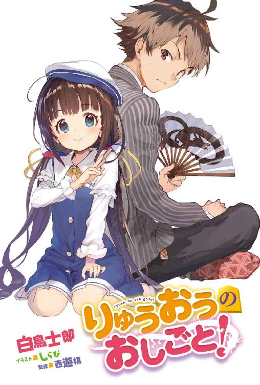

| りゅうおうのおしごと！ (GA文庫) | |
| 白鳥 士郎 | |
| (2015) | |


りゅうおうのおしごと！
白鳥士郎

本書に掲載されているコンテンツの著作権等の知的財産権およびその他すべての権利は、ＳＢクリエイティブ株式会社または正当な権利を有する第三者に帰属します。
本書の内容を権利者の許諾なく複製・複写・翻案・放送・出版・データ配信（送信可能化を含む）などすることはできません。
カバー・口絵 本文イラスト
しらび
プロローグ
「ししょうの玉......すっごく固い......」
十六歳の俺が竜王になって三ヶ月後に取った初めての弟子は小学生の女の子で、いろいろあって二人で暮らす事になった。
「はうー......こんなの固すぎるよぉ......」
目の前に座る九歳の弟子は、つるつるした頰をさくらんぼ色に染め、前屈みになって師匠の玉に顔を寄せながら、子犬のように呻いた。
天使みたいに可愛らしい女の子だ。
純粋で無垢な、まだ幼女といっていいほど幼い女の子相手にこんなにも固くしている自分に罪悪感を覚えながら、けど俺は固くする事をやめられなかった。
その固さは、もはや暴力的ですらある。
「ん......」
俺の初めての弟子──雛鶴あいは熱い吐息を漏らすと、自分の深いところをさらけ出して、俺を誘ってくる。
小学生の女の子とは思えない大胆なテクニック。
だが、これはさすがに......。
「......いいのか？ あい」
幼い弟子の決断を見て、俺は念を押す。
あいは──
「......」
こくん、と無言で頷いた。微かに震えながら......。
俺は少しだけ躊躇するが、覚悟を決めてその誘いに乗る。
「いくぞ......」
「は、はい......！」
奥の奥、弟子の急所を目掛けて手を伸ばす。
そして俺の指がそこに触れた瞬間──
「あっ！ や、やっぱりだめぇ!!」
あいは堪えきれずに身体をぴくんとさせて大きな声を出した。
予想もしていなかった場所に手を入れられて激しく動揺する。その反応が、俺にはとても気持ちいい。
「ししょう、それ............まって......」
「だめだ」
非情にそう告げる。待つ事なんてできるわけがない。
「プロの将棋に『待った』は存在しないからな」
あいは「ひうぅっ......！」と泣きそうな顔になった。
王手飛車取りをかけられれば当然の反応だ。盤上に愛はない。
四月。大阪。
満開を少し過ぎた大阪城公園の桜はもう散り始めていて、温かさを含んだ春の風が吹くたびに無数の花びらが吹雪のように舞い散る。
周囲の花見客が不思議そうな顔で、
「......何やってるんだ、あれ？」
「......将棋？ こんな所で？」
「将棋って、あんな小さくて可愛い子でもするんだ......」
「っていうかわざわざ家から持って来たの？ あの重そうな将棋盤......」
「おい、あれプロ棋士の九頭竜八一やないか？」
中には俺の正体に気づいてスマホを向ける将棋ファンもいる。
桜の名所として知られるここ大阪城西の丸庭園でもひときわ立派な桜の木の下で、俺とあいは将棋を指していた。
朝からここで場所取りしつつずっと指し続けているので、あいのさらさらした髪には桜の花びらが降り積もっている。
俺は盤上に舞い落ちる花びらを扇子で飛ばしつつ、将棋盤の横に置いてある対局時計（目覚まし時計を二つ繫げたような将棋用の時計。秒読み機能付き）を示して弟子を急かす。
「ほら。早く指さないと時間が切れるぞ？」
「うみゅう～......！」
そこからあいは小学生離れした猛烈な粘りを見せるものの、圧倒的な劣勢から竜王の攻めを受け切れるはずもなく投了。
「......まけました」
悔しさを全身から発散させてそう言った。
そしてすぐに俺の玉とその周囲を固める大量の守り駒を指さして、
「師匠ひどいです！ ぼうぎゃくです！ こんなガチガチに王様を固められたら何もできないじゃないですかー！」
「だから言ったろ？ 平手じゃ勝負にならないって」
プロの将棋指し相手にハンデ無しで小学生が挑めばボロ負けするのは当たり前。
とはいえ、この子は普通の小学生じゃない。
俺はその才能を見込んだからこそ今も本気で戦ったし、弟子に取った。棋士にとって最も大切な才能を、この小さな女の子は持っている。
その才能とは──
「もう一回！ もう一局おねがいしますっ！」
「またかぁ？ これでもう何十局目だよ......」
朝からずっと指し続けて、それでもまだ指し足りないと言う。気持ちはわからんでもない。
なんせ棋士ってのはカラオケボックスに行っても一曲も歌わず持ち込んだ盤駒で将棋だけ何十局と指し続けるような連中だから。俺も含めて。
海水浴に行った時は駒が波に流されたし、登山に行った時は山頂で早指しのリーグ戦をやって酸欠で頭がクラクラしたっけ......。
「ってか、姉弟子と桂香さん遅くない？ 澪ちゃん達も......」
「ですねー。あ、せっかくだから将棋指して待ってましょうよ！ ね？ ねっ!?」
その言葉にピンときた。
「あい、おまえ......他のみんなにこの花見の事ちゃんと言ったのか？」
「イイマシタヨー？」
「言ってないんだな？」
「ちゃんと言いましたよぅ！ ......ちょっとだけ時間はズラしましたけど」
「おい!?」
「大丈夫ですよ。四時間後にはちゃんとみんな来ますから」
四時間ておま。
「スタート夜って事じゃねえか！ どうしてそんな事したんだよ!?」
「だ、だって......」
あいは目を伏せて口を尖らせると、か細い声でこう言った。
「......ししょうと二人だけで、いっぱいいっぱい、将棋、指したかったから......」
「っ......!!」
反則だ、と思った。
この広い大阪城公園にいる誰もが目を奪われるほどに愛くるしい女の子が、大きな目に零れそうな涙を溜めて、二人きりで将棋を指したいと言ってくる。
しかも目の前にいるのは、俺の初めての弟子──一番弟子なのだ。
無理！ 甘やかさないとか、無理ッ!!
「......持ち時間十分。切れたら三十秒な」
「わぁい！ ししょーだいすきですー♡」
「はいはい」
ストレートに好意をぶつけられて内心ちょっとドキドキするが、すぐに相手が小学生だと自分に言い聞かせる。俺はロリコンじゃない。でもかわいい。くっ......。
弟子をついつい甘やかしてしまう自分に呆れつつ、キャッチボールでもするかのように、パチッ、パチッ、と小気味良い音を立てながら交互に駒を並べ直す。
分厚い将棋盤の前に座る、小さな女の子。
ある日突然、天使みたいに目の前に現れたこの子に、俺は救われた。
この子の純粋さに。『将棋だいすきですっ』ていう気持ちに。
「おねがいしますっ！」
あいは駒を並べ終えると、まっすぐ背筋を伸ばした美しい正座を整えて、盤におでこがくっつくほど深く頭を下げた。
互いに礼を交わすと、頭を上げるなり待ちきれないといったように駒を持つ。ひらひらと舞い落ちる桜の花びらみたいに、小さな手が盤の上を舞う。
「......んッ！」
指先を撓らせ、高い駒音と共にあいは盤上に駒を打ち下ろした。花よりもなお華やかで儚いその所作を見て、桜を見に来たはずの花見客が思わず嘆息を漏らす。
そしてあいは少し腰を浮かせ、小さな身体を精一杯伸ばして、盤側に置いた対局時計のスイッチを勢いよく叩き押した。
俺の手番。
動き始めた時計を見て、ふと、思い出す。
あいと出会ったあの日──二人の対局時計が時を刻み始めた、あの日の事を。
クズの恩返し
「オシッコォォォォォォォォォォォォォォォォォォォォォォォォッ!!」
なにわ筋に男の叫びが轟き渡る。
ここは大阪。『将棋会館』と壁に大きく書かれた不思議なビル。
その五階の窓から身を乗り出した男はベルトを緩めると瞬く間にズボンを膝まで下ろして縞の入ったトランクスを剝き出しにしつつ、外へ向かって絶叫した。
オシッコ！ オシッコ！ と。
「清滝先生！ 危ないからやめてください!!」
「あんた九段の大先生だろ!? 五十歳にもなって何やっとんのや!?」
「オシッコォォォ!! オシッコォォォォォォ!!」
将棋連盟関西本部の職員さんや同僚のプロ棋士達が寄って集って止めようとするが、その男──清滝鋼介九段（50）は止めるどころかますます激しく騒ぎ立てる。
ビルの下を通るサラリーマンやＯＬが「飛び降りか!?」「え!? パンツ!?」と足を止め、スマホを掲げて写メろうとしているのが見えた。
「師匠!! バカなマネはやめてください!!」
俺──九頭竜八一は師匠である清滝九段の腰にしがみつくと、ビルから落下する危険を冒しながら全力で引っ張る。
「放さんかい八一ぃぃぃぃ!! わしは......わしはここでオシッコするんやぁぁぁぁ!!」
パンツ丸出しで窓枠にしがみつきながら、師匠は吠えた。咆哮した。
「オシッコオオオオオオオオオオオオオオオオオオオオオオオオオオオオオオオオオオ!!」
なぜ我が師はこんな暴挙に走ったのか？
何が五十歳にもなった男を『職場の窓から放尿』という蛮行に駆り立てているのか？
事の発端は数時間前に遡る──
その日、ここ関西将棋会館では俺と師匠にとって記念すべき対局が行われた。
『師弟対決』である。
プロ棋士になった弟子が初めて師匠に挑戦するのだ。
「成長した姿を師匠に見ていただき、『恩返し』がしたいです」
対局前、集まった記者に俺はそう語った。
一昨年の十月に十五歳でプロ棋士になった俺は、史上四人目の『中学生棋士』であると同時に史上最年少タイトル保持者として将棋界の注目を集める存在だ。
そして師匠である清滝九段はタイトル獲得経験こそないものの二度も名人挑戦者として名乗りを上げた古豪。
重厚な棋風と熱い勝負魂を併せ持つ、関西棋界の重鎮である。
「弟子とはいえ相手はタイトル保持者。こちらが胸を借りるつもりでぶつかっていく。若々しさを解き放って自由な将棋を指したい」
下座に座った師匠は俺に向かってニヤリと笑いながら、記者達にそう語った。新品のスーツに身を包んだその姿から熱い闘志を迸らせながら。
対局前には記者の求めに応じて盤の前に座って握手する写真まで撮影し、厳粛だが、どこか温かな空気の中で、初めての師弟対決は始まった──
そして今、師匠は若々しさと共に下半身をも解き放ち、関西将棋界の聖地たる将棋会館の五階の窓から熱い聖水を迸らせようとしていた。
「オシッコでりゅぅぅぅぅぅぅぅぅぅぅ!!」
「「出すなぁぁぁぁぁぁぁぁぁぁぁっっ!!」」
日本将棋連盟関西本部の総力を挙げてオシッコでりゅのを止める。
あ、対局は俺が勝ちました。
将棋界では弟子が師匠に勝つことを『恩返し』という。
『こんなに強くなりました。育てていただいてありがとうございます』
そんなお礼を、言葉ではなく勝つことで表現する。
だが、相手が可愛い弟子だろうと負ければ死ぬほど悔しいのが将棋だ。
数年前ならハンデをつけても簡単に勝つことができた自分の子供みたいな相手に、今じゃあ平手（ハンデなし）でコロッと負かされる。
棋士としての衰えを突きつけられたようで、普通より何倍も悔しいのかもしれない。
「だからってこんな場所で放尿されちゃ困るんですよ師匠！」
「オシッコォォォォ!! オシッコでりゅのぉぉぉぉぉぉ!!」
オモチャ売り場でダダをこねる子供みたいに窓枠にしがみつく師匠（50）。いくら何でも悔しがり過ぎである。
記者の人達だって「強くなったな八一」「し、師匠！」みたいな感動の名場面を期待して集まってくれたんだろうに、まさかのオシッコ撮影会。こんなもん記事にできるわけがない。
俺も正直ガッカリだ。
師匠に褒めてもらえるとまでは思わないが、せめて棋士らしく、尊敬できる姿を見せてもらえると期待していた。
だが現実は全く違った。現実はオシッコだった。
持ち駒を盤の上にぶちまけるというマナー最悪な形で投了の意思を示すと、師匠はあまりの悔しさに無言。俯いて微かに震えていた。悔しくて、悔しくて、震える。
俺も気まずくて無言。「あー......やっちゃったよー」みたいな感じで正座。
普通ならここで今の一局を分析するんだが、明らかにそんな空気じゃない。記者さん達もお通夜のように下を向いていた。
師匠はそのまま十五分ほど黙って震えていた。
そしておもむろに立ち上がると、窓に向かってダッシュしながらこう叫んだのだ。
「オシッコォォォォォォォォォォォォォォォォォ────────ッッッ!!」
「うるっせぇぇぇぇぇぇぇぇぇぇぇぇぇぇぇぇぇ────────ッッッ!!」
限界！ もう我慢の限界です！
師匠相手にやりたくはなかったが......俺は地位を振りかざすことにした。
「『竜王』として命じます!! 大人しくトイレに行ってください!!」
「ッ......!!」
師匠はぴくんッと震え、パンツを下ろそうとしていた手を止めた。
将棋は礼に始まり礼に終わる、伝統と格式を重んじる頭脳競技だ。
今日の対局で弟子の俺が上座に座ったことからもわかるように、年長者であろうとも、師匠であろうとも、『格上』のタイトル保持者に対しては敬意を払わねばならない。
それが将棋界に七つあるタイトルのうちで『名人』と並び最高位にある竜王であればなおさらだ。
「さあ師匠。いや清滝九段。ズボンを上げてください」
「....................................クズ竜王」
「？」
「何が竜王やこのクズ！ お前なんかまぐれでタイトル取っただけのクズ竜王や！」
こ、このオッサン......言ってはならないことを......！
「クズ竜王じゃなくて九頭竜竜王です！ だいたい今あんた俺に負けたろ!!」
「こんなもん雑誌が組んだお好み対局やないか！ 公式戦やないからノーカウントや!!」
「将棋雑誌としては発行部数全世界ナンバーワンの『将棋世界』が企画してくれた対局ですよ!? 重みは公式戦と同じです!!」
「将棋雑誌なんて他に『ＮＨＫ将棋講座』と『詰将棋パラダイス』しかあらへんやないか！」
「世界一は世界一だろぉ！ 発行部数二十万部ナメんな!!」
プロ・アマ問わず将棋界のすべてがわかる格調高い将棋総合雑誌。それが『将棋世界』。
「っていうか弟子に負けて悔しいんなら正直にそう言えばいいでしょ！ 言い訳すんなよ！」
「悔しぃぃぃ！ 勝率三割のクズ竜王に負けて悔しぃぃぃぃぃ!!」
「もういっぺん言ってみろやこのクソじじい!!」
「何べんでも言うたるわクズクズクズクズクズクゥゥゥゥズゥゥゥゥゥゥ!!」
「逆破門だ！ 逆破門してやる!!」
もう師匠でも弟子でもねえ！ このおっさんブチのめす!! そしてトイレに連れて行く。
その時だった。
「八一」
「あっ！ 姉弟子!!」
セーラー服を着た、白銀の雪みたいに美しい少女が音も無く背後に立っていた。
空銀子。
入門したのが俺より早かったため年下だが『姉』に当たる、清滝門下の一番弟子だ。
「姉弟子！ 何か......何か隠すものを！ 師匠のモノを隠すものを持って来て!!」
「これを」
「さすが姉弟子！ もう準備していたと──」
手渡されたものを見て、俺は固まった。
駒箱の蓋だった。
「小さいよ！ いくら何でも小さいよ!!」
「金と玉くらい収まるでしょ？」
「下ネタかよッ!!」
せめて座布団でも持って来てくれればいいのにこの女、切羽詰まった状況でボケかましよってからに！
「姉弟子！ 冗談言ってる状況じゃないでしょ!? 何とかしてくださいよぉ!!」
「もういっそ八一もそこで一緒にオシッコしたら？」
「俺も!? なんで!?」
「そうすれば師弟の微笑ましいエピソードに」
「ならねえよ!!」
俺と姉弟子が漫才みたいなやり取りを繰り広げている隙に師匠はトランクスをズリ下ろし、
「ウヒョ──────────────────────ッ!!」
謎の雄叫びと共に、放尿。
「おおーっ！」「やった！」
少し離れた安全な場所から見ていたベテラン棋士の先生方が、何だかちょっと嬉しそうな声を上げた。止めて！ 喜んでないで止めて！
「師匠！ とにかくその汚いものを隠してください！ 師匠ぉぉぉ!!」
「オシッコォォォォォォォォォォォォォォォォォォォォォォォ!!」
「危ない！ 逃げろ！」
「キャァァァ────ッ!! 顔にかかった！ 顔にかかったぁ！」
俺の絶叫と師匠の動物じみた叫び声、そしてビルの下で見ていた野次馬たちの悲鳴が、昼下がりのなにわ筋を大いなる混沌へと導いていく......。
ズボンの皺
その後、師匠の娘さんに将棋会館まで来てもらい、かろうじてパンツのみ履かせる事に成功した師匠をタクシーに押し込んで強制送還と相成った。
「帰ったわね」
「......ですね」
姉弟子と二人、去りゆくタクシーを見送る。
放心状態の俺に、将棋連盟の職員さんが申し訳なさそうに声をかけてきた。
「九頭竜先生、空先生、大変お疲れ様でした。後は我々でやっておきますので......」
「いえ。最後まで私達がやります」
姉弟子はきっぱりそう言った。まだ飛び散った尿を洗い流すという苦行が残っている。
「で、ですが......お二人にそんなことをさせるわけには」
「師匠の恥は弟子が雪ぐものですから」
「しかし......」
職員さんは最後まで渋っていたが他にも何か問題が起こったようで、最終的には俺と姉弟子に後始末を任せて将棋会館の中へ戻って行った。将棋界は今日も大忙しである。
姉弟子は職員さんからバケツとモップを受け取ると、それをそのまま弟弟子に押しつけた。
つまり俺に。
「どうして俺だけ!?」
「役割分担。私は迷惑かけた人達にお詫びするから」
「あ、そういう対外的な行為はタイトル保持者が──」
「タイトルくらい私も持ってるし」
確かに姉弟子はタイトルを持ってる。しかも二つも。くっ......！
姉弟子は制服のスカートを翻して俺に背を向けると、
「ご通行中の皆様、大変ご迷惑をお掛けいたしました。被害に遭われた方は日本将棋連盟関西本部までご連絡を──」
そう言って頭を下げた姉弟子を見て、通行人がざわめき出す。
「あれ？ あんた......も、もしかして《浪速の白雪姫》!?」
「......」
「テレビで見ました！ サインしてください!!」
あっという間に取り囲まれる姉弟子。大人気ですね。
「キャー！ やばーいかわいいー！」「白雪姫マジ白ーい！」と女子にもモテモテだ。おーいきみたちー。ここに竜王もいるよー？ メガネ外してアピールするけど誰も気づきやがらねえ。
《浪速の白雪姫》ってのは、姉弟子の異名である。
もともと将棋雑誌か何かで使われ始めたんだけど、一年くらい前にテレビ番組で取材された際に爆発的に広まった。俺も中学生棋士や史上最年少竜王って事で騒がれはしたものの姉弟子が有名すぎるせいで完全に影に隠れている。くっ......！
ちなみに姉弟子はこの異名を気に入ってない。
今や大阪で《浪速のロッキー》や《浪花のモーツァルト》以上の知名度を誇る《浪速の白雪姫》というこの異名を現役ＪＣである姉弟子は「いらん」と一刀両断。割と本気で嫌がってる。
だがそれは極めて贅沢な悩みなのである。
将棋界において異名とは人気と実力の証。真のスター棋士にしか異名は与えられず、その異名も《一秒間に一億と三手読む男》《序盤のエジソン》《終盤の魔術師》《受ける青春》《攻める大和撫子》《駒取り坊主》《定跡伝道師》《薪割り大五郎》等々どれも痺れるほどカッコイイ。《薪割り大五郎》とか将棋と関係ないじゃん、薪じゃん、と思われる向きもあろうが、そこがまた格調高くて将棋ファン的にはグッと来る。
「はぁ......めんど」
ようやく即席サイン会を終えた姉弟子は、日傘を開きながら溜め息を漏らした。
「タイトルなんて持つと、こういう雑事が増えて煩わしい......」
「ぜーたくな悩みでございますね姫」
「ぶちころすぞわれ」
ちなみに姉弟子の持ってるタイトルは『女流棋戦』と呼ばれる女性限定のタイトル。
全部で六つあり、そのうちの『女王』と『女流玉座』が姉弟子の保持するタイトルだ。姫なのに女王っていうね（笑）。
姉弟子の実力をもってすれば全冠制覇も夢じゃないんだろうが、制度上それは不可能になっている。理由はそのうち語ります。お楽しみに。
「八一、なにをタラタラやってるの？ さっさと終わらせて」
「いやでも師匠の尿が散らばった範囲が広すぎて......」
「将棋指しなら口を動かす前に手を動かす」
へいへい。俺はせっせとモップを動かした。
「ったく、あの尿漏れ師匠......！ そこらじゅうに飛び散ってんじゃねーか！ いったい何十リットルおしっこしてんだよ!?」
「仕方ないわよ。対局中ってたくさん水を飲むし」
よく、脳をフル回転させると甘いものが欲しくなるといわれるが、将棋を指してるともっと切実に、無意識のうちに身体が欲するものがある。
水だ。
対局場に二リットルのペットボトルを五本くらい持ち込む棋士もいるし、特に終盤の局面では一手指すごとにコップが空になり頻繁にトイレに駆け込むことになる。
尿意との戦いは棋士にとって非常に切実な問題で、トイレ行ってる間に時間切れで負けるなんて情けない事態も冗談抜きでありうるのだ。俺、おしっこの話ばっかしてるな。
「囲碁の対局はトイレ休憩があるらしいですけど、将棋界にも導入して欲しいですよねー」
「ぬる......」
「え？ 温いって姉弟子、でも漏れそうになったらどうするんですか？」
「漏らせばいい」
「......？」
「おしっこ漏らすくらい、将棋負けるのに比べたら何でもないでしょ？」
マジかこの人。
「だって将棋ってのは命のやり取りでしょ？ 殺し合いでしょ？ 殺し合いの最中におしっこが漏れるとか漏れないとか気にする余裕なんてある方がおかしいし」
「姉弟子って師匠にそっくりですよね」
「ぶちころすぞわれ」
いやでもほんと尊敬するわ。戦国大名かよ。そりゃ女流棋界で無双するわ。
そんな姉弟子のＯＫが出る頃には日も傾き、すっかり夕方になっていた。長かったおしっことの付き合いもこれで終わりだ。寂しさは感じない。
「八一」
バケツとモップを返しに行こうとする俺を姉弟子が呼び止め──俺の首に腕を回した。
「ご褒美......あげる」
「えっ!? ご、ご褒美って姉弟子......な、何を──」
「はいこれ」
と、姉弟子は何やらゴワゴワしたものを俺の首に巻いた。師匠のズボンだった。
「いりませんよこんなもん!! 持って帰ってどうしろってんですかっ!?」
「嗅ぐ？」
「何でや!! 師匠のズボン持って帰って家でくんくんするとかどんな変態だよ!?」
「いい記念になるから」
「だから何の記念!? これ見て今日の悪夢を思い出せと!?」
「膝」
その言葉に俺はハッとして師匠のズボンを広げる。
右足の膝の部分にだけ皺が寄っていた。左は綺麗なものだ。
「いい手を思いついてもすぐに指さないよう、ぎゅっと堪えるようにズボンの膝を握り締める。だから棋士のズボンには、利き手の側だけ膝に皺が寄る......でしょ？」
姉弟子にそう言われ、俺は自分の膝を見る。
同じように片側だけ皺が寄っていた。
棋士の直感の七割は正しい。第一感で思いついた手が最善手の場合が多い。
だけど残りの三割には悪手が潜んでいる。
特に『絶妙手！』と思って深く考えずに指した手が実は大悪手で、それが原因で負けるなんてしょっちゅうだ。
だから堪える。
すぐに指したくなるのを我慢して、膝を握り締めてしっかりと読みを入れる。
ズボンに刻み込まれたこの皺は、師匠が俺との対局で一度たりとも気を抜いた手を指さなかったという証拠だ。弟子を相手に本気の本気で戦ってくれたっていう、何よりの証だった。
「......私達もよくマネしたね。この皺」
「......ですね」
「師匠みたいな皺を作ろうとして、将棋指してない時でも右膝だけずっと握ってたりして」
「すぐズボンをダメにして叱られましたっけ」
形だけでも近づこうとしていた幼い日々を思い出し、お互いに苦笑する。
日傘で顔を隠しながら姉弟子は言った。
「......師匠も、八一と指せて嬉しかったと思う。多分、ずっと前から準備して......公式戦と同じくらい準備して、気合い入れて、覚悟決めて、全力でぶつかってくれたと思う。だから──」
「......ええ。わかってます」
師匠のズボンを握り締めて俺は頷いた。この皺を見ればわかる。師匠がどんな想いで俺と戦い、そしてどんな想いであんなことをしたのかが。
今日、将棋の聖地から零れ落ちた一筋の聖水。
それはもしかしたら、師匠の熱い涙だったのかもしれない......。
クズ竜王
「じゃあ私は帰るから。その汚ぶ......大切な師匠のズボンは八一が持って帰ること」
「今あんた汚物って言いかけたろ!? 大切な師匠のズボンを汚物扱いしたろ!?」
「違うし」
「だったら何て言おうとしたんですか！」
「おぶ......リガーダ」（ありがとう）
ポルトガル語!?
「あの、やっぱこのズボン、どっちが持って帰るかジャンケンで決めません？ 膝の皺はいいとしても股間のところに妙な染みが──」
「八一。明日、暇？」
「え？ ......ええまあ、明後日に対局が入ってるんで明日は予定入れてませんけど」
「なら昼から八一の家でＶＳ」
『ＶＳ』とは一対一の練習将棋。姉弟子はもはやズボンの件を完全に無視しにかかっている。
「でも明日って平日ですよね？ 姉弟子、中学校はどうするんですか？ サボんの？」
「公立は今日で終業式。明日から春休みよ。無職の八一には関係ないけど」
「無職て......プロ棋士ですがな」
そりゃ高校進学しなかったけどさぁ。
最近は高校や大学へ行く棋士も多くなったというか大部分が高校には行くんだが、中学三年の秋にプロになった俺は学業を早々に諦め将棋一筋の人生を選択していた。
もし進学してたとしたら......来月から高校二年生か。
将棋以外に何の取り柄も無いので進学しなかった事に後悔は無い。でも一日中将棋だけやってられる今が最高にハッピーかというと、それはそれでキツイ事もあるんだけど......。
「それより姉弟子、このズボン──」
「明日、昼からＶＳ。忘れたら殺す」
姉弟子はそう念を押すと、日傘を差したまま優雅に駅へと歩み去った。俺は師匠のズボン（染みつき）とその場に取り残される。
「はぁ..................帰ろ」
ズボンを畳んでセカンドバッグに押し込むと、代わりにスマホを取り出して電源を入れる。
ネットに繫ぐとすぐに巨大掲示板の『将棋・チェス板』を開き、自分の名前がついているスレッドを探した。トップに発見！ 大人気だ。
【クズ竜王】九頭竜八一の竜王失冠を信じて鶴を折るスレ１０８【勝率三割】
「......伸びてんなぁ」
対局中は電子機器の電源をオフにするのが規則なのでチェックできなかったが、確か今朝は１００いってなかったはず。大人気だぁ......。
最近の対局はネット配信されるため、それを見ながら熱心な将棋ファン（？）が平日の昼間からたくさん書き込んでくれたんだろう。ちょっと覗いてみよう。
『史上四人目の中学生棋士にして史上最年少タイトル保持者、十六歳四ヶ月という史上最速で棋界の頂点に立った九頭竜八一竜王について語ろう！』
『竜王獲得で才能を使い果たしたクズ』
『賞金が高額な竜王戦だけに研究リソースを割いて他は手を抜くクズ』
『他の棋士には気前よく負けてやるのに師匠には全力で勝ちに行くクズの中のクズ』
『今北。今日はどんな将棋だった？ 恩返し成功？』
『師匠相手に穴熊に組んで固さで虐殺』
『マジか......本物のクズだな』
『今日は勝ったけど公式戦じゃないから連敗継続中だよ！』
『こいつタイトル獲ってから本当につまんない将棋指すようになったよな』
『確かに。すぐ諦めるし、守ってばっかでぜんぜん攻めなくなった』
『定跡頼みのコピー将棋。つまんない上に負けるという最悪のクズ竜王』
『このまま十月まで連敗を続けてストレートで竜王失冠したら伝説になるな』
『最年少タイトル獲得記録に続き最年少タイトル失冠記録も樹立するのか......天才だな』
『失冠したらどうなるの？』
『竜王獲得で八段になってるので九頭竜八一八段になる』
『８１８段ｗｗｗ』
『それ竜王より偉いだろｗ』
『じゃあ８１８段への昇段を祈って鶴を折る作業に戻るか』
......そこまで読んで、そっとスマホをポケットに収納する。おなかいたい......。
竜王挑戦くらいから急に伸び始めた俺のスレは、竜王獲得後から秒速でアンチの巣窟へと変貌を遂げた。
負ければ『竜王に相応しくない』と叩かれ、勝てば『将棋がつまらない』と叩かれ、どうしてここまで嫌われてしまったのか全く理由がわからない。
姉弟子は【可愛さも】空銀子応援スレ【史上最強】なんてのが立つほど将棋ファンに愛されてるというのに。妬ましい......妬ましい......。
俺──九頭竜八一は『プロ棋士』である。
プロ棋士とは『公益社団法人日本将棋連盟』の正会員であり......まあ簡単にいえば『将棋を指してお金を稼ぐ人』だ。断じて無職ではない。
たとえ何歳だろうと、男だろうと女だろうと少々コミュ障だろうと将棋が強ければプロ棋士になれる。そして強ければ名誉と金を手に入れることができ、弱ければ最短十年で引退となる。
強さだけが全ての、純粋なる世界に生きる者達。
それがプロ棋士だ。
そんなプロ棋士になるために、だが将棋の強さ以外にも、たった一つだけ必要になるものがあった。
それは『師匠』。
プロ棋士になるためには、既にプロになっている棋士に師匠になってもらう必要がある。
この『師弟制度』こそが将棋界の根幹なんだが......他の世界ではどうだか知らないが、将棋界じゃあ弟子を取ったところで師匠には何のメリットもない。
無償・無給で弟子を育てるのが将棋界の伝統だ。
俺も姉弟子も幼い頃から清滝師匠に弟子入りして何千局と将棋を教わった。師匠は俺達のために自分の時間と労力をいくらでも犠牲にしてくれた。
「それなのに対局で負かされるってなぁ......」
将棋界の維持発展に必要な事とはいえ、弟子を取るってデメリットしかない気がする。俺もいずれ弟子に負かされて対局場の窓から放尿する日が来るのかねぇ......。
「ま......まあでも、弟子を取るとしてもまだまだ先の話だしな！」
十代でタイトルを取った例は俺の他にも存在するが、さすがに十代で弟子を取ったなんて話は聞いた事がない。
取るとしても二十代になってからだろうし、それに俺は自分を犠牲にしてまで弟子を育てようとも思わない。『他人の面倒見てる場合か』ってネットで叩かれちゃうだろうし......。
色々と考えてるうちに家の前に着いた。
俺が一人暮らしするアパートは関西将棋会館のすぐ近くにある商店街の中。歩いて十分もかからない。
オートロックもエレベーターも無い古ぼけたアパートの二階にある自室のドアを、一人暮らしの寂しさを紛らわせるように声を出して開けた。
「ただいま～！ なーんて、誰もいねえええええええええええええッ!?」
いる。
無人のはずの部屋に、人がいる。
見知らぬ女の子が──しかもどう見ても小学生くらいにしか見えない女の子が部屋の中にいて、俺の顔を見ると元気いっぱいな声でこう言った。
「おかえりなさいませ！ お師匠さまっ!!」
............は？
押しかけ弟子
状況を整理しよう。
無人のはずの俺の部屋に、小さな女の子がいて、キラキラした瞳でこっちを見ている。
すごくかわいい女の子だ。
年齢は......たぶん、小学生。ランドセル背負ってるし。
華奢な手足をきちんと折り畳んで正座したその女の子は、玄関先で立ちすくむ俺を子犬のように見上げていた。脇には大きな手提げ袋も置いてある。
見覚えは......無い。
そんな見知らぬＪＳ（女子小学生）が、俺のアパートの部屋に、いる。なぜかいる。
ちなみに中学卒業と同時に借りたこの部屋の間取りは２ＤＫ。
ワンルームで十分だったんだけど、なぜかお部屋探しについてきた姉弟子の希望でここになった。なぜ姉弟子の希望が俺の希望より優先されるのかはよくわからない。俺の家だよ？
それはいい。
今は目の前のＪＳに集中しよう。
てか、この子さっき何か変な事を口走ってた気がしたんだけど......。
「ええと......きみは？ どうして俺の部屋にいるの？」
「はい！ あの、くっ、くじゅりゅりゅやいぢっ！」
嚙んだ！
「だ、大丈夫？ 凄まじい勢いで舌を巻き込んでたけど......」
「............いらいれちゅ......」
痛そうだった。
涙目になった女の子は、それでも舌の回復を待ってから「くじゅ......くずりゅ......」と何度も俺の名前を練習する。がんばれ！
そして──
「くひゅっ......くっ......くじゅ......先生でいらっしゃいますよねっ!?」
諦めた!!
「そうですが......」
突っ込んだら多分、永遠に進まない。永遠の０だ。なので頷いておく。
にしても、ちょっと驚いた。
史上最年少タイトル保持者ということで結構マスコミに写真が出回ったため、今でもたまに声をかけられることはある。お兄さん将棋の人？ 暗いねぇ！ とか。ざけんな。
けれどこんな小さな子にフルネームで、しかも『先生』付きで呼ばれたのは（呼べてないけど）、将棋会館の中を除いては初めてだ。
そして見知らぬＪＳが放った次の言葉は──ちょっとどころではない衝撃を俺に与えた。
「約束どおり、弟子にしてもらいにきました!!」
......は？
「え？ ......弟子？ え？」
「はい！ あの......はい!!」
「俺が？ 弟子にするって約束したの？ きみを？」
「はいっ!!」
「え？ いつ？」
「え？ あ、あの......去年の......竜王戦の最終局で......」
「......？」
「......おぼえてません？」
不安げにそう問われ、俺は約三ヶ月前に行われたタイトル戦に思いを馳せる──
竜王戦第七局
三勝三敗。フルセットで迎えた竜王戦七番勝負の最終局は、石川県の和倉温泉にある高級旅館で行われた。
振り駒の結果四度目の先手番を得た挑戦者の俺は、定跡の整備されていない戦型を志向。
相手の竜王もそれに同意し、真っ向からぶつかり合う手順を選んでくる。序盤早々に前例がゼロとなる完全な力将棋になった。
奇しくも対局日は十二月二十四日と二十五日──クリスマス。
竜王戦は全国各地を転戦しつつ一局に二日間かける『二日制』を取っている。
対局場に併設される解説会には普段なら二百人前後の観客が訪れるが、さすがにこの日程では人が集まらないのでは......と危ぶまれていた。
しかしそれは完全な杞憂となった。
男性率99パーセント。眼鏡率97パーセント。解説のため会場入りしていた姉弟子が思わず「男と眼鏡しかいない」と口走るほど偏った人口分布を達成したその旅館には、大雪にもかかわらず全国各地からクリスマス上等な将棋野郎共が続々と集結。
約八百人の、妻も、子も、恋人すら必要とせず、ただ将棋だけがあればいいと一心に冀う永遠の将棋少年達に将棋の神様から授けられたクリスマスプレゼントだったかのように、ホワイトクリスマスの対局は史上稀に見る大熱戦となった。
控室で検討するプロ棋士が先手優勢を断言！ した直後に後手が逆転！ するような、全くの形勢不明のまま戦いは進む。
そして迎えた最終盤。
持ち時間が切迫している中で相手玉に即詰みの順を発見した俺は、全身の震えを抑えられなくなった。
あと一手。
次の一手を指せば俺の勝ちは決まる。何度も手順を確認した。間違いはないはずだ。
──勝った？
そう思った瞬間、次の一手を指せなくなった。
手が震えて駒が持てないのだ。
「......!?」
こんなことは初めてだった。緊張して手が震えることは何度かあったが、駒が持てなくなるほどの激しい震えは......。
手で指せなくても口で言えば着手は認められる。
しかしそれもダメだった。
「......っ！ ......っ!!」
声が出ないのだ。
無理やり喉を動かそうとしたら緊張で吐き気がした。喉を潤そうと水の入ったコップに手を伸ばしたが、震えが止まらずコップを倒してしまう。
──落ち着け。指せば勝てる。
できるだけ悠然とした表情で席を立つ。ゆったりした動作で対局室を出ると、トイレに駆け込み洗面台で激しく空嘔吐きを繰り返した。
昼飯もろくに入らなかったので出るのは胃液だけだ。それが出なくなっても吐き気は続く。
「......がはっ！ ......うう......ううう............」
持ち時間は残り数分。早く戻って指さないと......。
だが焦れば焦るほど目まいがし、膝に力が入らなくなる。遂には立っていられないほどの状態になってしまった。
──あと一手。
──あと一手指せば、竜王に......。
四二〇〇万円の賞金と、将棋界最高位の名誉と、八段への特進。そして棋史に名が残る。
そんな考えがよぎるたびに吐き気に襲われ、目まいがした。
平衡感覚を失い、文字通り這ってトイレから出る。
対局室まで歩けば三十秒もかからない。だが一直線の廊下が、そのときはまるで月までの距離のように遠く感じられた。汗をぐっしょりと吸い込んだ和服が鉛のように重かった。
──......このまま時間切れで負けるのか......？
そう思った時。
「あの」
誰かに声をかけられた。
声の主は、床に這いつくばっている俺の前に膝を突くと、さらにこう言った。
「お水です」
「ッ!!」
差し出されたコップに這ったまま顔を近づけると、その人は俺の頰に手を添えてゆっくりとコップを傾け、水を飲ませてくれた。冷たい水が全身に染み渡るようだった。
「ああ......」
いつのまにか、震えも目まいも消えていた。まるで魔法のように。
それから二言三言、その声の主と言葉を交わしたような気もするが、持ち時間が尽きかけていた俺はもう将棋のことしか頭になかった。
「......ありがとう」
最後にそう礼を言って対局室へ歩いて戻り──
そして俺は竜王になった。
入門試験
「......もしかして、あのとき水をくれたのが？」
「は、はい！ わたしですっ！」
女の子は膝の上できゅっと手を握り締め、こくこくと首を縦に振る。
「そうだったのか......」
..................ぜんぜん憶えてない。
うぅむ。誰かと会話したのは何となく憶えてるんだけど、それがどんな人だったかとか思い出せないし会話の内容も完全にうろ憶えだ。
「で？ 俺はきみに、弟子にしてあげるって言ったわけ？」
「えと......あの......」
「うん？」
「正確には......ちょっと違うんですけど......」
少女の口調は歯切れが悪い。
もしかしたら俺の言葉を都合よく拡大解釈したのかも？ 本当は『ハロー、将棋教えてあげるよ！』くらいの軽い約束だったんじゃ？
「正確には、俺は何て言ったの？」
「『タイトル獲ったら何でも言うこと聞いてあげる』って」
さらにすごい約束をしちゃっていた。
本当にそんなこと言ったのか......まあ言ったんだろうな。棋士にとってタイトルとは何よりも大切なもの、悪魔に魂を売ってでも手に入れたいものだ。子供の言うこと聞いてあげるくらい何でもない。将棋の神様が『名人にしてやるからウンコ食え』って言ったら食うよ。俺は。
しかし......よりによって弟子になりたいとはねぇ......。
さっき『絶対に弟子は取らない！』って決意した直後なんですがね......。
「......わかった。約束は守る」
「ほんとですか!?」
「でもまず試験してからだ」
「しけん......？」
「きみの棋力を確かめたいからね」
そう言うと、俺は奥の和室に移動した。
将棋会館に近いこのアパートには若手棋士や姉弟子がしょっちゅう出入りして研究会やＶＳをしているので、和室はそのための将棋部屋になっている。
「ま、どうぞ。汚い部屋ですが」
「し......しつれいします......」
座布団を勧めると、おずおずと腰を下ろした。
目の前でカチコチに固まって正座をしているその女の子は、こうして見ると本当にかわいらしい子だ。
顔立ちも整ってるけど、何より好感が持てるのは行儀の良さだった。
今も小さな手足をきちんと揃え、棋士の俺ですら見惚れるほど綺麗な正座をしている。最近の子には珍しい。
「でも、どうやって部屋の中に？ ......って、鍵が開いてたからだよね......」
「す、すみません！ つい......」
若手の溜まり部屋になってるから、いつ誰が来てもいいようにあまり鍵を掛けない。盗る物も将棋盤くらいしかないし。あんなもん抱えて出たら目立って仕方ないし。
「それに......おそとで待ってると、かえってご迷惑をおかけしてしまうかと思って......」
「確かに」
見知らぬＪＳが部屋の前をうろついてたらご近所さんに変な目で見られてしまう。気の回る子である。ただでさえ『夜中までパチパチ変な音がする』って警戒されてるから......。
「それにしても、よく俺の家がわかったね？」
「先生がうちの旅館に出してくれたお礼状に、ご住所が書いてあったので」
「ああ、そういえば──」
竜王になった後、師匠に言われて色んな人に出したような憶えがある。
「え？ じゃあきみは、あの旅館の娘さんってこと？」
「はい！ 温泉旅館『ひな鶴』の娘、雛鶴あいともうします！ 小学三年せ......あっ、四月から四年生になります！」
「小三......っていうと」
「九歳です！ 今年で十歳になります！」
年齢を聞いて驚いた。
しっかりしてるけどまだ一桁なのか......。
「あの旅館からここまでかなり遠いけど、一人で来たの？」
「はい！ 『サンダーバード』に乗って来ました」
北陸と大阪を繫ぐ特急列車だ。確か『ひな鶴』がある温泉地から大阪駅まで乗り換え無しで来られたような気がする。
大阪駅からここまでは環状線で一駅。そこまで大冒険って感じでもない......とはいえ。
「ご両親がよく許してくれたね？」
「は、はい！ あの..................りかいのある......親なので......」
「ふぅん？」
何かいきなり歯切れが悪くなった気もするが......。
タイトル戦を誘致するくらいだから親御さんは相当の愛棋家なんだろう。一人で来させたのも『かわいい子には旅をさせよ』的な教育方針なのかもしれない。
「まあでも来るんだったら一言くらい連絡が欲しかったかな。いきなりで驚いたよ」
「あの............で、弟子にしてくださいってお手紙をお出ししたんですけど、お返事がなかったので......」
「......」
気まずい思いで玄関の郵便受けに目をやる。チラシや封筒が大量に突き刺さっていた。
面倒になって見なくなったんだったけ......連盟からの連絡も最近はメールばっかだし......。
「そ、そっか。それは悪かったね。うん」
まあ仮にこの子が噓をついていたとしても問題はなかった。
──どっちにしろ弟子にするつもりはないんだからな。
まだ十代の俺に弟子を育てられるとは到底思えないし、そもそも今は他人の世話をしてる余裕なんて無い。弟子に負かされて放尿するのもまっぴらだ。
約束は他の形で果たさせていただくとして、弟子入りは諦めてもらうしかなかった。
「さて」
押し入れから将棋盤を取り出し、雛鶴あいちゃんの前に置く。
「り、立派なしょーぎばんです......！」
「大事に扱ってね。ローン残ってるから」
駒も合わせると新車が買えるくらいのお値段がするんだ。
厚さ七寸（約二十一センチ）に脚も付いてる盤なので、正座したＪＳの前に置くと身体が半分くらい隠れてしまう。
物理的に圧迫感を覚えているであろうあいちゃんを、さらに精神的にも圧迫する。
「俺はプロ棋士だ。プロが弟子に取るのは、同じようにプロになれる子だけ」
実はそんな事もないんだけど、ここはそう言っておく。
「だからきみにそれだけの才能があるかどうか見極めさせてもらう。いいね？」
これは口実だった。
いくら俺が公式戦十一連敗中・年度勝率三割台の絶不調とはいえ、小学生に負けるはずがない。可哀想だけど負かして泣かして諦めさせる。そういう作戦だ。
「将棋の筋を見たいからハンデはなし。平手で指すよ」
「はい！ おねがいしますっ!!」
おや？ と思った。
これだけ威圧されて、それでも背筋を伸ばして元気よく返事をする女の子。
──この度胸と正座は合格だな。
爽やかな風が、窓を閉め切ったはずの部屋の中を吹き抜けたような気がした。
あいがかり
駒箱から飴色の駒を取り出して盤上に一枚ずつ並べる。
駒を並べる手つきを見れば、その子がどれだけ将棋を指した経験があるかはだいたい見当がつくものだ。
目の前のＪＳ──雛鶴あいちゃんの手つきは、
「んしょ......んしょ......っ」
......はっきり言って、おぼつかない。
並べ方の作法も知らないようで、とにかく急いで並べていく。緊張のためか駒を綺麗にマス目の中に入れるのすら苦労してるようだ。こりゃ楽勝っぽいですわ。
並べ終えると俺は言った。
「きみの先手で」
「はい！ お、おねがいしますっ!!」
「お願いします」
深々と頭を下げて対局が始まった。
さて、どんな将棋を指す？
「すー、はー....................................んっ！」
あいちゃんは一度大きく深呼吸し、それからキュッと唇に力を込めて表情を引き締めると、飛車の先にある歩に指を置いて一マス前に押し進めた。
「ふぅん。居飛車党か......」
将棋の指し方には大きく分けて『居飛車』と『振り飛車』がある。
ザックリ言えば『居飛車』は細かくて理論的な、血液型で言えばＡ型な感じ。『振り飛車』はフィーリング重視のＢ型くんだ。ちなみに俺や姉弟子は居飛車党。そもそも師匠が居飛車党だからね。あれでけっこう繊細なんだよね。
というわけで俺も飛車先の歩を突き返す。
三手目。あいちゃんはほぼノータイムでさっきと同じ飛車先の歩に指を置くと、それをグイッと力強くもう一マス前進させてきた。
これは──
「......相掛かり？」
竜王戦第七局で──あいちゃんの実家で俺が指したのと同じ将棋だ。
互いに飛車先の歩を突き合う、最も単純ながら最も定跡の整備が進んでいない、そして最も激しい戦型。お互いが全裸で斧を振りかぶって突進して行くような将棋。
それが『相掛かり』だ。
竜王を相手に小学生の女の子が力勝負を挑む......か。
「............舐められたもんだな......」
ほとんど意識せずそう呟くと、俺も飛車先の歩をもう一マス前進させる。
『棋は対話なり』
そんな言葉がある。
将棋はただ駒を動かしてるんじゃない。それなりのレベルに達すれば盤上で会話ができるようになる。
『力には自信があります！ 手加減なしの全力でお願いします!!』
『身の程知らずの生意気なクソ餓鬼......いいぜ。やってやる。来いよ！』
これまでの四手はそんな意味を持っている。
相掛かりは定跡がほとんど存在しない。すぐに未知の局面が登場した。
当たり前だが俺は序盤から大きなリードを奪う。小技を駆使したプロの巧妙な指し回しによって少女の陣形は収拾不能なほどに歪み、その玉は追い詰められていった。
「あ......うぅ......」
簡単に組み伏せられて泣きそうな表情を浮かべるあいちゃん。
そして勝負は中盤をすっ飛ばし、早くも勝敗の決する終盤に入ろうとしていた。相掛かりではよくある展開だ。
「......こんなもんか」
既に相手の力を見切った気になっていた俺は、早く終わらせてやろうと考えて、少し無理とも思える攻めを敢行した。大駒を叩き切って玉を下段に追い詰め、ダメ押しのように銀を打つ。
当然、あいちゃんはその攻めに対して守りを固める。そのはずだった。
しかし──
「........................こう......こう............こう......」
「ん？」
「......こう、こう、こう、こう、こう、こう、こう、こう、こう、こう..................」
俺の手を見た瞬間──泣きそうになっていた少女の瞳に光が灯る。
「こう、こう、こう、こう、こう、こう、こう、こう、こう、こう、こう、こう、こう、こう、こう、こう、こう、こう、こう、こう、こう、こう、こう、こう、こう、こう、こう、こう、こう、こう、こう、こう、こう、こう、こう、こう、こうこうこうこうこうこうこうこうこうこうこうこうこうこうこうこうこうこうこうこうこうこうこうこうこうこうこうこうこうこうこうこうこうこうこうこうこうこうこうこうこうこうこうこうこうこうこうこうこうこうこうこうこうこうこうこうこうこうこうこうこうこうこうこうこうこうこうこうこうこうこうこうこうこうこうこうこうこうこうこうこうこうこうこうこうこうこうこうこうこうこうこうこうこうこうこうこうこうこうこうこうこうこうこうこう────────────」
それまでテンポ良く進んでいた指し手がピタリと止まり、鼻が駒にくっつきそうになるくらい盤に顔を近づけて小刻みに身体を揺すり、そしてブツブツと独り言を呟き始める。
──ここで手を止めてくる？ まさか......。
俺の攻めが無理気味なことに気づいたのか？ だがこの子の技術でプロの攻めを受けきれるとは思えない。勝負はもうついてるはず。
「こうこうこうこうこうこうこう....................................うんっ!!」
気合いと共に中腰になると、小さな女の子は大きな将棋盤に覆い被さるようにして精一杯手を伸ばし、駒を動かした。駒音が高く高く響き渡った。
「......え？」
あいちゃんが指した手を見て、俺は思わず声を漏らす。それは受けの手ではなかった。
彼女が指したのは──攻めの手だった。
そしてその一手は、油断していた俺の頰を張り飛ばすかのような衝撃をもって盤上に舞い降りたのだ。
「......っ!?」
一見して悪手。
攻めに攻めで応じる、暴発にしか見えない手。
しかしそれは俺の攻めが紙一重で届かないことを見切った、寒気のするような斬撃だった。
「ッ!? ......噓だろ......!?」
読めば読むほど、指される前は『ありえない』と思っていたその攻めは、研ぎ澄まされた刃のような迫力をもって俺の喉元に迫ってくる。
「桂捨てからの王手銀取り狙いか？ だが６一に玉を逃げれば４七飛から６二銀打ちで......同玉だと即詰み!? 同金でも８三に角を打たれて王手成銀取りだと!? こ、この子は......」
──いったい何手先まで読んでたんだ!?
思わず視線を上げ、目の前に座る少女を見る。
その女の子は俺の視線になど気付きもせず、短距離走を駆け抜けるかのように前屈みになって盤を覗き込み、小刻みに全身を揺すっていた。
「............こうこうこうこうこうこうこうこうこうこう........................」
言葉にならない呻き声を漏らしながら眼球が高速で盤の上を動き回り、幾千万という膨大かつ複雑な手順を凄まじい速度で読みまくっているのがわかる。
盤上没我。
守りを固めようとか、俺に気に入られようとか、そんな事はこれっぽっちも考えてない。
「この子は......！」
──雛鶴あいは、本気で俺を殺そうとしている!!
そう思った瞬間、震えた。
小学生の女の子に負けそうだからと怯えたんじゃない。逆だ。未知の局面が盤上に出現した時に抱く、盤上真理の探究者たる棋士としての本能的な喜び。
そして──強敵と向かい合う、勝負師としての喜びに。
「......やってやろうじゃねえか」
舌で唇を湿らせ、対局用のメガネをかけると、気合いを入れ直して俺も攻める。
一歩も引かない。引けるわけがない。
あいも引かない。愛らしいその姿からは想像もできないほど強情に、強引に、自分の言い分を通してくる。
「............こう、こう、こうこうこうこうこう────うんっ!!」
小さな殺し屋は中腰になって目いっぱい手を伸ばし、俺の玉を目掛けて角の弾丸を打ってきた。もちろん俺も打ち返す。殺るか殺られるかだ。守ることなど考えた瞬間に殺られる。
ノーガードの乱打戦。
自然と駒音は高くなり、互いの読みが激しくぶつかる血みどろの殴り合いが続く。
いつの間にか俺は、目の前に座っているのが小学生の女の子ということを忘れ、全力でその心臓を握り潰していた。
感想戦
「............まけました」
その言葉を聞きながら、俺は呆然としていた。
あいの終盤の、予想を遙かに超えた強さに。
そして何より──いま過ぎ去った時間の、圧倒的な楽しさに。
これほど甘美で刺激的な時間を過ごしたのは、超トッププロを相手に相掛かりを指したあの竜王戦以来だった。
当たり前だが将棋は一人では指せない。
だから『名局』と呼ばれる将棋は、対局者のどちらかが圧倒的に強かったり弱かったりしたら絶対に生まれない。
互いの読みがガッチリと嚙み合い、壮大な大局観のもと最善手を指し続け、ほんの僅かな差が勝利に結びつき、そして敗者はその散り際までをも美しく飾ろうとする。
それが名局の生まれる条件。
今の対局が名局とは言わない。そう呼ぶにはあまりにも稚拙で雑だった。
だがいくらハイレベルでも──最新研究を駆使したプロの将棋でも──つまらない将棋というものはある。人の心を冷ましてしまうような将棋は。
逆に、最新研究なんかハナから無視して定跡から外れまくった変態将棋や、互いにミスしまくった泥仕合の方が、見る人の心を熱くする事がある。
いくら論理を尽くしても心のこもっていない言葉には感動できないように、心のこもっていない将棋もまた、人を感動させることはできない。
そこに勇気や闘志やプライドが、怯えや震えや執念や意地や情熱や希望や絶望や根性が──指した手に『想い』が込められているのなら──将棋は人を熱くする。どこまででも熱く。
あいの将棋は俺にその事を思い出させてくれた。
将棋ってこんなにも熱いんだって事を。こんなに楽しくていいんだって事を。
竜王という地位の重さや敗北の恐怖に怯え、ネットの評判や他人の目を気にし、師匠を相手にした対局ですら斬り合いを避け安全な道だけ歩こうとしていた俺にとって、その熱さは、楽しさは、久しぶりに感じたものだった。
十一連敗で冷え切った心が、震えるほど熱くなった。胸の中に何かが灯った気がした。
「あ、あの......」
終局後、呆然とそんなことを考えていた俺に、不安そうな表情であいが声をかけてくる。
「せ......せんせい、あの──」
「ここ」
「え？」
「俺がこう指してたら、どうしてた？」
「あ、えっとあの............こう、です」
局面を少し戻し、お互いの読み筋を披露する。
『感想戦』と呼ばれる将棋独特の勉強法っていうか、反省会のようなものだ。
プロとはいえ常に最善手を指せるわけじゃない。
時間も体力も限りがあり、どれだけミスをしないかが勝利に結びつく。にんげんだもの。
『将棋とは最後にミスをした方が負けるゲームである』
そう言われる所以だ。
けどこの感想戦では、リラックスした状態でその局面の最善を追求できる。何の制約もなく将棋の真理に迫ることができる。将棋やってて最も楽しい時間だ。負けるとムカつくけど。
「......なるほど。強いね」
一通りあいの読み筋を確認すると、俺は改めてその終盤力に感動していた。
「序盤中盤はまだまだ粗いけど、終盤は本当によく手が見えてる。勝負所でしっかりと読みを入れる勘の良さもいい」
「い、いえ、そんな............あ、ありがとうございます......えへへ♡」
「相掛かりはよく指すの？」
「よく......っていうか、あのぅ......」
あいは恥ずかしそうに俯くと、蚊の鳴くような声で衝撃の告白をした。
「わたし............これしか知らなくて............」
「え!?」
絶句する俺に、顔を真っ赤にしたあいは身を乗り出して力説する。
「わたし、先生の竜王戦をなまで見て『すごい！』って思って、それで将棋を始めたんです！ 先生みたいになりたくて、だからずっと先生のまねだけしてて──」
「ちょっ！ ......え？ ちょっと待って......？」
あまりの発言に混乱する。
......序盤戦法を相掛かりしか知らない？ というか飛車先の歩を突いていく序盤しか知らないって事？ そこまで素人だったの？ 振り飛車にされたらどうすんだよ？
いや、それ以前に──俺の竜王戦を生で見て将棋を始めた......とな？
「え？ じゃあ......将棋を始めて、まだ三ヶ月くらいなわけ......？」
「あ、あの............はい。ごめんなさい......」
怒られてると勘違いしたのか、あいはしょぼんと謝る。
いやいやいやいやいや。これはちょっと......事件ですよ？
将棋を始めて三ヶ月のＪＳに竜王が平手で一発入れられかけたってのも事件だが、それ以上に大事件なのは、竜王を追い詰めてしまう終盤力を持ったＪＳ（ほぼ初心者）の存在である。
「あの......せんせぇ？」
「ん？ あ、なに？」
「わ、わたし......しけん............あの......」
あいは瞳を潤ませながら、あの、あの、と何度も繰り返している。
「試験？」
「あの......でしいりの......」
「あ」
そういやそうだった。これ入門試験だったわ。そうだそうだ。
もともと断る口実だったからすっかり忘れてたよ。
「う～ん。そうだなぁ......」
考えるフリをしながら、弟子に取るとか取らないとかもうどうでもよくなってた。
もっとこの子と将棋を指したかった。
「よくわかんなかったから、とりあえずもう一局指そうか？」
「は、はい!!」
ぱっ！ と顔を輝かせ、いそいそと駒を並べ直すあい。
そのまま時がたつのも忘れ、飯も食べずに二人でずっと将棋を指し続けた。
夜が更けるまで。ずっと。
初めての朝
「......う............ん......？」
コトコト。トントン。そんな音で目が覚めた。
「......味噌汁の......匂い？」
漂ってきた家庭的な香りに、寝起きの俺は混乱する。
あれ？ ここ......どこだ？
「......師匠の家に泊まったんだっけ？ 桂香さんが作ってるのか......？」
修業時代の夢でも見てるんだろうかと思ったが、そうじゃなかった。
目を開ければそこは自分で借りてる２ＤＫアパートの寝室で、枕元のスマホを見るともう昼近い時間だ。
「あー............そういえば昨日、夜中まで将棋指してたんだったわ......」
夜中、というかほとんど明け方まで指して、さすがに相手がウトウトし出したから切り上げて寝たような気がする。
で、その相手ってのが確か──
「あっ！ ししょー、おはようございますっ！」
寝室から出ると、弾むような声で挨拶された。
台所にエプロン姿の女子小学生が立っていた。
「......」
とても大事なことだから繰り返そう。
台所に！ エプロン姿の!! 女子小学生が 立っていた
「......えーと」
「あいです！ 雛鶴あい！ 昨日弟子にしてもらった！」
「え？ いや、弟子にするなんて一言も──」
「朝ごはんもうちょっとでしたくできますから！ 師匠はお風呂に入っててくださいね！」
「ふ、風呂？」
小学生に背中を押されて風呂場に行くと、湯が張ってあった。
一人暮らしを始めてからずっとシャワーを浴びるだけだったから、自宅でゆっくり風呂に入るなんて初めてかもしれない。しかも──
「お湯からいい匂いがするんだけど......」
「はい！ 実家から持って来た『和倉のいで湯』を入れてありますから！ うちの温泉の成分が凝縮した入浴剤なんです！ 疲れが取れて、とっても気持ちがよくなるんですよ♪」
そういえば、この子の実家は温泉旅館だったか......。
いや旅館っていうか、すんごい立派なホテルだった気がする。日本一の賞を何年も連続で受賞してるとか、天皇陛下が泊まったとか、前夜祭の時にそんな話を聞いたような気が......。
あれ？
この子って......超お嬢様じゃね？
「お洗濯物はそこのカゴに入れておいてください。あとで洗いますから。お着替えとタオルはここに置いておきますね？」
「あ、うん」
いつの間にか着替えとかタオルの場所もＪＳに把握されていた。明らかに尋常じゃない事態なんだけど寝起きだから感覚がマヒしてる。
旅館に来たみたいだわー、タイトル戦みたいだわー、とのんびりお湯に浸かり、そんな至れり尽くせりは風呂を出てからも続く。
「師匠っ！ お食事のご用意ができましたー！」
「あ、うん」
「すぐにならべますねー？」
日が高いうちから風呂に入って贅沢な気分で和室の卓袱台の前に座ると、素朴だけど手間のかかった温かい料理が次々と繰り出される。異様なまでの家事スキルに圧倒された。
旅館の仲居さんみたいに正座してせっせと茶碗にご飯を盛りながら、あいは言う。
「すみません。冷蔵庫のなかみ、勝手に使わせていただいちゃいました」
「それは別にいいけど......」
並んだ料理の数に圧倒されながら茶碗を受け取る。山盛りだ。
「すごいな。これ全部自分で作ったのか？」
「はい！ 冷蔵庫に食材がいっぱいあったから、ついついたくさん作っちゃいました」
「この黒いのは？」
「のりです！ のりのつくだにですっ！」
「海苔の佃煮なんてあったっけ？」
「作りました。乾のりと調味料があったので」
「えっ!? 佃煮って家で作れるの!?」
「フライパンで作れますよ？」
「そ、そうなんだ............いただきます......」
「かんたんなもので、きょうしゅくですが」
正座したままぺこりと頭を下げる小学生に見詰められながら、料理に箸を伸ばす。
さて、気になるお味は──
「うん！ 美味しいよ！ すごいなきみ!?」
「えへへー♡」
褒めてあげると、あいは本当に嬉しそうな、子犬みたいな笑顔を浮かべた。
昨日のおどおどした感じとは全然違う。
多分これが本来の性格なんだろう。将棋を指してみると相手の本当の姿が見える。この子、実はかなり押しが強い性格のはずだ。絶対に自分の主張を曲げないタイプ。攻めッ気１００パーセント。まあ女の将棋指しはそんなのばっかりですが姉弟子とか姉弟子とか姉弟子とか。
「ん？ あいちゃんは食べないの？」
「はい！ 師匠のお給仕をさせていただきます！ 弟子なのでっ！」
「そんなのいいから一緒に食べようよ。腹減ってるだろ？」
そんな気の使われ方は逆にこっちが気まずい。あとまだ弟子じゃない。
卓袱台の反対側に座らせて、向かい合って食べる。
「じゃあ......あの、いただきます......」
「うん」
「......」
「......」
......何か、くすぐったいな。
こうして向かい合うと妙な気分になる......いや別に小学生相手にムラムラするとかではなくてね？ 緊張するって意味だよ？ わかるよね？
将棋指すときはぜんぜん平気なんだけど、それ以外で異性と向かい合うと漏れなく緊張するという棋士あるあるだ。それがたとえ小学生であろうとも......。
「あの......師匠？ 食材いっぱいありましたけど、自炊してるんですか？」
「ん？ ああ。あれは俺じゃなくて姉弟子が......」
「あね？ 師匠、お姉さんがいらっしゃるんですか？」
「姉というか......うん。似たようなのがね」
姉弟子は『一人暮らしするときのための練習』とか言って、俺の家に来ては料理（のようなもの）をこしらえていく。できあがった料理（に似た何か）は、とても食えたようなもんじゃないんだが、食わないと七寸盤の角で殴りかかって来るため我慢して下していた。七寸盤で殴られたら普通に頭蓋骨割れるからね。ローンも残ってるしね。
「まあそれはいいとして......将棋を始めて三ヶ月だっけ？ どんな勉強してきたの？」
「あ、はい」
あいは食べる手を休めて居住まいを正すと、
「うちの旅館って、亡くなったおじいちゃ......祖父が将棋好きだったから、将棋に関する本とかがたくさん残ってるんです。それを読んで勉強しました。漢字が多いと読めないけど......」
「それだけ？」
「あと、家の手伝いをするあいだは詰将棋をといてました。うちは温泉旅館で、けっこういっぱいお手伝いすることがあって。詰将棋をといてる時間がいちばん長いです」
なるほどなるほど。詰将棋ね。それであの終盤力か。
詰将棋をすれば必ずしも将棋が強くなるってわけじゃない。詰将棋作家の中には将棋を指さない人もいる。けど、この子には合ってたんだろう。
「でも感心だな。お手伝い中も将棋の勉強をするなんて」
普通は手伝いの最中に将棋なんてやってたら怒られるんだろうが、棋士の価値観ではこういう評価になる。学校の勉強なんてしてる暇があったら将棋の勉強しろ！ って世界だ。
「えへへ。最初は問題をおぼえるのが大変だったけど、いまはだいじょーぶです！」
ん？ 問題を......憶える？
「......ちょっと待て。問題を暗記してるのか？ 本やコピーを持ち歩くとかじゃなく？」
「はい。あの、最初は本をかくし持ってたんですけど、お母さんに見つかっちゃって......でも一回おぼえちゃえば忘れないので、ぼっしゅうされても大丈夫です！」
「ち、ちなみに......一度に何題くらい憶えられるの？」
「三十題くらい？ 長いのだと十題が限界ですけど」
おいおいおいおいおい......。
盤面を丸暗記して脳内で詰将棋を解いてるだけでもビックリなのに、それを一度に三十も暗記してるだと？ しかも一度憶えたものは忘れないとか、どういう記憶力だよ......。
「ど......どんな問題を解いてるのかな？ あっ、三手詰めとか!?」
「最近とけたのはこれです」
部屋の隅に置いてあったランドセルから一冊の古い本を取り出す。
『将棋図巧』と書いてあった。
「最後の一つがどうしてもとけなかったんですけど、こっちに来るとちゅうの電車の中でやっととくことができました！ むつかしかったです」
「そ......それ..................本当に、解いた......の......？」
「はい。六一一手ですよね？」
......正解です。マジか。
『将棋図巧』とは、江戸時代の伊藤看寿という棋士が作った超難解詰将棋集だ。
全部で百題あり、その全てが名作とされているが、特に最後の三題『裸玉』『煙詰』『寿』は詰将棋史上最高傑作との誉れも高く、芸術性もさることながら難度も抜群。小学生が解いて『むつかしかったです。まる』で済ませられるレベルじゃない。
↓ちなみにこれが普通の詰将棋（三手詰め）で、
↑こちらが『将棋図巧』最後の一題『寿』です。
えげつない形してるだろ？
ウソみたいだろ？
詰将棋なんだぜ。それで......。
これを盤駒使わず脳内だけで六一一手かけて詰ますとか......。
「これ一冊に二週間もかかっちゃいましたけど、といてる時は本当に楽しかったです！ 自分でも詰将棋を作ってみたくなっちゃいました♪」
無邪気に喜んでいる小学生の顔を見て、俺は背筋が寒くなった。
この子は......異常だ。
この才能は明らかに尋常じゃない。プロ棋士ですら『図巧』を解くには数ヶ月はかかる。かつてはこの『図巧』と、もう一冊の超難解詰将棋集『将棋無双』を解けば、それだけでプロになれると言われていたほどなのだ。
それを、将棋を始めて三ヶ月の子が、家の手伝いしながら、たった二週間で......。
動揺のあまり黙り込んで海苔の佃煮を箸でかき混ぜ続けている俺の態度に不安を覚えたらしいあいちゃんは、おずおずと聞いてくる。
「あの......師匠？ 二週間って、時間かかりすぎですか......？」
逆だよ。
「ま、まあ......アマチュアなら大したもんかな？ でもプロならこんなの一目だから」
「......ですよねー」
「この『寿』は六一一手だけど、しょせんは江戸時代の作品だ。現代詰将棋にはもっと長手数のものがあるからね」
「どんなですか？」
「『ミクロコスモス』。一五二五手」
「え」
「一五二五手」
「ひっ............ひぃぃぃ......！」
「プロはみんなこれ解いてるからな」
俺がピノキオだったら鼻の高さアベノハルカス超えてる。
『プロ棋士すごいですぅー！』っていうきらきらした瞳でこっちを見てくるＪＳと目を合わせないようにしながら、さらに尋ねた。
「......で？ 他にはどんな勉強を？」
「あとはそうですね。学校でネット将棋とか」
「ネット将棋？」
「『にーよん』とか『うぉーず』とかです」
将棋倶楽部24と将棋ウォーズか。基本だな。
「スマホとかタブレットを持って来てる友達に借りて、休み時間にやってました。で、授業中にその対局を思い出して、何が悪かったのか反省したりです」
ほほー。学校でタブレットでネット将棋ですか。
時代は変わった......なんて言うと十代のくせに爺くさいと思われるかもしれないが、俺は中卒なので学校という場所から遠ざかってもう一年になる。何もかもみな懐かしい......。
「......ごちそうさま」
「はい！ ごちそうさまでしたー！ あ、今お茶いれますね？」
食器を片づけながらお茶まで用意してくれる。本当に気のつく子だ。
手慣れた動作でお茶を淹れてくれると、あいは超特急で食器を洗い、それからこう言った。
「すみません師匠。あの、わたしもお風呂いただいてよろしいでしょうか......？」
「ああ、うん。ゆっくりどうぞ......あとまだ師匠じゃないからね？」
「はい！ 師匠っ!!」
風呂場から元気いっぱい響いてきた返事に、俺はガックリと肩を落とした。
ＶＥＲＳＵＳ
お茶を啜りながら、改めて、あいの入門について考える。
「才能は......あるんだよなぁ」
詰将棋が将棋の実力向上に繫がるのは『詰み』のパターンを体得できるからだ。
『この形......前に詰将棋でやった形だ！』
という進研ゼミ的な感じで役に立つ。直感的に詰みの有無を判断できるようになれば、相手よりも長く、早く、勝ちに手を伸ばすことができる。
それが終盤力。
そして普通なら感覚的に体得するだけの詰みパターンを、あいはその常人離れした記憶力によって正確かつ膨大に積み重ねる事ができる。
「つまりあの子は......将棋を指せば指すほど、詰将棋を解けば解くほど、強くなる」
女流棋士になれるかと問われれば、
「なれるわな。ぶっちゃけ」
というか、ちゃんと育てることができればタイトルにも手が届くだろう。これだけの才能を持つ女流は、俺が知る中でも数人。
しかも──
「将棋を始めて三ヶ月っていうもんなぁ......」
あいは現在九歳。
トップを目指して将棋を始めるには少し歳を取りすぎている。
「普通は小学校に入るまでにはルールを覚えてて、もう本格的に修業を始めてる年頃だけど」
俺の姉弟子・空銀子女流二冠が九歳だった頃に比べれば格段に棋力は劣る。
が、姉弟子は二歳で将棋のルールを完璧にマスターしていたという悪魔の子だ。潜在能力という点で見れば、三ヶ月でここまで伸びたあいが姉弟子以上の才能を秘めている可能性は否定できない。そもそも女流は男性プロより将棋を始めるのが遅い傾向があるしな。
育ててみたいかと問われれば、
「そりゃあ育ててみたいに決まってるよなー」
才能は抜群。
性格だって、素直だけど負けん気が強く勝負師として申し分ない。お料理も上手。風呂場から響いてくる鼻歌を聞くに、歌もいけそうだ。
これにあの天使みたいなルックスも加われば将棋界の新たなアイドルになれる素質十分。将棋人口を百万人くらい増やしてくれるかもしれない。
そして純粋に──あの才能がどんな将棋を指すようになるか、見たい。
「......俺が師匠じゃなけりゃね」
そう。
自分の面倒すらまともに見られない《クズ竜王》に、小学生の、しかも女の子の面倒なんて見られるわけがない。
俺の弟子にするのは論外だ。あの子のためにも。
「となると他の誰かに託すわけか......んー、誰がいいかなぁ？ 北陸に縁のある人で──」
と、そこまで考えた時。
ピンポーン♪
玄関のチャイムが鳴った。
「はーい！ どちらさんですかー？」
『私』
「え？」
『私』
姉......弟子......!?
「ほああああああああああああああああああああああああああああああああああ!!」
疾く！ 疾く速く!!
俺は全力でドアまで駆け、両手でノブを固定した。
姉弟子はスペアキーを持っているので俺が返事しなかったり不在だったりすると勝手に上がり込んで将棋してるのが日常で俺も別に構わないっていうかもう諦めてるからいいんだけど。
でも今はマズい!! 小学生がお風呂に入っている今は!!
「どっ！ どうしたんですか姉弟子!? ななな、な、何のご用でっ!?」
『ＶＳ』
「そうでございましたあああああああああああああああ!!」
昨日、帰り際に約束したんだった！ 忘れてたよ！ だって色々あったから!! 小学生が来ちゃってたから!!
『早く開けて。暑い』
イライラした声で姉弟子が急かす。肌が白すぎて日光に弱い《浪速の白雪姫》は外で待たされるのがお嫌いだ。
「いや、あの............今はちょっと......取り込み中で......」
『は？』
姉弟子は不機嫌かつ不審そうな声を出す。
「ほ、ほら！ 俺って最近絶不調じゃないですか!? 自分で言うのも何ですけど！」
『で？』
「だから今日は普段使わない戦法を姉弟子とのＶＳで試してみようとかと思って！ それで、その準備をしてたら手間取ったと言うか何と言うか......」
『ゴキ中でもＫＫＳでも何でも試せばいいけど、それでどうして私が外で待たされるわけ？』
「ええと......ですから準備が......」
まさか小学生がお風呂に入ってるから出るまで待って！ などと言えるはずもなく、追い詰められていくなう。
言葉に詰まっていると、姉弟子が言った。
『......八一、お風呂に入ってる？』
シャワーの音で勘違いしたようだ。風呂場の窓は玄関のすぐ横にある。
「そ、そうです！ だ、だだ、だから！ 開けられないのですっ!!」
見知らぬ小学生が風呂に入ってるのを見たら、どんな言い訳をしようとも姉弟子は聞く耳持たず俺を殺すだろう。七寸盤で撲殺されるか、将棋駒を口と目と鼻と耳と尻の穴に詰め込まれて堂島川に沈められるか......。
『そう。お風呂なんだ』
「は、はいぃ......」
『安心した』
「へ？」
『......八一に嫌われたかと思ったから』
「姉弟子......」
俺が九歳の女の子を一泊させてて実はその子がお風呂に入っていることを知ったら安心どころじゃないんだろうが、何も知らない姉弟子は可愛いことを言いおるわい。
けど......俺がいま言った事の半分は事実だ。
一昨年の十月一日付けでプロ棋士となった俺は竜王戦の最下層である六組のランキング戦を勝ち抜いて本戦に出場すると、並み居る強豪を次々と撃破して挑戦者として名乗りを上げ、そして気がつけば棋界の底辺から頂点へと最短距離で駆け上っていた。
十六歳四ヶ月でのタイトル獲得が史上最年少記録ならプロデビューから一年二ヶ月でのタイトル獲得も史上最速。竜王挑戦により四段から七段に特進した俺はその二ヶ月後には竜王位一期獲得によって八段になっていた。無論これも史上最年少にして最速。大半の棋士は三十年ほど現役を務め七段で引退する。俺はその三十年間をわずか一年で追い抜いたのだ。まさに竜王戦ドリーム。カップ麵を食べても竜王の味がした。連盟と道路を挟んで向かい側にある『やまぎ蕎麦』の出前も竜王の味がした。イエーイ。
そして地獄が始まった。
竜王襲位から三ヶ月間、俺は公式戦で一勝もできていない。十一連敗を喫し、その連敗は現在も続いている。勝率は三割にまで落ち込んだ。夢は悪夢に変わっていた。
「それでやっと気づいたんです。俺が竜王戦で勝てたのは、俺が弱かったからだって」
『八一......』
「プロになったばかりで俺のデータは不足してたし、そもそも誰も俺が勝ち上がるなんて考えてなかったから油断してた。逆に俺は相手のデータを分析して対策を立てられたし、格下だから形振り構わずどんな不格好な手でも指せたんです。実際、相手がウンザリするようなクソ粘りで逆転した将棋ばっかりだったし......」
だが竜王になったことで状況は一変した。
俺の将棋は徹底的に分析されて丸裸になり、剝き出しになった弱点を誰もが容赦なく突いてくるようになった。
それだけじゃない。棋界の最上位に立って世間的な注目を集めるようになると、将棋ファンからも地位に見合った格調の高い将棋を求められるようになったのだ。
「だから俺、もっと色んな戦法を研究しなきゃいけないんです。竜王に相応しいと認められるような、誰からも批判されないような、完璧な将棋を指さなくちゃいけないから──」
『八一』
「はい？」
『連敗してるのは八一が弱いからじゃない。八一は弱くなんかないよ。そうじゃなくて──』
姉弟子が何かを言いかけた、その時。
「ししょー。タオルとってくださいー」
素晴らしいタイミングで風呂場からひょっこりあいが出てきた。
濡れた髪からぽたぽた水を滴らせて裸のままニコニコしてる。温泉旅館の娘さんだから裸とかあんまり抵抗がないのかもしれないね♪ こっちが困るわ！
「ちょっ!? こら！ なに真っ裸で出て来てんだ!?」
「ごめんなさいー」
タオル忘れちゃってー、とのん気に話すあい。慌てようよ！ 真っ裸だから慌てようよ!!
『......いま女の声がしなかった？』
「ししししてませんよそんな声!? て、テレビじゃないっすかぁ？」
『八一の部屋テレビ無いでしょ』
「師匠？ おそとにだれかいるんですか？」
「いないよぉ！ 誰もいませんよー!!」
外の姉弟子と内のあいの両方に通じるように大きな声で叫ぶ。すると──
『......』
ドアの外からゴソゴソと音が聞こえてきた。
やばい！ 姉弟子が鍵を取り出そうとしている!?
「いませんから！ 中に誰もいませんから！」
俺は鍵とドアノブを固定して力の限り叫ぶ。
「そういえば師匠、そんなところで何してるんですか？」
俺が玄関にいることを不自然に思ったあいが問いかけてくる。全裸のままで。
「き、気にしなくていいから！ だからさっさとタオル取りに行って服を着てくれ！」
「でも床がぬれちゃいますよ？」
「いい！ 濡れていい！ あと服を着たら荷物と一緒に押し入れの中に隠れてなさい！」
「ふぇ？ どうしてかくれるんですー？」
ガチャガチャガチャ！ ドゴンッ!!
『八一！ ドアノブ押さえてるでしょ!? 風呂入ってるって噓じゃない!! 開けろっ!!』
「ひぃぃぃぃいいい!!」
「師匠？ だれか来てるんですかぁ？」
「いや、あの、その」
「............女の人、ですか？」
あいの声が急に低くなった。えっ、なんかこわい。
「師匠！ だれですか!? どんな女なんですか!? ちゃんとこっち向いて話してください!!」
「向けないよ！ きみ全裸なんだから!!」
『全裸!? 全裸の女がそこにいるの!?』
終局はあっけなく訪れた。
あいが「こっち向いてくださいー！」と引っ張り、俺が床に倒れ、姉弟子が鍵を開け──
こういう図となった。これは詰みです。
「八一............誰？ この幼女......？」
「師匠!? この女の人だれなんですかー!?」
これが将棋だったら投了して終わりなんだけど、残念ながら人生というゲームには投了機能もリセットボタンもついてない。何だよこれ超クソゲーだろ。
将棋盤の裏
「......だから、さっきから言ってるじゃないですか？ これは不幸な事故で俺は何も悪くないし疚しいところは一切ないんですってば！」
和室で正座（ノー座布団）させられた俺は、必死に釈明していた。
姉弟子は言った。
「で？」
「『で？』って姉弟子、ちゃんと聞いてくれてます？ 俺がこの子を呼んだんじゃなくて、この子が俺の家に押しかけてきたんです！ 勝手に！ 一人で！ 北陸から！」
「で？」
「それにほら！ タイトル戦を誘致するくらいの旅館の娘さんだから、無下に扱ったら将棋連盟的にもアレでしょ？ だからとりあえず俺が保護したというか安全を確保したというか」
「で？」
「し、しかも姉弟子、さっきゴキ中でもＫＫＳでも何でも試してみろって言ったじゃないっすか？ だから──」
「幼女も試してみたくなったってわけ？」
「違いますよ!!」
ゴミを見るような目で俺の名誉を毀損してくる姉弟子に全力で抗議する。
「弟子に取るとまでは言いませんが、将棋を教えてみるのも悪くないかもと思ったんです！」
「ふーん？ 八一、いつのまにそんな普及に熱心になったの？」
「た......タイトルを獲ると責任感が生まれるものでして......」
あいはというと、俺の後ろに隠れるようにして正座している。もちろん服を着て。
「......ぶぅ」
そして困ったことに、あいは姉弟子を全く怖れていないようなのだ。むしろ張り合ってる感じすら受ける。ＪＳ、怖れを知らなすぎるだろ......。
「八一」
姉弟子は俺の名を呼ぶと、扇子で部屋の隅を指し示した。
「そこの七寸盤を持って来なさい」
「はい......」
「ひっくり返して」
「こうですか？」
脚付きの将棋盤をひっくり返す。
四本の脚と、それから中央には謎の凹みが見える。だが姉弟子の意図が見えない。俺の背後に隠れているあいも不思議そうに首を伸ばして盤の裏側を覗き込む。
「八一、将棋盤の脚の部分が何の形をしてるか知ってる？」
「脚ですか？ うーん......確か、何かの実だったような......」
「梔子」
「口無し？」
「つまり将棋盤の前ではペラペラ言い訳するなってこと！」
俺は唇を嚙んでうな垂れる。
あいが家に来たのも泊めちゃったのもお風呂に入って全裸だったのも俺は悪くなくて不可抗力だけど......確かに言い訳をするのは棋士らしくない。棋士に『待った』は許されないのだ。
姉弟子はあいを家に泊めたことや全裸でアレだったことよりも、それに対して言い訳をしている俺の姿勢に腹を立て、将棋盤を使って弟弟子を諭してくれているのだ。
大切な事はみんな将棋が教えてくれる......。
「それからここ。真ん中に凹みがあるでしょ？」
「ありますね」
「それ何だか知ってる？」
「さあ？」
「それは『血溜まり』っていって、対局中に不心得をした者の首を切って盤の上に晒したとき床が汚れないようその部分に血が溜まる構造になってるの。だから心置きなく斬首されなさい。首はそこに置いてあげるから」
想像を絶する要求が飛び出した。
「じょ......冗談ですよ......ね？」
「台所に包丁あったよね？」
「冗談って言ってよぉぉぉぉぉぉぉ!!」
何この人!? 包丁で弟弟子の首切り落とす気!? こわっ!!
「やめてくださぁーいっ！」
刃物を求めて立ち上がりかけた姉弟子を、俺の背後から飛び出したあいが制止する。
「師匠とどういうご関係かは知りませんけどっ！ でも、そんなことする権利、あなたにはないと思いますっ!!」
姉弟子は自分の前に現れて敵を威嚇するアリクイみたいに両手を広げるＪＳを睥睨し、『これはどういう生きものだろう？』みたいな表情を浮かべた後、ゆっくりとこう尋ねた。
「......私のこと知らないの？ 将棋やってて？」
「しりませんっ!!」
ノータイムで否定するあいに、俺は慌てて説明する。
「あ、あい。この御方は俺の姉弟子......つまり姉貴同然の人なんだ」
「おねえちゃん......？」
「おまけに『女王』と『女流玉座』っていう女流棋戦の最高位タイトル保持者でもあって──」
「じょおう......？」
「そうそう。女王様。すっごく偉いわけ。わかった？」
「わ、わかりました！」
あいは『わなわな』と震えながら姉弟子に人差し指を突きつけると、
「あなた......えすえむの人ですねっ!?」
その瞬間、俺は空気を詰めた紙袋が破裂したような勢いで爆笑した。
姉弟子はそんな俺の横っ面を扇子で張り飛ばすと、一切の光が失せた灰色の瞳で弟弟子の顔を覗き込みながら、静かに問いただす。
「......何がおかしい？」
「い、いえ！ す......すんませぶひゃはははははははははぼあッ!? ちょっ、やめっ！ 痛ッ!! 扇子でビシビシするのらめええええええええっ!!」
「や、やっぱり！ まちがいありませんっ！」
「間違うとるわボケ!!」
あいを一喝する姉弟子。俺以外の相手にここまで感情を顕わにするのも珍しい。
その迫力に一瞬だけ怯む様子を見せたあいだったが、
「師匠を叩くのやめてください！ ぼうりょくはいけません！ 体罰反対ですっ！」
「罰じゃない」
「じゃあなんなんですか!?」
「褒美？」
姉弟子の言動が本当にＳＭじみてる件。
「とにかくダメです！ 師匠にはあいの師匠になってもらって将棋を教えてもらうんです！」
「黙れ小童」
「こわっぱじゃないですぅー！ 雛鶴あいっていう名前があるんですぅー!!」
「あっそう小童。うるさいから黙っててくれない？」
蠅でも追い払うかのようにシッシと扇子を振る姉弟子。
「むぅ～！」とほっぺをモチみたいに膨らませていたあいは急にニッコリ笑うと、そんな姉弟子に向かって天使みたいな可愛い顔と声でこう言った。
「だら」
「は？」
「だらぶち」
「......ちょっと八一。この小童なんて言ってるの？」
「さあ......？」
石川県の方言だろうか？ さっぱりわからん。
姉弟子は小さく息を吐いて座布団の上に座り直す。
とはいえ機嫌が直ったわけでも俺を許してくれたわけでもない。
特にあいが俺のことを『師匠』と呼ぶたびに明らかに機嫌が悪くなっている。さっきから指を折ってカウントしてらっしゃるからね。よく見てますからね僕は。
「あいや。あいちゃんや」
「なんですか師匠？」
「その師匠ってのやめてお願いだから」
「え？ じゃあなんてお呼びしたらいいんです？」
「......そんなの自分で考えなさいよ」
姉弟子が小学生相手にツンツンするので、俺は慌ててフォローする。
「先生でも竜王でも好きなように呼んでくれていいから。師匠以外なら」
「好きな......？」
ふぇぇ、と頰に手を当てて目を輝かせるあい。ケーキがたくさん入ってるショーケースを前にして『いっぱいあって選べなーい！』みたいな顔だ。
久しぶりに静かになって、俺はゆっくりとお茶を飲み直す。姉弟子は『百折不撓』と書かれた扇子を開いて顔を扇ぐ。
やがてあいは上目遣いにこっちを見て、おずおずとこう言った。
「じゃ、じゃあ............やいちおにーちゃん♡」
お茶吹いた。
「な、なんでお兄ちゃんなんだよ!?」
「むかしから、おにいちゃんがいたらいいなーって思っていたので！」
「......わかった。師匠でいい。師匠と呼んでください」
「いいんですか!? わーいわーい！」
めきめきっ。
そんな異様な音がして、何が起こったのかとそっちを見ると......姉弟子が扇子をへし折ってたのね。『百折不撓』が一発で折れてるのね。
「......行くわよ」
「あ、姉弟子？ 何処へ......？」
「決まってるでしょ？」
竹と紙くずの残骸を畳の上に放り投げると、《浪速の白雪姫》は己に毒林檎を喰らわせた継母への復讐を決意したような表情でこう宣った。
「師匠の家」
将棋の家
「師匠の師匠......ですか？」
「うん。清滝鋼介九段」
三人で電車に乗って移動する道々、俺はあいに師匠の事を説明した。
「あいの旅館にも何度か行ったことがあるって言ってたぞ？ 俺の竜王戦にも同行してたし」
「あの......師匠以外の人のこと、あんまりおぼえてなくて......」
俺の左隣に座ったあいは申し訳なさそうに俯いた。右隣では姉弟子が扇子（スペア）をバシバシ鳴らしながら面白くなさそうに吊革広告を睨みつけている。一応この人もね、俺のタイトル戦に顔を出してくれてたんですよ。
「師匠の師匠......どうお呼びすればいいんでしょう？」
「うーん......大師匠、とか？」
「『清滝先生』でいいでしょ。だいたいその小童、八一の弟子じゃないし」
「......だらぶち」
「だからそれどういう意味？ 絶対褒めてないわよね？」
俺を挟んで険悪な雰囲気にならないで欲しい。
「でも姉弟子。この子を師匠の家に連れて行くって事は──」
「......小学生を放り出すわけにはいかないんでしょ？」
不機嫌な口調ながら一応あいの事を考えてくれてるようだ。北陸から一人で来たガッツを評価してるんだろう。姉弟子は気合いとか根性とか大好きだからな。
俺も師匠に任せるのが一番だと思ってたので異論はない。異論は別の場所から出た。
「師匠......？ どういうことですか......？」
「まあ要するに、俺の代わりに俺の師匠にあいの師匠になってもらおうと──」
「そ、そんなのイヤですっ！ あいのししょーはししょーがいいです!! ししょーのことししょーって呼んでいいって言ったじゃないですかー！」
「師匠師匠うるさいのよ小童！ わけわかんなくなるでしょ！」
そんな感じでわーわーぎゃーぎゃー騒ぎながら師匠の家に到着した。一駅なのですぐだ。
自宅と将棋教室が一体になってる古い日本家屋。それが清滝師匠の家だった。
「「ただいまー」」
姉弟子と声を揃えて玄関を潜る。
俺も姉弟子もこの家に来る時は『お邪魔します』じゃなくて『ただいま』。師匠もそうしろと言ってくれている。
俺達は内弟子として約十年、ここに住み込んで修業していた。
実家よりも長く過ごしたこの家は、俺にとっても姉弟子にとっても特別な場所だ。
「あら。お帰りなさい」
当たり前のようにそう言って台所から顔を出したのは師匠の一人娘、桂香さん。
二十代半ばの美しい女性で、優しくて穏やかで料理が上手でおまけに綺麗。しかも隠れ巨乳ときたもんだ。俺にとっては女神様みたいな人で、小さい頃は『大きくなったら桂香さんをお嫁さんにしてあげる！』と宣言してよく姉弟子に蹴られていた。二人で取り合っていたのだ。
「ただいま桂香さん！」
「お帰り八一くん。昨日はうちの親が迷惑かけてごめんね？」
「桂香さんにこんなこと言いたくないけど、トイレの躾くらいはしといてもらわないと......」
「ちゃんと再教育しておいたから。銀子ちゃんも、お帰りなさい」
「......うん」
姉弟子は桂香さんに向かって笑顔を浮かべると、子猫がじゃれつくように自分の額を桂香さんの肩にすりつける。姉弟子が世界で唯一心を許している存在が桂香さんだ。女神。
「そこのかわいらしいお嬢さんも。ゆっくりしていってね？」
「は、はい！ おじゃまいたしますっ!!」
エビみたいな勢いで深々とお辞儀するあい。姉弟子にはすごく自然に反発したけど、桂香さんの包み込むような優しさには素直に従うようだ。女神！
そんなみんなの桂香さんに姉弟子が尋ねる。
「......師匠は？」
「電話の所にいない？ さっきまで誰かと話してたみたいだけど──」
「銀子。八一。帰ったんか」
ドスドスと床を鳴らしてラフな格好の清滝師匠が姿を現した。
師匠はあいの姿を見ると、俺や姉弟子が説明する前に「うん」と頷いて、
「ちょうどよかったわ。その子も一緒に奥に来なさい。桂香、夕飯の準備や。奥でみんな一緒に食べるで」
「はぁい」
何だかどんどん話が進む。
「......どうなってるの？」
「どうなってんでしょ？」
姉弟子と俺は顔を見合わせると、緊張でコチコチになってるあいを促して師匠を追った。
憧れだけで
「実は、連盟から今さっき連絡があってな」
十二畳ほどの和室で机を挟んで座ると、師匠はあいを見てそんなことを言った。
「雛鶴あいちゃん、でええね？」
「は、はいっ！」
「わしのこと憶えてるか？ 前に会うた事があるけど」
「あの......この前の竜王戦で、ですか......？」
「それもやけど、もっと前にも何度か会うてるんやで？」
「え？」
「あいちゃんが二歳くらいの時かなー？ 『ひな鶴』にタイトル戦の立ち会いで行った事があってん。その時に、まだ小さかったあいちゃんにも会わせてもらったんや」
「そう......だったんですか......」
あいは全く憶えてないようで、恐縮して身を縮こまらせる。まあ二歳じゃ憶えてなくても仕方ないよ。憶えてたら逆に怖いよ。二歳で将棋指せた姉弟子が異常なんだよ。
「お祖父さんが亡くなられた時もお葬式に出させてもろたりな。さて──」
師匠は居住まいを正すと、
「あいちゃん。いくら将棋が指したいからって、家出するのはよくないで」
えっ!? 家出!?
「........................」
あいは青い顔をして俯く。膝の上で握り締めたが震えていた......どうやら本当らしい。
「八一。お前はどう聞いとったんや？」
「はあ......理解のある親が弟子入りを許してくれたって」
「そんなわけないでしょ？ バカじゃないの？ 頓死するの？」
姉弟子がすかさず俺を罵倒するが、よく考えりゃ九歳の娘を一人で男の家へ送り込む親なんかいないわな。事前に連盟を通して電話くらい入れるだろうし。
「だいたいその小童、ランドセル背負ってるじゃない。怪しいと思わなかったの？」
......言葉もねぇ。
「昨日、小学校の終業式が終わって春休みに入るやいなや、あいちゃんは学校からそのまんま家に帰らずこっちに来たみたいやわ。どうやら前々から学校に着替えやら何やら運び込んで準備しとったみたいやとご両親は言うとったらしいが......そうなんか？」
「......」
こくん、と観念したように頷くあい。
「でもどうして連盟に連絡が？」
「あの竜王戦以来、あいちゃんが妙に将棋にハマっとったのは親御さんも知ってたらしいんや。そんで、もしかしたらと思って......っちゅう事らしいわ」
しかしまさか八一の所とはなぁ。あいちゃんはなかなか見る目があるなぁ。師匠はそんな事を言ってカラカラ笑う。笑い事じゃないと思うんですが......。
「あいちゃん。何でご両親に相談せんかったんや？」
「............言ってもぜったいに反対されるから......」
「反対されるいうのは、将棋を勉強するのをか？ それとも大阪に来るのをか？」
「............りょうほう......です......」
あいは家の手伝いの合間に隠れて将棋の勉強をしてたと言った。
お爺さんは愛棋家だったそうだが、両親はそうでもないらしい。親の監視から逃れて思いっきり将棋を指したいと思い詰め、それで家出までしてしまったんだろうか。だとしたら同情できる部分はある。俺達は将棋が無いと生きられない。①空気②将棋③水、くらいの優先順位だ。
「師匠」
俺は居住まいを正すと、今までの経緯を説明した。
「この子......あいの棋才は本物です。できれば将棋を続けさせてやりたい。ご両親を説得してあげてくれませんか？ 俺にもできることがあれば何でもしますから。約束もあるし......」
「そうやなぁ。金沢の支部に連絡して、向こうの道場を紹介──」
「いやですっ!!」
あいが叫んでいた。目を真っ赤にして。
「わ、わたしはっ......わたしは、くじゅりゅうやいち先生の弟子になりたいんです!! 他の人じゃダメなんですっ!!」
「......どうして八一なのよ？」
姉弟子が俺の耳を引っ張りながらコレ呼ばわりする。あいは即答した。
「かっこよかったからですっ!!」
「あんた頭おかしいんじゃないの？」
おい銀子コラ。
「竜王戦で初めて将棋を、棋士を見て......あんなに真剣になって、ボロボロになるまで戦って......盤の前に座ってる姿も、駒を動かす姿も、扇子を鳴らすとこも廊下でのたうち回るところも、ぜんぶぜーんぶ！ かっこよかったんです!!」
恥ずかしさで全身が熱くなるような事をあいは言う。
「だからわたしも将棋を指したくなったんです！ 師匠みたいに......棋士になりたいって、こんなふうに何かになりたいって思ったの初めてで、どうしようもなくて......！」
搔きむしるように、あいは服の胸のあたりを強く握り締める。
俺は......恥ずかしいのと同時に、嬉しかった。すごく嬉しかった。
こんな俺の、俺なんかの対局する姿を見て、ここまで将棋を好きになってくれた事に。
同時に驚いてもいた。あいが将棋を始めた動機が、まるで......。
「じゃあ、あんたはプロ棋士になりたいってわけ？」
姉弟子は灰色の瞳であいの目を真っ直ぐ見て尋ねる。
「......？」
あいは「ほふぇ？」って感じの顔をした。マシュマロのような表情だ。
「八一みたいになりたいって事は、プロ棋士になってタイトルを獲りたいとかそういう事なの？ それとも女流棋士になるの？ どっち？」
「？？？」
「ちょっと......まさかプロ棋士と女流棋士の違いもわかってないとか......？」
「し、しってますよ？ それくらいしってますよ？」
これ絶対に知らない子の反応だわ。
「えっと......じょ、じょりゅう？ は女の棋士で、プロ棋士は男の棋士？ ですよね？」
「師匠」
あいの言葉を打ち切るように姉弟子は言う。
「この小童は将棋が指したいんじゃなくて、単にアイドルに憧れてるだけの小学生です。修業に耐えられるはずがありません。弟子に取る必要なんてない。家に帰すべき」
「憧れとるだけやったらアカンのか？」
「「えっ」」
師匠の意外な言葉に、俺も姉弟子も、あいさえも呆気に取られる。
そんな俺達の顔を面白そうに眺めながら、清滝師匠は言った。
「八一。お前がどうしてわしの弟子になったか、あいちゃんに教えてあげ」
「そ......それをこの場で言うんですか？」
「グッドタイミングやろ」
「......」
「ししょう......？」
師匠に促され、あいに見詰められ、俺は覚悟を決めて口を開く。
「......将棋大会で指導対局してもらった師匠に──清滝鋼介先生に、憧れたからです」
あいは赤くなった目を見開いた。
「そうなんですか......？」
「まあ......うん」
小っ恥ずかしいからあんまり喋りたくないんだが......。
「俺はね。将棋は親父と兄貴に教わって、それからちょくちょく大会なんかに出るようになったんだけど──」
そこで師匠に指導対局してもらって、その強さに一瞬で憧れた。
「六歳だったけど今でもよく憶えてるよ。当時の俺は地元の道場や大会で大人相手に無双してて、周りから『天才だ！』って言われて天狗になってたんだ。プロ棋士相手にだって平手で勝てるつもりになってて、『二枚落ちでどうや？』って言われたのに角落ちで挑んで......」
「ぼろぼろに負けちゃったんですか......？」
「いや。一手差だった」
「じゃあ接戦だったんですね!? さすがです！」
「そうじゃないんだよ」
苦笑しつつ、あの時の事を思い出しながら続ける。
「一手差にしてくれたんだ。俺がボロ負けしてショックを受けないように」
でも、ボロ負けする以上の衝撃を、俺は受けた。
わざと一手差にするのは圧勝するより遙かに難しい。俺の指し手を完全に読み切った上で、師匠はギリギリの勝負を演出してくれた。プロにしか為し得ない技術だった。
重厚に組み立てられた師匠の将棋が、これまで自分が指してきた将棋と全く違うものだという事は、世間知らずのガキだった俺にも理解できた。街の道場やアマチュアの大会では決して味わえない興奮と感動がそこにあった。
たった一局で心を全部奪われた。この人みたいになりたいと、強く思った。
「それで......師匠に指導対局してもらってから、俺は大会に出る事より、大会に来てる師匠に指導対局してもらう事に熱中したんだ」
将棋大会が行われると聞けば日本全国どこへでも行った。
「行って会場でまず師匠を探して、いれば大会そっちのけで指導対局を申し込んで、いなかったらしぶしぶ大会に出る。変な子供と驚かれたよ」
「あんまり熱心やったんで、わしも驚くやら嬉しいやらで」
師匠も少し恥ずかしそうに苦笑して、
「そんでまあ、声かけたんや。『うちでもっと将棋指そか？』て」
「で、そのまま弟子にしてもらったってわけ」
当時、俺はまだ六歳。小学校に入る前の事だ。
プロがどうとか、そんなの全く理解してなかった。憧れの清滝先生に近づけるのが嬉しくて、将棋を指せるのが楽しくて、言われるがままついてったって感じだ。
将棋界の事なんか何も知らずに、ただ憧れと将棋が好きだって気持ちだけで家を飛び出して来たあいと、あまりにも似ている。
だからすごく驚いたし、その気持ちも理解できた。わかりすぎるほどに。
「あの時はびっくりしたわよぉ」
夕食の準備のため部屋に入って来た桂香さんが言う。
「将棋大会の審判に行ったはずのお父さんが小さな男の子を連れて帰って『今日から一緒に暮らすぞ』って。二週間前に別の女の子を引き取ったばっかりなのによ？」
「すんません......」
即座に頭を下げた。俺の二週間前に弟子入りした女の子の方はといえば、を食わせてもらったにもかかわらず一向に懐こうとしない猫みたいな顔をしている。
なお俺の入門動機が『憧れ』なのに対し姉弟子の動機は『復讐』。
指導対局で師匠に負かされた四歳の姉弟子はネットで師匠の住所を調べ上げ、毎日一人で電車に乗ってこの家まで来て復讐戦を挑んだのだ。券売機に手が届かなかったので駅員さんが台を置いてくれていたという伝説が残っている。
さすがに危険という事で親御さんと話し合い、師匠が引き取ったのだった。
「八一を弟子にしたのは、銀子一人やと寂しいかもと思ったのもあったんや。案の定、すぐ仲良ぅなって毎日毎日将棋漬けや」
あの姉弟子との地獄のような出会いを『すぐ仲良くなって』と良い思い出っぽく語る師匠には反論したい事が山ほどあったが、ぎりぎり堪えた。
「それがいつのまにかプロになって、タイトル獲って、今日は弟子を連れて来て......早いもんやなぁ」
天井を見上げ、しみじみと師匠は語る。目尻に涙が溜まっている。
「八一。ご両親にはわしから言っておく。あいちゃんをお前の弟子にして『研修会試験』に通るよう鍛えたげ」
研修会......って事は、あいを女流棋士にするつもりか？
いや、それよりも問題なのは──
「俺の弟子にするんですか!? 師匠のじゃなくて!?」
「そうや。内弟子にな」
「う──」
「『うちでし』ってなんですかぁ？」
「師匠の家に住み込んで修業する弟子のことやで」
絶句する俺の代わりに師匠が答える。
「あいちゃん、家を出て八一と暮らす事はできるか？ その年で内弟子修業は厳しいで？」
「できます!! ど、どんとこいですっ!!」
「おー、頼もしいなぁ。頑張るんやで」
「はいっ!!」
「ちょ、ちょっと待ってくださいよ！」
勝手に決めていく二人の間に慌てて割って入る。
「俺まだ十六歳ですよ!? 十代で弟子を取るとか、いくら何でも早すぎるでしょ!? しかもプロになって二年目だし、おまけに男一人暮らしの家に内弟子って──」
「タイトル持っとれば実績は足りる。プロ入り一年目で弟子を取った例もある」
師匠は頑なだった。
「あいちゃんはお前に憧れて一人で家を出て来たんやで？ その覚悟を受け止めてやるんが棋士の務めやろ。それとも何か？ お前はこんな小さくて健気な女の子をたった一人で大阪の街に放り出すんか？ そんなんやからクズ竜王て呼ばれるんやぞ？」
「女子小学生を内弟子にする方がクズ呼ばわりされますよ！ ......それに俺、十一連敗中だし......子供の面倒見てる余裕なんて......」
「八一。師匠に対する『恩返し』が何か、わかるか？」
「対局で勝つことですよね？ 昨日みたいに」
「あれは公式戦やないからノーカウントや」
師匠は頑なだった。
「本物の恩返しはな、師匠に勝つ事なんかやない。それだけやったら恩返しでも何でもない。師匠が本当に弟子に望むのは、タイトルを獲る事と、新しい弟子を育てる事や」
「っ......！ 弟子を......」
将棋界の師弟関係は不思議だ。師匠は弟子から何の見返りも得られない。それどころか弟子を育てるという事は、自分を犠牲にして未来の敵を育てる事にもなりかねない。
リスクしかないその行為を棋士達が続ける理由は、ただ一つ。
自分も同じように誰かに育ててもらったから。
だから師匠が本気で俺に弟子を取れと言うのであればそれを拒む事はできない。もちろん姉弟子も異論を挟む余地は無い。強制力なんて無いけど、その言葉はどんな法や規則よりも重い。
「............」
俺は改めて、自分の弟子になるかもしれない少女を見た。俺への憧れと将棋への愛だけを抱いて家を飛び出したというこの子の言葉を、覚悟を、本物か見極めるために。
その時ふと、あいのスカートの裾に目が行った。
右側にだけ──駒を持つ利き手の側にだけ、皺が寄っていた。
その皺を見て決めた。
「............わかりました。俺の弟子として研修会試験に申し込みます」
「「ッ!!」」
あいは顔を輝かせ、姉弟子の刃みたいな視線が俺の首筋に注がれる。
「でも、春休みの間だけです。春休み中は内弟子として俺が鍛えますけど、それ以降は実家に戻すかここに住まわせるか、とにかく一緒に住むのはナシです。いいですね!?」
「内弟子（仮）ゆうところやな」
師匠......最近よくスマホいじってると思ったら......。
「課金はさせてないから」と桂香さんが囁くが、そういう問題じゃないだろ。
「しかし、そうか......わしにも遂に孫弟子（仮）ができたか............桂香！ 今夜は祝いや！ 赤飯を炊け!!」
「お好み焼きよ夕飯は」
既に仕込みを終えていた桂香さんは父親の言葉を華麗にスルーしてホットプレートの温度を確かめる。師匠は「そうかー」と最初は寂しそうだったけど「まあでも小さい子がおるで、お好み焼きのがええな」すぐに気を取り直す。尾を引かないのが将棋指しだ。
「よかったわねあいちゃん。これからよろしくね？」
笑顔でブタ玉をプレートの上に広げながらも、桂香さんは長い溜め息を吐いた。
「でも、これで私も銀子ちゃんもおばさんになっちゃったかー......ちょっと複雑......」
「おばさん？」
「一門の関係は親戚と同じなんだ。師匠と弟子が親子で、弟子同士は兄弟。俺にとって姉弟子は姉で桂香さんは妹だから、あいにとってはおばになるわけ」
「......私はその小童が一門だなんて認めてないんだけど？」
ホットプレートの熱で起こる陽炎の向こうで姉弟子の姿は揺れている。めっちゃ怖いやんけ。
「どうやあいちゃん？ 大阪の味は？」
「おいひぃでふー！」
はふはふと熱いお好み焼きにかぶりついたあいは、ソースをほっぺにつけたまま満面の笑みを浮かべる。めっちゃかわいいやんけ。
一方、姉弟子は真っ黒なソースでどろどろにしたお好み焼きを無言で食べている......この人は何でもソースで真っ黒にしないと気が済まないんだけど、今日はその量がいつもよりハンパない。めっちゃ不吉やんけ......。
俺はそんな対照的な二人に挟まれて今後どうなるのか果てしなく不安になり、食欲が全くわかず、ただカツオ節をちびちび摘んで食べていた。しょっぱかった。
桂香さんが二枚目を焼きながら言う。
「みんな今日は泊まっていくんでしょ？ これ食べ終わったらお風呂、順番に入っちゃって」
「いやあの俺、明日対局......」
「どうせまた負けるわよ。十二連敗達成おめでとう。頓死しろ」
「師匠は負けませんっ！ おばさんはだまっててください！」
「誰がおばさんじゃコラァ!?」
「あいちゃん、わしの事は『おじいちゃん』て呼んでええからね？」
これ、どうなるの。ほんと......。
連盟へ
「こ、ここが......しょーぎかいかん......！」
関西将棋会館の前に到着すると、あいは感極まった様子でこう言った。
「すっごく、その............わかりやすいですっ！」
「壁にめっちゃデカく書いてあるからな。『将棋会館』て」
大阪駅から環状線で一駅隣の福島。その福島駅から徒歩二分の五階建てのビル。
それが日本将棋連盟関西本部の拠点たる関西将棋会館──通称『連盟』だ。
今日はここであいの研修会試験の申し込み、そして俺の公式戦対局があった。
昨日、姉弟子はキレて家に帰ったが、俺とあいは師匠宅に泊まった。そして桂香さんの作ってくれた温かい朝食をいただき、一度俺のアパートに寄って身支度を整え、現在に至る。
「ほ、ほんとに......だれでも入っていいんです？」
「一階はレストランと売店、二階は道場があるからな。関係者以外立ち入り禁止は三階から。さ、行くぞ」
「は......はいっ！」
俺が促すと、あいは雄々しく一歩を踏み出した。
ドアを開ける。
目の前に姉弟子が立っていた。
「......」
「......」
「......」
気まずい空気が流れた。
「......ロリ王」
すれ違いざま、俺の耳元で吐き捨てるようにそう言うと、姉弟子は日傘を開いてさっさとどこかへ行ってしまった。何その新タイトル......。
師匠の命令であいを弟子（仮）にしたとはいえ、《浪速の白雪姫》が俺とあいに注ぐ視線は雪のように冷たい。あいと雪の女王だ。
むしろ師匠のお墨付きが出てしまったため、かえって意固地になった観すらある。
朝の雑踏に消える姉弟子の後ろ姿を見送りながら、あいは首を傾げた。
「......おばさん、何しに来てたんでしょう？」
「色紙とか扇子にサインでも書きに来たんだろ、人気棋士だし。......あとおまえ、姉弟子の前で絶対におばさんなんて言うなよ？」
俺の命が危うくなるんだからな？
建物の中に入ると、通路の右側にある販売部を見てあいは歓声を上げた。
「すっごーい！ これ、ぜーんぶ将棋の本ですか!?」
フロアのワンコーナーは売店になっていて、棋書や将棋グッズが山と積まれている。サイン本もあってさすがの品揃え。ぜひご利用ください。
「うわぁ、盤も駒もすごく立派な......ええ!? 将棋盤が、いち、じゅう、ひゃく、せん、まん......ひゃっ、ひゃくまんえんもするのぉー!?」
わー！ わー！ とガラス張りの展示棚に額を押しつけて大盛り上がりである。ショーウインドウでトランペットを見詰めるアルプスの少年みたいになってる。レジに立っていたパートのおばちゃんが微笑ましいものを見るように目を細めていた。
その中でも特にあいが興奮したのは──
「師匠！ 師匠！ 扇子が売ってます！」
「そら売ってるよ」
人気棋士のサインがプリントされた扇子は売れ筋商品だ。持ってるだけで何となく強くなった気になれるからな！
「ふわわ......むずかしい漢字がいっぱいー」
サンプルの扇子を開いて、揮毫された文字を確認するあい。小学三年生にはまだちょっと難しい字ばかりで「ふえふえ？」と首を傾げている。
「これなんて読むんですか？ いっぽせんきん？」
「『一歩千金』な。一枚の歩が千枚の金よりも貴重になる場合もあるって意味の将棋格言だ」
「これは？ とぶ......？」
「『飛翔』だな。空を飛ぶように成長するって決意を記したんだろう」
「こっちは？」
「『混沌』」
「どういう意味なんですか？」
「え？ ......ぐちゃぐちゃ？ みたいな？」
「なんでそんなこと書くんです？」
「......さあー？」
揮毫する文字は棋士がそれぞれ選んで書くので、たまに本人しか意図がわからないものもあったりする。うちの師匠は『俺の全盛期は明日』。かっけー。
「......これじゃない......これもちがう......」
「何か探してるのか？」
「ぜんぶの棋士のサイン扇子があるんですよね？」
「いや、人気棋士のだけ」
「にんききし？」
「昔の大棋士とか、Ａ級棋士とか......あとタイトル保持者は基本的にサイン扇子を作るかな」
あいの顔が、ぱぁぁぁぁ......！ っと輝いた。
「じゃあ師匠の扇子もあるんですね!?」
「ん？ あ、ああ......」
俺はあいに見えないよう、自分のサイン扇子サンプルを棚の隙間に隠す。
あまりにも俺の書いた字が個性的すぎたため、
『クズ竜王、字もクズすぎｗｗｗ』
『これ普通に末代までの恥だろ......』
『俺ならタイトル返上するわ』
などとネット上で話題になったプレミアムな扇子を見せるわけにはいかぬ。
......だって仕方ないじゃん。タイトル取るなんて自分でも思ってなかったもん......わかってたら習字の練習してたもん......。
「い......いや～、前は置いてあったんだけどなぁ？ うん、どうやら売り切れみたいだな！」
「さすが師匠！ 大人気ですー!!」
「ははは。じゃあ上行こうか？」
乾いた笑いを残し販売部を後にした。
扇子、後で元に戻しとかなきゃ......。
新弟子登録
階段を上って二階へ。
そこに現れた『将棋道場』という文字を見て、あいはグイグイと俺の袖を引っ張った。
「っ!! っ!!」
こっちを見て期待に顔を輝かせるあい。
俺は苦笑して、
「その前に、上の事務所で研修会試験の申し込みをしないと。職員さんにもあいのことを紹介しときたいし」
「ん～～～！」
「すぐ指せるよ」
堪えきれないといった感じでむぅむぅ言うあいの背中を押して、道場の前から移動する。
俺もこんなんだったなぁ......と懐かしさに浸りながら三階へ。
ここには事務局があって、将棋連盟の職員さんが詰めている。
「失礼しまーす」
「あ、八一くん......じゃなかった九頭竜先生。おはようございます」
顔見知りの職員さん──というか十年以上前から通い詰めてるので知らない人なんか一人もいないんだが、その中でも古株の職員さんが対応してくれる。
子供の頃はよく怒られたりもしたから、俺にとっては学校の先生みたいな感覚で、プロになってから逆に『先生』なんて呼ばれて妙な感じだ。
職員さんは連盟運営の実務を担ってくれている、ある意味棋士よりも貴重な方々。
棋士が五人や十人いなくなっても大丈夫だが、この人達が一人でもいなくなると対局すらできなくなる。
俺はできる限りの笑顔を浮かべて、あいを紹介した。
「今日はこの子の事でうかがったんですが......連絡来てますか？」
「あ、ええ。聞いてます聞いてます」
職員さんは俺の横で小さくなってるあいにサッと視線を走らせてから、
「さっき空先生がいらっしゃって『もうすぐここに小学生を自宅に監禁しようとしてる変態が来るから見つけ次第警察に通報しろ』と」
銀子あのアマ......。
「や、やだなぁ姉弟子も！ 俺が小学生を監禁？ んなことするわけないでしょ？」
「ですよねぇ」
「当たり前じゃないッスかー」
はっはっは、と朗らかに笑い合う。
「それで？ その可愛らしいお嬢さんはどなたですか？」
「うちでしですっ！」
俺が答える前に、あいが元気いっぱい誇らしげに返事をした。頓死しそうになった。
「「えっ!?」」
フロアにいた全員が一斉に声を上げる。
聞いてないようでみんなちゃんと聞いてるんだな......おいおい受話器に手を伸ばしてる人とかいるんだけど。何そのリアクション？ ギャグ？
「う......内弟子ですか、九頭竜先生？ このご時世に？ 小学生の女の子を？」
「いや、え？ あ、えっと......」
こうなっちゃったらもう押し通すしかない。俺は「はいそうですけど？ 何か問題が？」みたいな態度で悠然と頷く。
「ええ。一門の方針で」
「は、はあ......清滝一門の......」
俺や姉弟子が幼い頃から清滝家で内弟子として修業していたのは有名だ。そんな清滝門下の俺が新たに幼い内弟子を取ったところで不自然な事は何もないはずだ。何もな！
「ここにほら、師匠からの手紙もありますので」
「はあ......」
「ま、とりあえず研修会試験が終わるまで家に置くだけですから」
俺はあいが北陸から出て来ている事、女流棋士を目指して研修会入りを希望している事、親と師匠の間で話が付いている事を伝え、試験の日程を確認しながら諸々の事情を説明する。
「ほら、ちょうど春休みでしょ？ 大阪で集中して勉強したほうがいいですし。合格したら北陸の実家から通う事になると思いますから」
「ああ、そういう事なら──」
ようやく職員さんがホッとした表情を浮かべかけた、その時。
「え!? わたし、師匠のおうちにずっといたいです！」
ざわっ！ 再び不穏な気配が事務局に広がる。俺、焦る。
「いや、あい。あいちゃん。ちょっと......」
「どんなことでもします！ ご飯も作ります！ お掃除もお洗濯もします！ し、師匠がお望みなら......えっちなことでも......」
ざわざわざわ......。
「おいぃぃぃぃ何を誤解されるようなこと言ってるんだよ!? 俺そんなこと一言も言ってないよな!? なっ!?」
「で、でも......『幼女も試してみたくなった』って......」
「九頭竜先生......」
「違います違います違いますっ！ それは姉弟子の嫌がらせなんですぅぅぅっ!!」
俺は必死に、それはもう必死に説明した。俺だって好きこのんでＪＳを内弟子にするわけじゃない!! ほんとだぞ!?
「だいたい俺が好きなのは桂香さんみたいな大人の女性で年下にはこれっぽっちも興味ありませんから！ 知ってるでしょ!? 付き合い長いんだから!!」
「............わかりました。先生を信用します」
職員さんは理解してくれたようだ。十年以上積み重ねてきた信用の勝利だった。棋士は信用が何よりも大事だからな。
その後はお互い朗らかな笑顔を浮かべながら世間話しつつ弟子登録を含めた研修会試験の申し込みをした。職員さんが終始貼り付いたような笑顔を浮かべつつ極力俺と目を合わさないようにしていたのが印象的だった。
そして全てを終えて事務室を出ようとする時、職員さんは真剣な、この十年間で一度も見た事がないほど真剣な表情で俺にこう言った。
「九頭竜先生」
「はい？」
「......本当に大丈夫なんですよね？」
ぜんぜん信用されてないなー。
連盟道場
事務室を出ると、あいは大きく息を吐いた。
「はー......きんちょうしましたー」
「俺もだよ......」
一歩間違えれば社会的に破滅しかねないだけにマジで緊張した。一歩間違えた感じがしなくもなかった。
変な噂が立つ前に先手を打ったわけだが、さて、この手がどう出るか......。
まあ今さら考えても仕方ないか。
将棋指しは先を読むのが仕事だけど、プロの対局ではその読みを外し合う。結局は『相手の手を見てから考える』的な発想になるので、やるだけやったら後は野となれ山となれ、だ。
「ところで師匠」
「ん？」
「けんしゅうかい、ってなんですか？」
階段を踏み外しそうになった。
「ちょっ、おま......昨日さんざん、さんっっざん！ 説明したよな？」
「あ、あの............おこのみやきが、おいしすぎたので......ので............」
あいは階段の手すりを指でむぃむぃ擦りながらそんな言い訳をした。確かに桂香さんのお好み焼きは美味しい。この子は一人で三枚も食べてた。パンケーキか。
「......研修会っていうのは女流棋士になるための学校みたいなもん。そこで同じように棋士を目指してる連中と将棋を指して、勝てばランクが上がっていく」
「戦って勝つとランクが上がる......ゲームみたいですね！」
「将棋はゲームだからね」
千年以上前からある世界で最も高度なボードゲーム。それがＳＨＯＧＩ。
「最初はＦクラス。そこからＥ２、Ｅ１、Ｄ２、Ｄ１、Ｃ２と上がっていって、Ｃ１になると女流棋士になる権利を得られるんだ」
「じょりゅう棋士になったら、師匠みたいに将棋をお仕事にできるんですか？」
「プロ棋士ほど対局があるわけじゃないけど、まあそうだな」
「ぷろ棋士とじょりゅう棋士はどう違うんですか？」
「それは説明が面倒だからまた今度な」
俺は二階の道場の入口を親指で示して、
「今はこっちの方が気になるだろ？」
「はいっ!!」
そして俺は道場のドアを開け、弟子（仮）と一緒に足を踏み入れる。
道場の中は子供でいっぱいだった。
普段この時間はお年寄りだらけなんだけど、公立の学校は昨日から春休みだそうだから、平日の朝から将棋大好きな少年少女が集まってるんだろう。元気な駒音が心地よい。
見たところ小学生以下ばっかりだ。子供教室の生徒かな？
「この子の『手合いカード』を作って欲しいんですが──」
俺は受付カウンターに座る道場課の職員さんに、あいの事を紹介しようとした。
が。
それよりも早く子供達が一斉に俺を見て、こう言った。
「ド」
ど？
「「ドラゴンキングだ────────────ッ!!」」
直訳すぎるだろガキども。
「サイン！」「サインくれ！」「サインサイン！」「ドラゲキン、将棋しよー」
殺到する子供達。誰一人として竜王とは呼ばない。引っ張る、ぶつかる、つつく、押す、蹴る。子供達は何の遠慮も尊敬もなく俺を蹂躙しつつタメ口で好き勝手言ってくる。
あいがいい子すぎるから忘れてたけど、小学生ってこんなもんだよなぁ。でもドラゲキンはやめろ！
「わかった並べ！ ここに一列......いや三列に並びなさい!!」
俺は子供達を三列に整列させると、机を挟んだ反対側にあいを引っ張ってくる。机の上には三つの将棋盤を用意した。
一人で三人を同時に相手にする──三面指しだ。
「この子に勝ったらサインしてあげるから」
「だれ？」「その子だれやー？」
「俺の弟子（仮）」
「でしー？」「子ドラゴン！」「子ドラゴン、つよい？」
「めっちゃ強い」
「子ドラゴンに勝ったらサインくれるん？」「てあいはー？」
「手合い？ ん、そうだな......全員平手でいいだろ」
俺はキャスター付きの椅子を持って来てあいを座らせると、
「あい。三面指しだ。やれるな？」
「は、はいっ」
さすがに驚いたようだが、「ょおーし!!」と腕まくりしてすぐに戦闘態勢を取った。
最初の三人がさっそく駒を並べ始める。あいは一人で三面分の駒を並べなくちゃならないので大変そうだ。
「「おねがいしますっ！」」
駒を並べ終わるや否や対局が始まった。
俺は盤と駒台の間に子供達が挟んでいる手合いカードを確認する。道場の会員券みたいな物で、名前と道場段位と最近の勝敗が記入されてる緑色の紙だ。
「上は二段、下は級位者か......さて、何勝できるかな？」
多面指しは一人に集中できないため、力の差がかなりあっても勝ち切るのは難しい。
が、あいは無双した。
普通の子供はほとんど思いついた手をそのままノータイムで指す。ミスが多いから一手バッタリの頓死も多い。
一方、あいの右手は今日もスカートの裾をぎゅっと握り締めている。誰よりも深く、速く読める上に用心深い。天性の勝負師だ。
ここにいる子供達とは才能の次元が違った。
「子ドラゴンちょーつええ！」「こんなの勝てへん......」
四十分間で十二人を虐殺。
さすがに一人か二人は負けると思ったが、全勝とは......。
「はぁ......はぁ............あ、ありがとうございましたぁー......」
あいは最後の一人を討ち取ると、肩で息をしながら頭を下げた。汗びっしょり。キャスターを高速で転がして左右に動きながら指し続けたので、体力的にも消耗したようだ。反復横跳びしながら将棋指すみたいなもんだからなー。
「せ、先生。この子の段位は......？」
道場課の職員さんが無記入の手合いカードを手に尋ねてくる。さすがに青ざめていた。
「二......いや初段でお願いします。あ、これ席料。今日は一日中ここで指させますんで」
実力的には二段か三段でもよさそうだが、最初は勝って昇段する喜びをたくさん味あわせてやりたい。そんな親心を込めた段位だった。
まあ将棋始めて三ヶ月でアマ初段ってのも、普通に考えたらなかなかに異常なんだけど。
「あい！」
職員さんからカードを受け取ると、白いパンツが見えてるのにも気付かずスカートをぱたぱたさせているあいにそれを渡す。
「これがお前の手合いカードだ。白星いっぱい付けてもらえな？」
「......はいっ!!」
初段・雛鶴あい殿──そう書かれた緑色のカードを宝物のように両手で掲げると、俺の初めての弟子（仮）は弾けるような笑顔を浮かべた。
登場！ 白銀の聖騎士
「ほれ。お飲み」
「はい！ いただきまちゅー♡」
道場にある自販機で紙パックのオレンジジュースを買ってやると、あいはお礼を言い終わるや否やストローをちゅーちゅーし始める。将棋指すとやたら喉が渇くからね。
「っぷはぁ！ ......師匠も今日、対局があるんですよね？ 何時からなんですか？」
「十時だけど」
「えっ!? こんなにゆっくりしてていいんですか!?」
「ゆっくりって......まだ十五分もあるだろ？」
対局前に準備する事なんてほとんどないし、早く盤の前に座っても気まずいっていうか。
しかも今日は持ち時間四時間の帝位戦リーグ。夜までかかる長丁場だ。
最初から飛ばしたら途中でバテちまう。
「対局場なんてすぐ上だし。ギリギリに行きゃいいって」
「だ、だめですよ！ 五分前行動ですっ！」
あいは俺の背中をぐいぐい押して上に行かせようとする。だからまだ十五分あるんだって。
「あ、じゃあ対局場を見学してみるか？」
「いいんですか!?」
「俺が一緒ならね」
四階より上の対局室は原則非公開......だが、関西将棋会館では道場利用者に公式戦を見学できるサービスを行っているなど、見学お断りなわけじゃない。しかも予約すれば貸部屋としてどなたでもでもご利用いただけます（有料）。
「これが『手合いボード』。対局室の名前と、その日にそこで対局する棋士の名前が書いたマグネットが貼り付けてある」
二人で五階に上がって入口で色々と説明する。
「対局が終わると、負けた方は自分の名前が書いてあるマグネットの位置を少し下げるんだ。それで結果がわかるシステムになってる」
「へぇー......」
最初は尻込みしていたあいだが、やっぱり興味があるみたいだ。目をきらきらさせている。
「師匠は今日、この......ぎょうえだんのあいだ？ で、対局なんですか？」
「『おんじょうだんのま』ね」
「相手は......かみ、かみ......ええと、これ何て読むんです？」
「神鍋歩夢六段だよ。関東の若手棋士だ」
このまま対局室の中も見せてあげようと靴を脱ぎかけた、その時！
「フッフッフ......それは世を忍ぶ仮の名。我が真名は別にある......ッ！」
「っ!? お、お前は──」
振り返った先に佇む純白の人物は、その貴族的で端正な顔の前にわざとらしく手を翳してポーズを取ると、指の隙間からカラコンが入った右目をチラ見させつつ大真面目にこう名乗った。
「棋士にして騎士！ 《白銀の聖騎士》──ゴッドコルドレン歩夢！」
通りがかった連盟職員さんが挨拶する。
「あ、神鍋先生おはようございます」
「ゴッドコルドレンだッ!!」
そこは譲れないところらしく、かなり本気でキレるゴッドコルドレン六段（18）。
職員さんも慣れっこになっているので別に恐縮した様子もなく聞き流している。この程度の変人と付き合えないようでは将棋連盟の職員は務まらない。
「まったく......関西人はこれだから困る。優雅さの欠片もない......」
とか言いながら、歩夢はボードのマグネットを『神鍋』から『ゴッドコルドレン』に勝手に変えたりしてる。自分で作って持って来たのか。器用なやつ......。
そんな歩夢きゅんを見て、あい（だけ）は血相を変えた。
「師匠！ あ、あの人......マント着てますよ!?」
「......うん。マントだね」
「はじめて見ましたっ！」
俺も初めて見ました。将棋の公式戦で、マント......。
「フッ......小娘！ このマントに着目するとは、なかなかよい棋才を有しているではないか。我ら関東棋士団の軍門に加えてやらぬでもないぞ？」
ゴッドコルドレン歩夢きゅんは右腕を優雅に振り上げて純白のマントを広げる。
その姿は──まさに貴族！
将棋界はこの歩夢の所属する『関東』と、俺達の所属する『関西』に分かれている。
関東の将棋会館は若者の街・原宿の近くにあり、所属する棋士も関西の三倍以上。タイトル保持者もほとんどが関東所属で、だから新手や定跡の多くも関東から発信される。
そんなスタイリッシュで華やかな関東に比べ、定跡から外れた力戦型を好む関西将棋は泥臭く粘り強いと評されていた。山賊みたいな扱いだ。
「我ら関東棋士の将棋は繊細にして鮮烈！ 小娘、貴様も修業するのであれば研究という名の洗練を重ねた我ら関東の棋風を受けるがよい！」
「わ、わたしはくじゅりゅー竜王の弟子なんです！ あなたになど屈しません！」
弟子が俺の名前言えてない。
「フッフッフ......ハハハハ！ その竜王も今宵限りの命よ！ せいぜい短い師弟関係を今のうちに楽しんでおくのだな！」
「なにおー!?」
一瞬にして九歳児と意気投合するゴッドコルドレン先生は子供への普及活動に最適の人材である。貴様か、ガキ共にドラゲキン広めたの。
対決ムードの二人から物理的にも感情的にも少し距離を置いて、俺は尋ねた。
「ところで歩夢。そのマントどこで買ったの？」
「ブルーマウンテンだが？」
普通に青山って言えよ。コーヒーかよ。しかし東京マジなんでも売ってるな......。
「色違いの黒もあったので、よかったら買っておいてやらぬでもないぞ？」
「師匠！ 黒もあるそうですよ!?」
「ありがとういらない」
ノーサンキューと意思表示すると歩夢は「そうかー......」と少し寂しそうだ。あいもしょんぼりしている。着て欲しかったのだろうか......。
「フッ......まあよい」
歩夢きゅんは翻す必要の全くないマントをバサァッ！ と翻し、
「玉座の間にて待つ！」
「『御上段の間』な」
フハハハハ......というわざとらしい高笑いが聞こえなくなると、あいはこっちを見て、
「師匠！ あの変な人となかよしさんなんですか!?」
「仲良しっていうか......まあ昔からずっと顔合わせてるしねぇ」
将棋界は狭い。その中でもプロ棋士を目指すような連中は子供の頃から大会でぶつかり、本格的に修業を始めれば東西の将棋会館で常に顔を合わせるようになる。
そしてプロになれば一生同じ相手と戦い続けるのだ。棋士である限り。
「歩夢は俺より学年は二つ上だけど、プロを目指して修業を始めたのは同時だから、同級生みたいなもんかな」
「なるほど！ ライバルってやつですね!?」
「ライバルなー。そう思ってもらえるのは光栄だけど......」
歩夢は関東、俺は関西と拠点は違うけど、確かに子供の頃からお互いを強く意識してきたのは事実だ。前世からの縁がどうとかこうとかそういう設定を延々と語られた事もある。
そして歩夢の中の俺への対抗心は、俺が竜王になることで頂点に達した。
同世代のライバルに先を越されたから............では、ない。
自らを聖なる騎士と位置づける歩夢にとって、『竜王』とは悪の象徴。倒すべき魔王だと考えているからだ。つまり──
竜王 ＝ 魔 ＝ 俺
騎士 ＝ 聖 ＝ 自分 → だからやっつけるよ！
って感じだ。突き抜けておられる。
「もともと貴族趣味というか中二病っぽいヤツではあったんだけど、プロになって手元にまとまった金が入るようになったら歯止めが利かなくなった観はある」
「それでマント買っちゃったですか」
「最近は勝ちまくって稼ぎまくってるからな。今年度の連勝賞と勝率一位賞は確定してるし、今日勝てばタイトル挑戦も見えてくるし......十一連敗中の俺なんかがライバルとか、おこがましいよね......倒されちゃうよね、竜王......」
「そんなことないです！ 師匠は最強ですっ!!」
──最強、か。
棋士は誰でも心のどこかで自分のことをそう思ってる。そう思わなきゃプロの世界では戦っていけない。連敗し、ネットで叩かれ、俺の中でその自信は揺らぎかけていた。
けれどこうして小さな女の子に『最強』なんて言ってもらえるだけで不思議と自信が湧いてきちゃったりするから、棋士なんて単純なもんだな。
「師匠！ ご武運をっ!!」
「はは......まあ頑張りますわ」
弟子（仮）の大げさなエールに苦笑しつつ、《白銀の聖騎士》が待つ対局場へと向かった。
対局開始
関西将棋会館の五階──『御黒書院』には対局場が三つある。
この階はその名のとおり江戸城の黒書院（そういうのがあるらしい）を模したものになっており、『御上段の間』『御下段の間』『芙蓉の間』にわかれ、『御上段の間』は他より一段高くなっている。上位者のみが使用を許される、関西将棋会館で最も神聖な場所だ。そして我が師匠が窓から放尿した場所でもある。
『人法地』
『地法天』
『天法道』
床の間には歴代永世名人による三幅の書が飾られ、そしてその『御上段の間』に一つだけ置かれた将棋盤の下座に歩夢きゅんはマントの襟をガンガンに立てた状態で正座し、ティーカップとソーサーを持って優雅に紅茶を飲んでいた。さすが貴族。
「フッ......恐れずに来たようだな？」
「そりゃ来るよ。対局なんだから」
俺は上座に回って薄い座布団の上に正座し、座り心地を確認しながら腕時計を外して畳の上に置く。セカンドバッグから扇子、ハンカチ、眼鏡、水も取り出す。
座布団は高価でフカフカなやつだと足に痺れが来たりして味が悪い。
こうやって使い込んだやつのほうが座りやすいので、別の場所で対局するときはわざわざ連盟の座布団を輸送したりもする。
対局前の準備は棋士によってそれぞれだ。
眼鏡を拭いたり、瞑目して気を高めたり、歩夢みたいに持って来たお気に入りのティーセットと茶葉で紅茶を淹れたり。あ、専用の空気清浄機（マイナスイオン発生装置付）を持って来る棋士なんかもいるな。うるさくなければ別に注意もされません。
将棋盤の横には長机が置かれ、『記録係』が対局の棋譜を書いたり時間を計ったりする。盤駒や座布団の準備も記録係がやってくれている。
頃合いを見計らい、俺は言った。
「並べますか」
「うむ」
対局用の眼鏡をかけると、俺は盤上に置かれた駒箱に手を伸ばし、袱紗に入れられた駒を取り出す。駒を取り出したり仕舞ったりするのは上位者の役目。
その後、作法に則って駒を並べる。
駒を並べる作法にも『伊藤流』と『大橋流』の二種類があり、主流は大橋流。ちなみに俺は大橋流で、歩夢はもちろんどちらでもないオリジナルな並べ方だ。
並べ終わるのを見計らって記録係が告げる。
「神鍋先生の先手番でお願いします」
「ゴッドコルドレンでお願いします」
記録係とお馴染みのやり取りを交えつつ（当たり前のように無視された）、対局開始までの数分間、互いに目を閉じて気息を整える。既に脳は高速で回転を始めている。
「十時になりました。対局を開始してください」
「「よろしくお願いします！」」
対局者が互いに頭を下げ、歩夢きゅんが一手目を着手。そしておもむろにマントを脱ぐ。初手を指すまでマントを脱がなかったのは歩夢にとってそれが正装であり、つまり相手へのリスペクトを意味する。正直やめてほしい。動揺しちゃう。
間を置かず俺も二手目を着手。
今日の対局はあらかじめ先手と後手が決まっていたため、作戦は家で立ててきてある。お互いに手がポンポンと進み、盤面はとある戦型に向かって一直線に進んでいく。
やがてその戦型が盤の上に出現した。
指をしならせて駒を動かしながら、歩夢は俺の顔を見て不敵に笑う。
「ククク......我が鉄壁の『城塞』を貴様に攻略できるかな!?」
単なる矢倉囲いじゃねーか。
「神鍋六段、戦型は矢倉......と」
早くもテンションＭＡＸの歩夢とは対称的に、記録係の隣に座る観戦記者さんが淡々とメモるのがシュールだ。
そう。観戦記者。
本局は七大タイトルの一つ『帝位』の挑戦者を決めるリーグ戦の重要な一局だ。将棋専門紙だけじゃなく、主催新聞にも観戦記が載る。新聞の片隅に将棋欄ってあるよね？ あそこに載っちゃう。
歩夢はここまで全勝。この対局に勝てば挑戦者決定戦への道が大きく開ける。
逆に俺はここまで全敗で来ており、既に来期のリーグからは陥落が決定。完全なる消化試合であった。
だが将棋界には、
『自分にとって消化試合でも相手にとって重要な将棋であれば全力で叩き潰すべし！』
という至尊の哲学が存在する。
俺が勝てば歩夢のタイトル挑戦は浪速の夢と消えるため、まさにこの哲学に従って叩き潰すべき局面といえた。それに──
「......もうクズ竜王なんて言われるのはごめんだしな」
口の中でそう呟くと、俺も自玉を矢倉に入城させた。
鬼手！ 神鍋流１五香
対局開始から三十分で四六手も進んだ。
相矢倉（『どっちも矢倉』って意味）という戦型は定跡がとてもよく整備されていて、お互いポンポン手が進む。
二十手くらいノータイムで進行するなんてザラで、九一手目まで定跡なんていう手順もあるほどだ。ディープすぎるぜ矢倉。
「ジャキィィィィィ────────ン！ 囲いを『矢倉』から『穴熊』へとアップグレード!! 防御力＋２０００!!」
ヴ●ンガードっぽく駒を指で挟んだ歩夢は防御陣をさらに進化させ、玉を盤の左端で固く囲う。『矢倉穴熊』と呼ばれる形だ。防御力＋２０００かどうかは知らんがとにかく固い。
もちろん俺も単に手をこまねいてるわけじゃない。
相矢倉という戦型は互いに防御陣と攻撃陣をしっかり固めてから盛大に戦いを始めるのが特徴だ。固めて固めてドーン！ みたいな。
「さて......さて、さて、さて」
開いた扇子を口元に当てて呟く。駒組みもそろそろ飽和状態。陣形のバランスを崩さないよう注意しながら、飛び道具の角を最前線に進出させて相手の隙を窺う。
「フッ！ 小賢しい」
歩夢は即座に反発した。歩兵を前進させて角の頭を押さえてくる。
俺は呼吸を合わせて角を引く。もちろん全て予定の行動だ。歩夢の攻めを誘発し、最上のタイミングでその攻めを受け切るのが最終目的。つまり誘い受けだ。
「よかろう......」
歩夢は再びヴァン●ードっぽく駒を持つと（決めポーズか？）
「我が呼び声に応じ、跳ねよ天馬！」
俺の誘いに乗って右の桂馬を最前線まで跳躍させ、開戦の口火を切った。
理想の展開に俺の口も思わず緩む。
「『桂馬の高跳び歩の食』......ってね」
「『天馬の跳躍』と呼んでもらおうか？」
一度始まった攻めは止まらない。津波のように押し寄せる歩夢の歩兵を、俺も自分の歩を突いて迎撃していく。『将棋の皮膚』と呼ばれる歩が剝がれ、むき出しになった肉と肉がぶつかる。
「白銀の剣！ 我が刃の切れ味を見るがいい！」
歩夢の銀将が斬り込んできた。
俺はその刃を自分の刃──銀で斬り捨てて持ち駒に変える。銀、ゲットだぜ！
普通ならここで歩夢も俺の銀を飛車で取り返すんだが、
「ハァァァァァァ............ッ!!」
気を吐きながら次に歩夢が持ち上げた駒は......香車!!
「刮目せよ!! 我が奥義──『ライトウィング・ホーリーランス』を!!」
「うっ!? こ、これは......！」
盤の右端を槍のように鋭く直進してきた香車を見て、俺は戦慄した。
銀を捨ててまでの猛攻！ 白銀の剣に続き鋭い槍をも繰り出す捨て身の連続攻撃だ！
「駒損をしてでも端を破ろうっていうのか......」
ここで歩夢がこの手を指す事は事前の研究で予想していた。
が！ 実際に指されてみると凄いプレッシャーだ！
「こ、これが......『神鍋流１五香』......っ！」
「『ライトウィング・ホーリーランス』だッ!!」
血相を変えて否定する歩夢きゅん。どっちでもええがな。
「神鍋六段、注目の次の一手は神鍋流１五香......と」
観戦記者さんも歩夢の抗議を完全に黙殺。だがその筆致には明らかに熱がこもっていた。
この神鍋流１五香という手は、その名の通り歩夢きゅんが編み出した『新手』だ。この技を原動力に歩夢は帝位ロードを駆け上ってきた。全敗の俺とはえらい違いだね！（泣）
騎士を名乗るだけあり歩夢は香の使い方に独特のセンスを有している。こいつが香を持ったら最大級の警戒が必要。ちなみに香車は英語でランスと訳すので適当に名前を付けてるわけじゃない。と、思う。たぶん。
「うーん......」
この香車を取るのは簡単だ。簡単だが......。
俺達関西棋士はこの手が公式戦で指された瞬間から対策を研究してきた。この局面に誘導したのも、その研究に自信があるからに他ならない。
関西将棋が泥臭く粘り強いだけなのは過去の話。研究量でも関東には負けん！
だが歩夢の所属する関東でもさらに研究が深められているはず。万全の自信があるからこそ歩夢も公式戦でこの技を連採しているんだろう。
対策はある......が、ここはじっくり読みを入れ、準備してきた手順に穴がないかもう一度確認する必要があった。
「ふぅー........................さて。さて」
大きく息を吐いて正座を崩した俺は、眼鏡を外して脇息に凭れ、長考の態勢に入った。
扇子を閉じたり開いたりしながらパチパチと音を鳴らして読みのリズムを取る。
読む。
読む。
読む、読む、読む......。
「............よし」
正座に直ると、俺は次の一手を指した。記録係と観戦記者が「おっ!?」と身を乗り出す。
俺は──歩夢の香車を取らなかった。
鋭い槍に脇腹を刺し貫かれたまま、それを抜かずに放置したのだ。
代わりに最初に跳んできた歩夢の天馬──桂馬を取る。かなり意表を突いた一手のはず。
どうだ歩夢!? と視線を上げて相手を見ると、
「フッ......この色、この香り、紅茶こそまさに英国貴族の嗜み......」
おまえ下町の豆腐屋の倅だろ。
優雅に紅茶なんぞすすっていやがる自称貴族を見て一瞬、不安に襲われる。ポーカーフェイスか？ それともこの程度の展開は想定済みってことか......？
まあいい。この手の真の狙いを知ってから青ざめる貴様の顔が今から楽しみだぜ！
「......棋譜を」
「どうぞ」
記録係が渡してくれた棋譜を確認すると、この一手に四十分も使ってて青ざめた。俺が。
「うげ！」
体感的には十分足らずなんだが、読みふけると時間はあっという間に過ぎる。そら歩夢も紅茶飲むわ。
帝位リーグの持ち時間は四時間。ここで使っていいのはせいぜい二十分までで、四十分は明らかに使いすぎだ。持ち時間に大きな差がついてしまった......。
「失礼します」
昼食休憩が近くなり、当番が対局者から昼食の注文を聞いて回る。出前を取ってくれるのだ。
「神鍋先生。昼食のご注文は？」
「フッ......そうだな。我は『不死鳥と聖卵の混沌』を食すとしようか」
「親子丼ですね」
歩夢きゅんの昼食注文はだいたい決まっているので、このオーダーでもちゃんと通る。
「九頭竜先生は？」
「あ、俺は無しで」
歩夢きゅんが意外そうな顔をした。
「食べぬのか？」
「外に食べに行こうかと思って」
「そうか......」
歩夢きゅんが売れ残ったペットショップのチワワみたいな目でこっちを見る。アウェーの関西将棋会館で一人で食べるのが心細いのかもしれない。
でも弟子（仮）を放っとくわけにいかないから。すまぬ歩夢。
昼食休憩
二階の道場へ降りていくと、あいは元気に将棋を指していた。
「お！ やってるなぁ」
一丁前に手合いカードを盤と駒台の間に挟み、盤側には対局時計が置いてある。指しまくっている間に誰かが持って来て使い方を憶えたんだろう。
相手は道場でよく見かける女の子。大きな瞳と栗色の短い髪が特徴的な、負けん気の強そうな子だ。年はあいと同じくらいか。同年代という事もあり二人とも真剣だ。
「どれどれ......」
対局者の集中を切らさないよう静かに近づいて盤面を見る。
戦いは既に終盤を迎えており、熱戦を物語るように盤上は混沌としていた。
「......あーもうわかんないっ！ えいっ！」
相手の女の子が時間に追われて読みを打ち切り、着手。思い切りのいい子だ。
手番が回ってきたあいは、
「............こう、こう、こうこうこうこう......」
リズムを取るように呟き、高速で勝ちを読み切ろうとする。全身が小刻みに揺れ始める。
──......長手数だが相手玉に即詰みの順があるな。
プロなら一目だが、対局中は短い詰みも見逃すことがある。
さて、あいは実戦の中で正解手を見つけることができるか？
「......こうっ!!」
あいは持ち駒に手を伸ばすと、鋭く息を吐きながらそれを盤面に打ち下ろし王手をかけた。
「え!? ......えっと......」
相手の女の子は予想外の一手に慌て、時間ギリギリまで読んでから、泳いだ手つきで玉を横にスライドさせた──が、既にその王様は死んでいる。
あいはそれを読み切っているからノータイムで進めていく。あと三手で詰みというところまで指して相手の子もそれに気づき、駒を投じた。
「......負けましたぁー」
「あ、ありがとうございました！」
一呼吸置いてから、女の子は明るい笑顔であいに話しかける。
「雛鶴あいちゃん、だっけ？ すっごく強いね！ どこから来たの？ 研修会入らないの？」
「あの......こ、今度、試験を受けることになって......」
「本当!? じゃあまた一緒に指せるねっ！」
対局が終わればすぐに勝負師の卵から普通の小学生に戻る。この切り替えの早さは子供ならではだな。
「あい」
「あっ、師匠！」
きゃいきゃいと女子トークして楽しそうだけど、放っておくと俺の昼休みが終わっちまう。
「お疲れ。よく今の詰みが見えたな？」
弟子（仮）の頭に手を置いて褒めると、子犬みたいに「わふわふ♡」と嬉しそうにする。
「腹減ったろ？ メシ食いに行こう」
「わふー！」
「手合いカード、星付けてもらってきな。そっちの子のも──」
勝った方が敗者のカードも預かって星を付けてもらうのが道場のルールだ。あいの対局相手の子を見ると──
「......ッ!!」
その女の子は緑色の手合いカードを握り締めたまま、俺を見て固まっていた。
「あの、きみ。手合いカードを──」
「く......くじゅりゅうりゅうりゅうおう、ですよ......ね？」
もしかして俺の名前って小学生には発音できないの？
「あー、はい。九頭竜です」
「っ!!」
女の子は椅子から転げ落ちると、フラフラと立ち上がってこっちに近づき、
「あのっ、わわわ、わたしっ、あのっ、みっ、みじゅこちみおですっ！」
みじゅこちみおちゃんかー。
カードを受け取りながら名前を見る。
「......水越澪さんね。うん、いい将棋でした」
プロの先生っぽく褒めてあげると、澪ちゃんは「ほぁおっ！」と奇妙な声を上げ、ぷるぷる震えながら小さな手を指し出してきた。
「あ、あの！ あくっ、あくしゅしてくださいっ!!」
「はい。頑張ってね」
「はわわ......はわわわわ......」
ゲージが上がるかのように、ぎゅ～んと顔が赤くなっていく澪ちゃん。
竜王になってから握手をせがまれることは何度かあったけど、ここまで感激してもらったのは初めてだ。嬉しい......けど、ちょっと恥ずかしいな。他のお客さん笑ろてるし。
「こ、この手......もう洗いませんっ！」
「そ、そう......」
「これからおトイレに行くけど、洗いませんっ!!」
「いやそこは洗おうや」
恐縮して頭を下げまくる澪ちゃんに星を付けた手合いカードを返しながら「あいと仲良くしてあげてね」とお願いして、道場を後にする。
「いやー面白い子だったなぁ。将棋もなかなか筋が良かったし。仲良くできるといいな？」
「......」
「ん？ どうしたあい？」
さっきまで機嫌良くわふわふ言ってた弟子（仮）が、いつの間にか唇を尖らせて、わふわふじゃなくブツブツ何かを言っていた。
「............あいだって、まだ手つないでもらったことあらへんかったのに......あいのほうが弟子やのに......ぐっすいじ......」
「あれ？ えっと......あいちゃん？」
「ししょう！」
「は、はい？」
「あの......あの........................えいっ!!」
あいはいきなり両手で俺の右手を摑んだ。そして摑んだ手の平を親指でぷにぷにしてくる。
何がしたいんだこの子は？
「えっと......満足？」
「わふ♪」
小学生ってミステリーだな......。
薄暗い建物の中から出ると、春の日差しがまぶしかった。「う～ん！」と伸びをしながら傍らの弟子（仮）に問いかける。
「さてと。何が食べたい？」
「あの......師匠は食べたいものありますか？」
「んー、このあたりのメシ屋はだいたい食べ尽くしちゃったからなぁ」
「あ、あの......じゃあ、あの......」
「どうした？」
「お、お弁当！ ......つくってきたんです......けど......」
「え？ 俺のぶんもあるの？」
「もちろんです!! 師匠のために早起きしてつくったんですっ!!」
「おおぉ......！」
健気な弟子（仮）の心遣いに師匠感激である。
まだ小学三年生だってのに何て気のつくいい子なんだ......姉弟子なんか俺に連盟の向かいにあるコンビニまで昼飯買いに行かせるからね。今でもね。
「じゃあ外で食べようか。天気もいいし」
「はい！」
そういうわけで、手を繫いだまま近くの公園へ。
少し歩いた場所にある上福島東公園は、緑豊かな......というか、隣に建ってるタクシー会社の人が育ててるらしい植木が半分くらい浸食しているという大阪的なアバウトさを備えた、小さいが味のある公園だ。
木漏れ日を浴びながらベンチに並んで座り、あいが作ってくれた弁当を広げる。
「おにぎりと玉子焼きかぁ」
「おきらいでしたか......？」
「ううん。嬉しいよ。俺、対局中はあんまりガッツリ食べないタイプだし」
「よかったぁ！」
あいは両手でおにぎりを持って「はむぅ」と勢いよくかぶりつく。勢いはいいけど口が小さいから、いつまでたっても食べきらない。げっ歯類的なかわいさがある。かわいい。
しばらくはむはむしてから、あいは上目遣いでこっちを見て、おずおずと聞いてきた。
「師匠、あの............け、形勢は、どんな感じですか......？」
「うーん、悪くはないと思うけどな」
玉子焼きとおにぎりを交互に食べながら答える。どっちもおいしい。おにぎりの具も俺の好きなシャケだ。桂香さんに聞いたのかな？
「俺は矢倉で歩夢きゅんは矢倉穴熊で......あ、矢倉とか穴熊ってわかる？」
「わかりませんー」
「だよね」
この子には戦型の名前より譜号で説明しちまった方が早いが、小学生といえども具体的な盤面を伝えて意見を交わすと『助言行為』に当たる可能性がある。斬首されちゃう。
「まあ要するに固いのと超固いのがいて、超固いのが固いのに殴りかかってると。そんな状況」
「師匠が超固いのですよね？」
「いや俺が固いの」
「」
あいの表情が超固くなった。おにぎりの具（シャケ）が、ぼとっと地面に落ちる。
明らかに『歩夢が有利』と思ってるな。無理もないが。超固いんだし。
「確かに玉の固さも歩夢が上だし、攻めてるのも向こうだ」
「そのほうが指してて楽しそうです......」
「とはいえ歩夢は強引な攻めでかなり駒を失ってるからな。いったん攻めが切れたら形勢は一気に逆転する」
「切れるんですか？」
「切れるはずだけどね。こっちの研究だと」
「けんきゅう？」
おにぎりをもちゃもちゃ食べながら、俺はプロの将棋というものを説明する。
「対局の無い日に棋士が何やってるかっていうと、もうひたすら次の対局に向けて相手の弱点や戦法を研究しまくってるわけ。天才棋士がその場の思いつきだけで神の一手を指して勝利！ なーんて展開、今の将棋界じゃありえないんだよ」
まあそれをリアルでやっちゃう神様みたいな人も、いるっちゃいるんだけどね。今の名人とかね。神だわあの人。
「次に指す一手が、俺が仲間と研究して発見した答えだ。この一手で歩夢の攻めは切れる......とはいえこれじゃあ実力の勝利ってよりは研究精度の勝利だけどな」
「......」
あいは無言で俯いている。
幻滅させたか？ と思ったが、顔を上げた瞬間。
「かっこいいですっ!!」
「か......えええ？」
「だって師匠、それって必殺技ってことですよね!? 厳しい修行の末に劣勢をたった一手で覆す秘密の必殺技を編み出したなんて......さすが師匠です！ 最強のドラゴ......竜王ですっ！」
いまドラゴンキングって言おうとしたよね？
「でも......そうか。そう思ってくれるのか......」
「？ わたし、なにかへんなこといいました？」
「いや......」
弟子（仮）に悟られないよう、そっと目尻をぬぐう。
九十手近くも定跡手順をなぞった末にたった一手の研究手によって勝負が決まるプロの将棋は研究発表会とかコピー将棋とか言われて将棋ファンから非難を浴びる事が多い。ネットでもボコボコに叩かれる。そりゃそうだ。指してるこっちだって面白くない。
だがもはや研究せずに勝利できるような甘い時代じゃないのである。
ほとんどの棋士が『研究会』という名のチームを組み、コンピュータをも駆使した研究合戦だ。戦型によっては詰みまで研究されている場合すらある。
公式戦に現れる一手。
それは何千何万という盤上に現れない研究手によって支えられている......。
「じゃあ師匠、次の一手で相手は投了ですね!?」
「いんや？ まあ互角か、ちょっと有利になるくらいなもんだと思うわ」
「そんなぁ！ 必殺技じゃなかったんですかー!?」
世の中そんなに甘くありません。
「ま、でも歩夢きゅん相手に後手番で互角なら大健闘だろ」
「ゴ......かんなべ先生、でしたっけ？ そんなに強いんですか？」
「棋士だからな」
「......あの先生、なんだかちょっと変な人ですよね？」
「棋士だからな」
だいたいこの一言で片がつく。
「歩夢の実力を棋士に尋ねれば十人が十人ともこう答えるだろう──『神鍋？ 強いよね。序盤、中盤、終盤、隙が無いと思うよ』──と」
「すきがないですかー」
「弱点が無いわけじゃない......けど、それは今の俺には突けないんだよね」
「ふぇ？」
「さて！ そろそろ戻るか」
少し喋り過ぎた。俺は米粒のついた指を舐めながら立ち上がる。
「ごちそうさん。すげー美味しかった」
「えへへー」
頭をなでてやると、あいはまた嬉しそうに目を細めてわふわふ言う。かわいい。
「夕方になったら桂香さんが迎えに来てくれるから、今日は師匠の家に泊まってくれ。明日、迎えに行く」
「......はい！」
一瞬の間があったが、あいは素直に頷いた。
誤算
「チャァァァァァァ────────────ジッ!!」
対局が再開されると、歩夢は俺の脇腹に突き刺さっていた香車をさらに深く抉り込んだ。
「そしてチェ─ンジ！ ノーマルランスからゴールデンランスへとグロウ・アップ!!」
成り香......って言ってんのかな？ 駒を裏返したから多分そうだな。
背中まで槍に刺し貫かれ、玉の背後に攻撃拠点を作られた。再開早々かなり厳しい展開だ。
「フッ......捕らえたぞ！ 竜王!!」
「どっちが？」
「む!?」
その攻撃は紙一重で見切っている。
俺は玉の背後にいる成香を放置して駒台から持ち駒の歩を摑むと、それを盤面に打ちつけて別の駒を攻め立てた。その駒とは──
「飛車......だと!?」
「そうさ！」
香車による端攻めは単なる牽制、つまりジャブだ。
「歩夢！ お前の真の狙いは、ジャブに動揺して俺が防御に回ったときストレートを放つ事！ お前にとってのストレートはこの飛車に他ならない！ つまり飛車さえ封じてしまえばお前の攻めは切れる！」
「フフ......なるほど。さすがは竜王、よくぞ見抜いたと言っておこう！ だが！ 貴様の乏しい戦力で我が最強の駒を封じることができるのか!?」
「忘れたか歩夢？ 俺が昼食休憩前に取った駒の事を──」
「ッ!? あ......ああ────ッ!!」
「出でよ天馬！ 駒台から桂馬を召喚して飛車取りをかける!!」
盤面好調なので俺もノリノリだ。記録係の冷めた目も気にならないね！
「どうした貴族？ 優雅な表情がひび割れてるぜ？」
「くううっ......!!」
言うまでもなく飛車とは最強の駒であり、この飛車が取られるということは、自分の攻撃力を大幅に削がれると同時に、敵にその最強の武器を渡すことになる。
終盤ならともかく、こんな中盤で飛車を渡してしまったらその時点で将棋が終わる。だから歩夢は飛車を逃がすはずだ。
そのはずだった。
「くっ......くっくっく............くはははは!! 待っていた......この刻を！」
「ッ!? ............なん............だと......？」
歩夢が動かしたのは、飛車ではなくもう一つの大駒──『角』だった。
「かくぅ!?」
飛車を捨てる!? 正気か!?
俺は思わず歩夢の顔を見てしまう。
暴発......って感じじゃない。表情には余裕が感じられる。また紅茶飲んでるし。
直感的には、ここは飛車を取る一手。
飛車を取ってしまえば歩夢の攻めは続かない。まだギリギリで凌いでいるはず。俺の駒台には歩と銀が一枚ずつ残ってる。受けは利く！
その直感を確認するため、右手でズボンの膝を握り締めて読みを入れる。
読む。読む。読む......。
「............うん！」
一時間以上の長考で結論を下した俺は、桂馬で飛車を取った。どうだ歩夢！
「計画どおり!!」
「なッ!?」
「青ざめた『馬』を見よ......！」
歩夢は例のヴァ●ガードポーズで角を持ち上げて裏返すと、それを盤面に打ち下ろした。
「その馬の背に乗る者の名は──死！」
歩夢の角が『龍馬』に成ってこちらの防御陣を蹂躙しようと迫る。だが！
「甘いな歩夢！ お前の攻撃は一手差で見切ってるんだぜ！」
俺は玉をスライドさせて馬の攻撃からひらりと身をかわした。
将棋格言『王の早逃げ八手の得』を発動！ あらゆる攻撃を無効化する!!
「どうだ!? これで攻めは切れたはず！」
このまま再び互いが盤上を整備する中盤戦に戻ると思ったが──
しかし歩夢の手は盤の上ではなく駒台に向かい、俺はその動きを見た瞬間、背筋に氷柱を突っ込まれたみたいな寒気を覚えた。
「受けよ！ 隠されし我がもう一つの槍を!!」
ピアニストのような指が駒台に置かれた香車を摘み、それが盤へと投下される。ああッ!?
「竜殺！ ゲオルギィィィィィ──────ウスッ!!」
「やば......ッ!!」
あらゆる意味で寒気がする手が飛び出した。
歩夢はこちらが飛車を攻めるために打った歩の、その裏から香を打ち込んできたのだ。これじゃあ二歩（反則）になって歩で受けることができない！ ガード不能技か......!!
「神鍋六段、ここで驚愕の新手『神鍋流３六香』を放つ......と」
「『竜殺！ ゲオルギウス』だと言っているだろうがッ!!」
歩夢は観戦記者にそう嚙みつくと、俺に向かって扇子を突きつけながら言った。
「いかがかな竜王陛下？ 我が新奥義『竜殺！ ゲオルギウス』の味は？」
「くっ......!!」
俺は唇を嚙んで局面を探索する。
情報が欲しい。歩夢の次の狙いは？ 形勢はどれほど悪くなってる？ 入玉して逃げ切れる可能性はあるか？ 反撃の筋はあるのか──
「ちなみにこの技の名の由来は竜殺しの殉教者として名高い聖騎士ゲオルギウスであり、彼は毒の息を吐く竜の口に槍を突き立て、その竜の首に姫君から賜った帯を括りつけて犬のように引き回したうえで殺したという」
その情報はいらない......。
歩夢は観戦記者さんに「違う！ 『竜殺』の後に『！』を入れるのだ！」と注文を付けて煙たがられている。『超速！ ３七銀戦法』みたいな感じだろうか。
明らかに狙い澄ましたコンビネーション。明らかに温めてたっぽい中二戦法ネーム。
つまり......十三手前、俺が歩を打った時からこれを狙っていた？
違う。そのさらに前......七十手以上前の矢倉に組み始めたその瞬間から奴はこの変化を想定し、俺をこの局面へと誘い込んだのだ。
だとすれば────歩夢は詰みまで研究している。
形作り
「九頭竜先生。持ち時間を使い果たされましたので、これより『一分将棋』でお願いします」
記録係は淡々とした声で冷厳な事実を告げた。
「......ぃ」
『はい』と応える声が掠れる。
ここから先は一手一分未満で指さなければ時間切れになり、その時点で反則負けだ。
「さんじゅうびょうー............よんじゅうびょうー............」
独特の抑揚をつけ、記録係は秒を読む。
時刻は午後九時を回ったところ。
朝の十時から始まった対局は約一時間の昼食休憩を挟み、既に十一時間近くも続いていた。
歩夢の残り時間は一時間。
俺の残り時間は──ゼロ。
「ごじゅうびょうー。いち、にぃ、さん──」
「......ッ!!」
『なな』まで読まれて俺は着手した。
トイレに行く余裕すら存在しない極限状態の中で、それでも歯を食いしばって、ボロボロになりながら指し続ける。
防戦一方の苦しい時間が続く。希望のない消耗戦に神経がすり減らされる。
対する歩夢は「ずっと俺の手番！」と快調に攻め続けている。
形勢はもはや歩夢の優勢から勝勢へと変化していた。
「フフ。そろそろ息の根を止めて晩餐に赴くとしようか......」
帝位リーグに夕食休憩はない。もう八時間以上も休息なしで考え続けている。
張り詰めた神経は限界に達し、一分将棋の最中だというのに集中が保てなくなりつつあった。
──どこで悪くした？
──あのとき飛車を取ったのが悪かったか？
──......いや、そもそも歩夢を相手に矢倉に組んだのが失敗だったのか......？
記録係の秒読みに急かされつつ、俺は後悔ばかりをしていた。
このままダラダラ指し続けることはできる。
だが......タイトル保持者として、竜王として、見苦しい真似はできない。
──本当にこのまま指し続けていいのか？
──でもここで投了したら早く投げすぎってまたネットで叩かれる......。
そんなことばかりが頭の中をグルグルと駆け巡り、もう盤面を読むというよりも『どう負けるか』を考えるようになっていた。
この時点で俺は完全に戦意を喪失し──勝負は終わったのだ。
それは他の誰から見ても明らかなようで、控室へ引っ込んでいた観戦記者もいつのまにか盤側に戻って来ていた。俺が投了する瞬間を記録するために。
──......せめて、綺麗な棋譜を......。
将棋指しにとって、棋譜とは後世に自分の存在を伝える唯一のもの。音楽家にとっての楽譜のようなものだ。
負けることはいい。それは耐えられる。
けれど未来永劫「この程度か」と嘲笑われるのだけは絶対に耐えられない。
特に、今回の将棋は観戦記として新聞に掲載される。
無残な棋譜が全国に晒されるわけだ。
もう負けることは避けられない。敗者として晒し者になることは避けられないとしても......少しでもマシな棋譜にすることはできる。
『形作り』と呼ばれるその行為は、サムライの介錯と同じ。
相手と呼吸を合わせて、投了図を一手差の熱戦だったかのように飾るのだ。
別に八百長とかじゃない。潔く投了する事もプロの美学。綺麗に斬られる事もプロの技術の一つだ。
俺は覚悟を決めると、歩夢の玉に王手をかけた。
「む？」
一瞬、意外そうな表情をした歩夢だったが。
「フッ......そうか。覚悟を決めたか......」
少しだけ寂しそうにそう呟いて王手を受ける。
おそらく将棋連盟のモバイル中継をご覧いただいているネット在住将棋ファンの皆様はこの瞬間『思い出王手キター！』と盛り上がっていることだろう。
そうです。これが、おもひでおうてです。
こうしておけば『王手がかかるほどギリギリの勝負だった』という棋譜だけは作ることができる。まさに形作りだ。
あとは首を差し出すだけ。自分の陣地に手を戻し、なるべく綺麗に、短手数で詰まされる順を選んで駒を動かせばいい。歩夢ならキッチリと詰ましてくれるはずだ。
──苦しくないように頼むぜ、歩夢......。
そう思って首を差し出そうとした、その瞬間。
「ん？」
駒を持ち上げると同時に少し顔を上げると、視界にありえないものが飛び込んできた。
「......ふぇぇ？」
思わず我が目を疑い、変な声が出る。
あいがいた。
桂香さんに連れられて師匠の家へ行ったはずの弟子（仮）が対局室にいて、俺の将棋を、記録係や観戦記者と一緒に盤側から見ていた。
あれれー？ 対局室にＪＳがいるぞぉ？
将棋盤の見過ぎで目が疲れちゃったのかなー？
「ごじゅうびょうー。いち、に、さん、し、ご、ろく、なな、はち、きゅう──」
「ッと！」
記録係の秒読みに我に返り、慌てて着手。
形作りをするつもりが慌てたせいでつい別の手を指してしまった。記録係と観戦記者が『まだ続けるの？』みたいな明らかに迷惑そうな顔をしたが、そんな事に構ってる場合じゃない。
なんで？
どうしてあいがここに？
時計を確認する。もう夜の十時を回ってた。とっくの昔に師匠の家に行っていて、歯を磨いてお布団に入ってるはずの時間だ。
けれどあいは対局室にいる。御上段の間に小さな足で上がり込み記録係と観戦記者の間にちょこんと座ったその小学生は目をギラギラ輝かせて長机から身を乗り出し盤面を凝視している。
「ちょっ......えええ？ お、おい......」
俺はあいに視線を送る。おい。ちょっと。こっち向け。
だがあいは俺の視線に気づかない。その目は他のものを見詰めていた。
あいの視線は──歩夢の玉だけをまっすぐに捉えていた。
小刻みに揺れるその身体を見れば、何を考えているのかはすぐわかる。
読んでいるのだ。
全身を使って。全身全霊をもって。
「............こう、こう、こう、こう、こう、こう、こう、こう..................」
俺の視線に気づく素振りすら見せず、あいは頰を膨らませ、耳の先まで真っ赤に染めて、一心不乱に何かを探し続けている。
何を？ 決まってる。
俺が勝つ、その手順を。
それだけを、こんな絶望的な盤面からただそれだけを求めて、あいはひたすら読み耽る。
「......こう、こう、こうこうこうこ......だめ！ じゃあ......こう、こうこうこうこうこうこうこう......遅い！ もっと......もっと速い手は────」
あいと俺の視線が合わない理由は単純だ。
俺はずっと自分の玉だけを見ていた。攻める事など考えもしないで、俯いて、亀みたいに縮こまって、ただひたすら守ってばかりいた。竜王としてのプライドや体面を守る事ばかりを考えていた。重すぎる地位に押し潰されて、下を向いて後悔ばかりしていた。
けれどあいは違った。
顔を上げ、真っ直ぐに歩夢の玉だけを見ている。守るんじゃなく攻める手順を考えている。
勝ちがあると信じて。師匠が勝つと信じて。
「......そうだよなぁ」
こんな小さな女の子が、遠い北陸からたった一人で、家出してまで俺に弟子入りしに来たんだ。あいにとって俺は最強で最高で世界一かっこいい無敵の竜王なんだろう。俺にとっての清滝師匠がそうだったように。
それが、それがさ。
こんなところで下を向いてていいはずがない！ 負けていいはずがない!!
「さあ......鎮魂歌を奏でようか？」
ピアニストのような手つきで駒を持つと、歩夢は一際高く駒音を立てて、投了を促すような手を指してきた。『今ならまだ形作りに応じてやるぞ』って手だ。
「......悪いな歩夢。気が変わった」
「なに？」
けれど俺はそれに応じず、時間ギリギリまで読んで、盤面を泥沼化させる一手を放つ。
家来を見捨てて王様が一人だけ逃げ出すような見苦しいクソ粘り。
プロならば死んでも指さないような、他の棋士から軽蔑されるような死ぬほど恥ずかしくて見苦しい手を、俺は選んだ。泥臭く粘り強い手を。
案の定、記録係は冷めた目でこっちを一瞥し、嫌そうに棋譜を書く。観戦記者も、無駄な仕事が増えて迷惑だとでもいうような溜め息を漏らした。
そして盤の向こう側に座る歩夢は──
「運命に抗おうというのか......愚かな............クッ！」
カラコンの入った右目を手で強くおさえると、
「......ククク、ハハハハハ！ よい！ よいぞ！ それでこそ我が永劫最大の敵手！ それでこそ悪のドラゲキンッ!!」
笑ったまま《白銀の聖騎士》ゴッドコルドレン歩夢は爆ぜるような駒音と共に考え得る限りで最高に攻撃的な一手を放つ。そして長い前髪をピンで留め、盤に身を乗り出した。
もっと安全に勝てるはずなのに、その権利を放棄して俺を直接殺しに来たのだ。かっこよすぎるだろ貴族！
「さあ！ 前世より続く聖と魔の永遠の戦を続けようではないか!!」
「永遠かはわかんねぇけど──」
ノータイムで応じつつ、俺も精一杯不敵な笑みを浮かべて言った。
「夜が明けるまで付き合ってやるよ」
これほどの熱戦になると誰が予想しただろう？
御上段の間。関西将棋界で最も神聖なその場所で、二人の指し手は止まらなかった。その胸の鼓動のように、指し手はどんどん早く、熱く、激しくなっていった。
九頭竜がノータイムで指せば神鍋もノータイムで応じる。理屈ではない。同世代の棋士として、決して譲れないプライドが二人の思考からブレーキを奪っていた。
「熱い」
記録を取っていた奨励会員が思わずそう呻いてしまうほどの熱戦は、最終盤に神鍋がわずかな焦りから指した一手が敗着となり、終局を迎えた。
「......どこで投げようか、正直そればかりを考えていました」
局後、九頭竜は掠れた声でそう語った。その言葉に噓はないだろう。
では何が彼の気持ちを繫ぎ止めたのか。
「足搔いてみよう、と思いました。これまではタイトル保持者として......竜王として、無残な棋譜は残せないと思っていたんです。だから形勢を損ねると、粘るよりも投げ場を求めるような指し方をしてしまっていた。でも」
俯いた顔を上げ、まっすぐ前を向いて九頭竜は言い切った。
「いくら汚い棋譜を残そうとも、負けるよりはいいと思い直しました。もう誰にも負けたくない。それが全てです」
この対局の直前、九頭竜は弟子を取ったのだという。
本局を盤側で観戦していたその弟子は、小学生の小さな女の子だった。
最後まで正座を崩さず健気に師匠の勝利を信じ続けていたその姿が、九頭竜の気持ちを繫ぎ止めたものだったのかもしれない。
「そうかもしれませんね。弟子に負けるところは見せられませんから」
まだ十六歳の竜王はそう言うと、九歳の弟子に向かって不器用に微笑んだ。
この一局のみをもって断言するのは早いかもしれない。
しかし記者は敢えて断言しよう。
若き竜王は完全に復活した。いや、さらにひとまわり大きく、強く、成長する途中なのだと。
（鵠）
帰り道
「うっわ！ 寒ッ!!」
連盟を出た俺は思わずそう叫んで身体を震わせた。昼間はあれだけ賑わってるなにわ筋も人通りが全く無い。時刻は午前五時を回っている。日付が変わって、もうほとんど朝だ。
終局時刻は午前三時四十八分。総手数四〇二手。
投了するため頭を下げた瞬間、歩夢は盤の上に頭突きでもするかのように崩れ落ち、そんな歩夢を記録係と二人で抱えて三階にある宿泊室に運び込んでベッドに寝かせたり観戦記者のインタビューに応じていたりしたらこんな時間になってしまった。
「......ったく。最後まで手のかかる貴族様だぜ」
「ししょー、おつかれさまです！」
俺に続いて連盟から出てきたあいが、びし！ と敬礼した。
こっちはこっちで妙にテンションが高い。アゲアゲだ。
「あい......眠くないのか？」
「いつも九時にはねむくなるんですけど！ でも今日は目がさえちゃいましたっ！」
「対局で頭をフルにぶん回した後は、身体は疲れてるのに気が立って眠れないからなぁ」
家に向かって二人で歩きながら、俺も妙に饒舌だった。
「だから深夜まで対局した後に酒飲んで気を鎮めたり、麻雀やって発散したりするんだけど」
「師匠、お酒まだ飲めませんよね？」
「麻雀もルールわかんねーしなー」
「じゃあどうやって気をしずめてたんですか？」
「こう......なんだ。夜のなにわ筋を徘徊したり......」
「そっちのほうがあぶない人ですよぅ！」
確かにね。
歩きながら、あいがどうして連盟に居残っていたのかを聞いた。
その事情はだいたい予想通りで、あいが俺の対局を最後まで見たいと桂香さんに訴え、桂香さんに相談された清滝師匠がそれを許可したからだった。師匠はあいの熱意を褒め称えすらしたという。盤側で見学できるように手配したのも、もちろん師匠。
怒る気にはなれなかった。
あいのおかげで勝たせてもらったみたいなもんだから。
「で、どうだった？ プロの対局を見て勉強になったか？」
「すごかったです！ あの状況から逆転するなんて......さすが師匠ですっ!!」
「はっはっは。超☆泥試合だったけどな！」
普通なら一枚で収まるはずの棋譜用紙が三枚目に突入した事からも、いかに俺が諦め悪く粘り続けたかご理解いただける事かと思う。戦後のプロ公式戦で最長手数らしいですよ？
「将棋は逆転のゲーム。最後に間違えた方が負けるんだよ」
「でも、あそこで間違えるなんて......向こうは勝ち筋がいっぱいありましたよね？」
「だから間違えたのさ」
「ふぇぇ......？ どぅ、どういうことです？」
「勝ち方が一つしか無い僅差なら迷わない。でも大差で勝ち筋が複数見えてる状況ってのは、どの手順で勝とうか迷うんだ」
「あ......っ！」
「迷いがあれば、そこに勝負の『アヤ』や『紛れ』が入り込む余地が生まれる。それで俺は敢えて悪手を指して、一つの隙を二つに増やしたんだよ。敢えてな！」
「す、すごいです師匠!! 自ら隙を作り出して相手のミスを誘うなんて......ほんものの勝負師って感じですっ!!」
「冷静になって考えれば隙を二つとも突かれてどうしようもなくなっちゃうんだけどね（笑）」
「ダメじゃないですかー」
「まあ勝ったからいいんだよ。勝ったから」
普段の歩夢ならこんな小手先の勝負術は通じなかっただろう。
だから俺は封印していたもう一つの勝負術も使った。歩夢の弱点を突くことによって間違えやすく仕向けたのだ。
「でも、プロの対局って本当にすっごいんですね！ あんなに時間をかけて一局の将棋を指し続けるなんて！」
「朝から始めて次の日までずっと将棋指してるからな。こんな遅くなって驚いたろ？」
「はい！ それといきなり叫んだり、かっこいいセリフを言い合ったりするところがすごかったです！」
「いや普通はあんなに喋んねーよ？」
歩夢きゅんがお喋りなのだ。っていうかあいつ何から何までおかしい。
対局中に相手を激励するとか、本当......おかしなやつさ。
「ところで師匠」
「んー？」
「お昼に言ってたゴッド先生の弱点って何だったんですか？」
ゴッド先生て。
「......あいつの実家は深川の豆腐屋で、今月まで高校に通ってたんだ。もう卒業したけど」
「それが？」
「豆腐屋ってのは朝早いだろ？ 学校に通ってると規則正しい生活もしなきゃならない」
「はあ」
「だから夜遅くなると眠くなるんだよ。で、夜戦に持ち込むとミスしやすくなるのさ」
「そ......それが弱点ですかっ!?」
「現にあっちのミスで逆転したろ？」
歩夢だけじゃなく、学生棋士の多くが抱える弱点だ。
ちなみに俺は中卒＆一人暮らしで不規則な生活をしてるため克服済みだがな！
「だから棋士はプロになったら夜型の生活に調整するんだ。昔は師匠がプロになった弟子を徹夜麻雀で鍛えたっていうし」
上手いこと言ってメンツを揃えていただけだという説もある。
ただこの弱点を突くためにわざと夜遅くまで粘るというのは、正直なところあまり褒められた事じゃない。
『そこまでして勝ちたいのか？』
『タイトル保持者が盤外戦術とか最悪だな。マジでクズだわ』
そんな批判がネット上では飛び交ってることだろう。実際、酷い将棋だったと思うし......。
「............『２ｃｈ名人』みるのこわい......『棒銀くん』みるのこわい......」
「師匠？ 震えてるんですか？ 寒いんですか？」
「だ、大丈夫......大丈夫だから......」
見たらまたおなかいたくなると理解しつつも、どうしても気になってスマホの電源を入れてしまう。エゴサーチしちゃう。病気かしら？
案の定ネットは大炎上。かつてないほどの勢いで俺への罵詈雑言が書き込まれていた。
書き込まれていた──────が。
『でも今日の将棋はけっこう面白かったよな？』
全く予想していなかった言葉に、スクロールさせる指が止まる。
『最後までドキドキですわ』『何だかんだで楽しめた』『やっと風呂に入れるｗ』『両者乙！』
......いつもより酷い将棋を指したはずなのに。
なのになぜか、いつもより温かい言葉があった。
タイトル保持者として......竜王として恥ずかしくない将棋ってのがどんな将棋なのか、俺にはまだよくわからない。わからない将棋は指せない。
だったらもう悩むのはやめよう。俺は俺の将棋を指す。泥臭くて粘り強い将棋を。それで勝ち続ければきっと、俺の将棋を認めてくれる人も出てくるはずだ。今日みたいに。きっと。
足を止めてそんな事を考えていると──
「ししょー！」
横断歩道を先に渡ったあいが、両腕を翼みたいに広げたまま、こっちを振り返って叫んだ。
「わたしも早く、あんな将棋が指したいです！」
「......そうだな」
天使みたいに純粋なその姿を見て、忘れていた気持ちを思い出す。
親父に将棋を教わったあの日。
初めて師匠に指導対局してもらったあの日。
師匠の家で姉弟子と出会い、爪が割れるまで将棋を指しまくったあの日。
師匠に手を引かれて関西将棋会館の門を潜ったあの日。
もっともっと道場で将棋が指したくて、姉弟子と一緒に「帰りたくない！」って駄々をこねたあの日。
連勝に笑ったあの日。
連敗に泣いたあの日。
いつも日が暮れるまで夢中で将棋を指して、こんな夜の道を姉弟子と二人で手を繫いで帰ったっけ。
そんな、純粋に、ただひたすらに将棋が好きだった日々が、あいの姿から溢れ出してきた。
こんな気持ちになれるのなら──
「......弟子を取るのもそんなに悪くないかな」
ケンケンしながら先を歩いていたあいが、耳に手を当てて振り返る。
「ししょー？ いまなにか言いましたぁー？」
「なーんも！」
頭の後ろで手を組んで、明るくなり始めた空を見上げる。
もうすぐアパートに着く。
プロになって一人暮らしを始めてから、対局の後は、寒くてガランとしたあの部屋に帰りたくないと思う事の方が多かった。
連敗が始まってからは、このまま夜の闇に溶けてしまいたいと思う時もあった。明るい朝が来るのが怖かった。次の対局が来るのが怖かった。部屋にある将棋盤を見るのが嫌で、押し入れに隠したりもした。
でも今はなぜか早く帰りたいと思った。
何かちょっと食ってから風呂に入って寝て。
そんでまた将棋だ。
弟子のいる日常
「すみません師匠！ 待ちました!?」
「ううん。俺も今来たところだから」
連盟一階の販売部前で棋書を立ち読みしていた俺は、二階の道場から駆け下りてきたあいを笑顔で迎える。
あいが来て一週間。
弟子との生活が俺の日常になっていた。
朝、二人で弁当を持って連盟へ行き、あいは二階の道場で研修会試験に向け修行、俺は三階の棋士室で研究会をする。
昼はタイミングが合えば二人で公園まで行って弁当を食べる。
そして夕方にこうしてここで落ち合って一緒に帰るのが『手筋』だ。
「あらあら。まるで恋人同士の待ち合わせね」
あいに続いて階段を下りてきた美しい女性が、俺達のやりとりを見て女神のような微笑みを浮かべる。
俺の師匠、清滝鋼介九段の娘さんである清滝桂香さん（隠れ巨乳）だ。
桂香さんは現役の研修会員。あいの試験のために一肌脱いでくれている。
「ごめんね桂香さん。師匠の教室の手伝いもあって忙しいのに......」
「いいのいいの」
桂香さんは鷹揚に手を振って、
「たまにはこうやって外に出て修行しないと、いつまでもＣ１に上がれないしね？」
研修会にはランクがある。
Ｆ～Ａ、そしてＳまでで、最低のＦでもアマ二段の実力だ。
女流棋士になるにはＣ１まで上がる必要があった。
桂香さんはＣ２。長年あと一歩で壁を破れずにいる。
「私ももう二十五歳。あとちょっとで年齢制限が来ちゃうから......あいちゃんみたいに才能のある子と指すと刺激になるの」
桂香さんが本格的に将棋を始めたのは高校三年生から。
女流棋士を目指して研修会に入会したのが高校卒業後なので、師匠に弟子入りしたのは俺や姉弟子よりも後になる。だから桂香さんは俺にとって妹弟子だ。我が一門の師弟関係はサザエさん並に複雑である。
「そうそう。あいちゃん、今日道場で昇段したのよ。ね？」
「はい！ あまちゅあ三段になりました!!」
「おおー、えらいえらい」
大喜びで手合いカードを見せてくるあいの頭をなでてやると、「にへへー♡」って目を細めて嬉しそうにする。弟子が頑張ったら褒めてやらなくちゃね！
「そうだ。昇段祝いに何か買ってやるよ」
「いいんですか!? やったー!!」
「安いもんだぞ安いもん。五百円までな」
嬉しすぎて変な踊りを踊りながら売り場に躍り込むあいを見ていると、こっちも嬉しくなってくる。
不思議だな。
ちょっと前まで他人の勝ち星とか昇段なんて妬ましいだけだったのに、あいの昇段は自分の事みたいに嬉しい。素直に喜べる。俺が大人になったって事かな？
「伸び盛りね。あいちゃん」
隣に立った桂香さんが、あいに聞こえないよう言った。
「指しててどうです？」
「一局ごと......いいえ、一手ごとに強くなってく感じ？ 才能もあるんでしょうけど──」
桂香さんはそう言うと、少し影のある表情でこう続けた。
「......私も、あのくらいの年齢で将棋を始めてたら......」
「......」
俺は何も言えなかった。
将棋の世界は才能の世界。そしてその才能は幼い頃ほどよく伸びる。
高校生から将棋を始めてプロになった人も、もちろんいる。
だけど俺を含め圧倒的多数は小学生までにプロになる覚悟を決めて修業を始め、日本全国の天才少年達とぶつかり合って才能を伸ばす。
「師匠師匠！ これ！ これ買ってもらっていいですか!?」
あいが選んだのは駒ストラップ（四百円＋税）だった。
「いいけど、駒は飛車でいいのか？ こっちの左馬とか縁起がいいぞ？」
「ああーん！ 悩みますー」
両手にストラップを持って嬉しそうに悲鳴をあげる弟子。いとかわゆす。
その様子を見ていた桂香さんが柔らかな笑顔を浮かべたまま俺に言った。
「で？ 八一くん、銀子ちゃんには何を買ってあげるのかな？」
「はぁ？」
変なこと言うなこの人。
「どうして俺が姉弟子に何か買ってやらにゃならんのさ？ むしろ弟弟子の俺が買ってもらうのが筋だと思うんだけど」
「......あのねえ八一くん」
桂香さんは「はぁ～......」と深い溜息をついてから急に厳しい口調になって、
「あいちゃんに何か買ってあげたら、銀子ちゃんにも同じランクのものを買ってあげる。そうやって局面の均衡を保たないと、そのうち大変なことになるわよ？」
「そんなもんですか？」
「そんなもんなんです」
そんなもんかなぁ。
「ただでさえあいちゃんが来て銀子ちゃんピリピリツンツンしてるんだから。白雪姫どころか家出した雪の女王みたいになっちゃって......序盤で失敗したらもう取り返せないのよ？」
「終盤でひっくり返せば......」
「現代将棋にそれは通用しません」
女心とは将棋と同じくらい難しいらしい。永遠に解明できませんわ。
「まったく......どうしてあなた達ときたら、将棋の事はいくらでも興味を持つのに異性には無関心なままなのかしら......」
「俺、桂香さんのこと好きだよ？」
「はいはい」
軽くあしらわれた！
三人で一緒に夕食でもどうかと誘ってみたんだけど、桂香さんは「親の世話があるから」と一人でさっさと帰ってしまった。目を離すと課金しようとするらしい。
「師匠？ もう一個買うんですか？」
「......いや」
手に取ってみた『銀将』の駒ストラップを棚に戻す。
姉弟子の事は俺が一番よくわかってる。だからこれでいいのだ。うん。
カレー名人
「５四歩」
アパートまでの帰り道も、俺はあいと研修会試験のための勉強をする。
「４六歩。です！」
「５三銀」
「４五歩」
「３二金」
「３六歩」
「５二玉」
「３五歩！」
歩きながらの『目隠し将棋』だ。
道行く人達は俺とあいの会話を聞いて不思議そうな顔をしたりギョッとしたりするが、ある程度のレベルになればそれほど難しい事じゃない。既に脳内将棋盤を完成させているあいには楽勝だろう。
それに今やってるのは序盤の定跡をなぞるだけだから記憶力のテストみたいなもんだし。
「２二銀には？」
「４八銀です！」
「６二金」
「４七銀」
「６四歩。さあここでどうするんだった？」
「３八ひしゃっ！ ですっ！」
「そう！ 袖飛車に振って３筋と４筋を中心に攻めていくのが『二歩突っ切り定跡』だったな」
上位者が飛車と角の大駒を二枚落とした『駒落ち将棋』。
そこで基本とされるのが、この『二歩突っ切り』と『銀多伝』だ。
中飛車に振って守りを固めてから攻める『銀多伝』より、ガンガン攻めてく『二歩突っ切り』の方があいの棋風に合っているようだった。
とはいえ防御も重要である。
「ここから玉を囲う順を一人で言ってみなさい」
「６八銀、６五歩、７八金、６四金、６九玉、７三桂、５八金。です！」
「この囲いの名前は？」
「きゃにがこーい!!」
カニ囲いな。
「よろしい。駒落ち定跡もだいたい憶えたみたいだな？」
「はいっ！ 序盤がわかると勝ちやすいですー」
「うんうん」
弟子の成長は師匠の喜びである。
おまけに俺の対局の調子も悪くない。何と連勝した。連勝したよ！
タイトル保持者としては連勝くらいで喜んでいられないんだが、それまで泥沼のような連敗が続いていたから今はこの世のあらゆるものが輝いて見える。
「あい、今日の夕飯は？」
「カレーにしようと思うんですけど......師匠、お好きですか？」
「お！ いいねぇ。じゃあ材料買って帰るか」
「はい！ 本場の金沢カレーをごちそうしちゃいます！」
商店街の入口にあるスーパーで食材を買い込み、家に戻って二人で料理だ。
あいは、
『置いていただいてるんですから家事は全部やります！ やらせてください!!』
と健気なことを言ってくれたんだが、さすがにそれは俺が気まずい。小学生に家事全部やらせるとかどんな鬼畜かと。
で、家事は共同でやる事にした。
「よーし！ やるか!!」
「やりますかー！」
二人で並んで台所に立つ。
あいは背が足りないので台に乗って調理するんだが、実家の旅館で仕込まれていただけあって包丁さばきは大人顔負けだ。確実に俺や姉弟子より上手い。そもそも姉弟子のあれは料理じゃない。
カレーにおいてもあいの調理技術は遺憾なく発揮された。
ピーラーでニンジンの皮を剝く俺の五倍くらいの速度でジャガイモの下ごしらえを終えたあいは、目にも止まらぬ速度でキャベツを刻んでいく。
ん？
「......キャベツ？」
「金沢カレーではつけあわせに使うんです」
カレーにキャベツ......まあアリかな？ 口の中がさっぱりしそうだし。
細かく刻んだ具材を炒め、それを鍋に投入して煮込む。ぐつぐつ。
詰将棋を解きながら煮えるのを待つ（たまにこの工程で焦げる）。
それからルーを投入して完成！
したはずなんだけど。
「う～ん......」
眉間に皺を寄せ、目を細めて、あいは茶色くなった鍋の中を観察する。詰将棋解いてる時より難しい顔してるんだが。
「......やっぱり、市販のルーだと色が薄いんですよねー」
「え？ こんなもんだろ？」
「ダメです。もっと黒くないと」
......黒？
「師匠。ソースあります？」
「え？ あ、ああ......そら大阪やからね。ソースは常備してるけど」
「えーい」
「ちょっ!? なにカレーにソースぶっこんでんの!?」
あいは信じられないほど大量のソースをカレーの中に投入し、混ぜる。
黄色っぽい茶色だったルーは、あっというまに黒っぽい茶色に変色した。
「よしよし♪ やっぱりこの色じゃないと食欲がわきませんよねー？」
「......」
そうかな？ 本当にそうなのかな？
それからあいは弱火でひたすらルーをかき混ぜ続けた。お玉を使って焦げ付かないようにするとか、そんなレベルじゃない。すりこぎを使ってあらゆる具材を擂り潰す勢いだ。小さな額に汗が浮かんでいた。こんなカレーの作り方は知らない......。
「も......もうそろそろいいんじゃないか？」
「いいえ。まだまだねりこまないと......」
「ね、練り込む？」
「もっと、具材の全てが形を失ってルーに溶け込むくらいドロッドロに......やっぱり圧力鍋やないと煮込み足らんがよ......お皿も銀のステンレスやないと締まらんがいね......」
「？？？」
がよ？ がいね？
どうしよう。弟子が何か変なこと言い出した......。
しばらくブツブツと一人感想戦をしていたあいは、己の中で納得がいったのか、笑顔を浮かべて「うん！」と頷く。
「今はこれが限界ですね！ 食べましょう！」
「お、おお！ 食べよう食べよう」
あいは皿にご飯を盛り、その上にルーをかけ、その上にさらにスーパーで買ったトンカツを載せてキャベツと一緒に盛りつけてソースで味を整える。将棋指しなのでゲンを担いでカツカレーとは、我が弟子ながら心憎い配慮である。天性の勝負師といえよう。
そして手元にはもちろんフォークだ。
「え？ フォークで食うの？」
「そうですよ？」
「普通スプーンじゃない？」
「やだなぁ師匠。カレーはフォークに決まってるじゃないですかー」
「そう......だっけ？」
「そうですよー」
うーんそうかー、あははははー。何だかおかしな気がしないでもなかったが弟子と一緒に笑いながら手を合わせていただきます！
フォークでカレーを上手くすくえるか不安だったけど、異様なまでにルーがドロドロしてるので全く問題なかった。
そのまま口の中に入れようとすると──
「師匠」
「ん？」
「もってかれないでくださいね？」
へ？
妙なこと言うなと思いつつ、寸止めしていた手を動かしてフォークを口に入れる。カレーの味が広がった。意外と甘い。
それからゆっくりと辛さ が追い
「........................あ............え......？」
テーブルにフォークが落ちる音で目が覚めた。
どうやら俺は口にフォークを突っ込んだまま意識を失っていたらしい。湯気を放っていたカレーはもう温くなっており、表面に薄い膜が張っている。
「お......おれ、何分......こうして......？」
「ふふ」
あいは既にカレーを食べ終わっており、テーブルに肘を突いて両手の上に顔を乗せる姿勢でこっちを見ていた。このカレーのように底の知れない微笑みを浮かべて......。
それから俺は何かに取り憑かれたかのようにカレーを搔き込んだ。最初の一口みたいに意識をもってかれるような事はなかったが、フォークを動かす手を止めることができない。一口食べ、そしてノータイムで次の一口を。そうやって皿からドス黒いルーの色が消えるまで搔き込み続けた。
完食。
今までに感じたことのないサイケデリックな快楽が全身を包み込む。
何だこれ......俺の知ってるカレーと違う......。
「こ、これ............ま......麻薬でも入ってるんじゃないのか......？」
「やだなー。そんなの入ってませんよー？ ふふふ」
「明日も......明日も食べたい............明後日も............ずっと............」
「はい！ 明日はもっと美味しくなってますからね♪」
そんなもの食っちゃったら俺もう二度と戻って来られないんじゃないかな......？
「ど......道場はどうだ？ 友達とかできた？」
カレーを食べ終わった俺は、水を飲んで動揺を抑えながら弟子に尋ねる。カレーで動揺するってどういう事なの......。
弥勒菩薩のようなアルカイック・スマイルを浮かべ続けていたあいは、俺の言葉で急に表情を曇らせ、顔を伏せた。
「............」
「どうした？」
「......ししょー」
「ん？ 何かあったのか？」
まさか道場で虐められたとかだろうか？ 強すぎる新人を集団で狙い撃ちする事は結構あったりする。姉弟子も『空銀子を潰す会』を結成されてたし。
それを警戒して桂香さんに付いていてもらったんだが......。
「あの......その......」
あいは覚悟を決めたようにまっすぐ俺を見ると、意外な告白をした。
「け、研究会っ！ おうちでやってもいいですか!?」
「......研究会？」
「はい！」
再び俯くと、あいはもじもじと言いにくそうに理由を語る。
「じ......実は、そのぉ............わたしが師匠のおうちでごやっかいになってること、みんなにしゃべっちゃって............それで......」
竜王の家がどんなところか行ってみたい！ っていう流れになったんだそうな。
何だ。そんな事か。
「もちろん！ 遠慮なんかする必要ないんだぞ？」
「し、ししょー......ありがとうございますっ!!」
「はっはっは。盤とか駒とか対局時計とか、必要なものがあったら何でも言いなさい」
どーん！
と胸を叩いて、俺は可愛い弟子にそう請け負う。
この時俺はまだ、小学生の女の子が家で研究会を開くとどのような事態になるのか、全く理解していなかった。
この時は、まだ。
ＪＳ研
「（そわそわそわ）」
「師匠。まだみんなが来るまで一時間もありますから」
「お。そ......そうか」
研究会当日。
弟子の友達が家に来るという事で、起きてからずっとそわそわしてる。俺が。
来るのは三人。そのうち二人はあいと同学年で、もう研修会に入ってるらしい。
みんなのために昼食のサンドウィッチを作っていたあいが、和室で七寸盤の前に座っている俺を見て不思議そうに尋ねてきた。
「師匠......どうしておうちでスーツなんです？」
「あ、和服のほうがよかった？」
「普段着でいいんですけど......」
「みんな遅くない？ 迷ってんじゃないのか？」
「まだ時間前ですから」
「やっぱり駅まで迎えに行った方が──」
そう言って立ち上がりかけた時。
ピンポーン♪
「あっ！ きっとみんなです！」
エプロンを外しながらトテトテと玄関に走っていくあい。
俺は慌てて座布団の上に座り直すと、重厚な七寸盤を前にして棋譜並べを開始する。『いつもこうやって研究してますけど何か？』って感じで。本当は音が出ない布盤を使ってる。
「「おじゃましまーす！」」
元気いっぱいの挨拶。
あいに続いて二人の女の子が姿を現した。
「お、おひしゃしぶりです水越澪です！ きょきょっ、今日はありがとうございます!!」
「初めましてです。貞任綾乃と申しますです。よろしくお願いしますです」
一人は前に道場で見たスポーティーな女の子、澪ちゃん。
もう一人の初めて会う子、綾乃ちゃんは、背の高いお嬢様っぽい子だった。
「こちらこそ、あいがお世話になっています」
正座したまま俺が挨拶すると、二人は「キャー!!」「いまあいって呼びすてにしたです！」と異様に盛り上がる。あいは真っ赤になって「で、弟子だから普通だよー！ もー!!」何これ。
小学生のノリについていけない......と不安になった、その時。
ぴょこっ。
と、金色の髪と緑の瞳をしたものすごく可愛いくて小さな子が綾乃ちゃんの後ろから現れて、俺に抱きついた。
「しゃうおっとぃずぁーうだよー」
......え？
「シャルロット・イゾアールちゃんです」
綾乃ちゃんが通訳してくれる。
「京都にあるフランス人学校の一年生です。うちの師匠の教室に通ってるのです」
「かおってゅんだよー」
何これ超かわいいんですけど？ ドキドキするんですけど？
俺はシャルロットちゃんにじゃれつかれたまま、動揺を抑えつつ尋ねる。
「み......澪ちゃんと綾乃ちゃんは研修生なんだよね？ 師匠はどなたが？」
「暮坂先生です！」
「加悦奥です」
師匠は身内なので、他人に紹介する場合は呼び捨てにするのが礼儀だ。澪ちゃんはまだその辺りができてないけど、綾乃ちゃんはしっかりしてる。性格が出て面白い。
「加悦奥先生......って事は、綾乃ちゃんは供御飯さんの？」
「はいです。うちは妹弟子です。九頭竜先生のことは万智姉様からよくうかがってますです。今日もこれを持って行けと言われたのです」
と、綾乃ちゃんは京菓子の紙袋を渡してくれる。
「あと、こちらはうちの親からなのです」
「あ！ み、みおの親からも、先生にくれぐれもよろしくと!!」
「しゃうもおみやげあゅよー？」
京菓子に続き、クッキーとマドレーヌをいただいた。シャルロットちゃんのお土産は大粒のドングリにマジックで顔を描いた物だった。「しゃうのたかやももー！」だそうな。
いただいたお土産は三時のおやつに出す事にして、さっそく将棋だ。
研究会には様々な形式がある。
ある戦型だけに特化して研究を深めるもの。将棋を全く指さず、流行の局面について口頭で意見を言い合うもの。将棋そっちのけでモノポリーの研究をするもの──
もちろん一番多いのは実戦主体のものだ。メンバーで一日に何局か将棋を指して、それをみんなであーだこーだ意見を言い合う。
研究会の名前も様々だ。
一門が集まる『一門研』、アベノハルカスに集合する『ハル研』、ビール好きの『ハイネ研』、メンバーが全員栃木出身な『栃木研』等々。
メンバー全員女子小学生なこの研究会は『ＪＳ研』ってとこか。神話になるな......。
「道具は一通り揃ってるからね。自由に使っていいよ」
和室にはあらかじめ脚付き将棋盤を二面並べてある。対局時計もノート（研究会では棋譜の記録に棋譜用紙より普通のノートを使う事が多いのだ！）も準備してあるからすぐに将棋が指せる──と思ったら。
「あの、師匠......シャルちゃんが......」
あいが申し訳なさそうにシャルロットちゃんに視線を送る。
......小さすぎて将棋盤に身体が隠れちゃってるな。
気合いを入れて大きな盤を用意したのが裏目ったか。
「うーん......この子は椅子か何かに座らせたげた方がいいかなぁ」
「座布団を重ねてみますです？」
綾乃ちゃんが自分の座布団を提供しようとしてくれるけど、うちの座布団は薄いから重ねてもあんまり意味がなさそうだ。
「そもそもこの子、まだ正座とか難しいんじゃないか？ あいが料理の時に使ってる台を椅子代わりに──」
俺が立ち上がろうとすると、小さな手が服を引っ張った。
「ちちょ」
「ん？」
「ここ、すわうー」
ふぇっ。
「ちちょ、おひじゃ、やわわい」
「ふおおお............！ はわ、ほわわわ..................」
「こぅぉえしょーぎしゃちゅよー！」
正座する俺の膝によじのぼったシャルちゃんは『ここで将棋指すよ』と言ってるらしい。
なにこのかわいいいきもの。
かわいいんですけど？ 俺の事『ちちょ』って呼んでるんですけど？ 何？ 天使なの？
もちろん俺はロリコンではない。
決してロリコンではない。むしろ年上好きを自認している。ロリコンであろうはずがない。
だが............何だ!? この胸の奥を貫く甘々な稲妻は!?
「よ......よし。じゃあ............お、おお、おにいさんと一緒に、さ、さそうか......？」
「しょーぎしゃちゅ」
ぺちん。ぺちん。と小さな指で駒を並べ始める膝の上のエンジェル。
そのかわいらしい音を上書きするかのように、隣の盤からバシーンッ！ ベシーンッ！ とやたら気合いの入った駒音が響いてきた。
「あい。ご近所迷惑だから駒音は静かにな」
「はいっ!!」
バッチーンッッ!! だから駒音高いって。
あいは師匠が隣にいる事もあってか、澪ちゃん相手に顔を真っ赤にして頰を膨らませながら気合い十分の指し回しを見せている。いつも以上に激しく荒い将棋だった。
「それにしてもシャルちゃんはどうして将棋を？」
「ＮＡＲＵＴＯ！」
「は？」
「漫画の『ナルト』です。将棋を指すシーンを見て興味を持ったそうなのです」
......そんなシーンあったっけ？
不安になった俺だったが、シャルちゃんは将棋盤の隅まで手が届かない事を除けばなかなかしっかりした将棋を指した。アマ三級くらいはありそうだ。
「ちちょ、あおこまとって」
「ほいきた」
シャルちゃんの代わりに駒を取ってあげる。もはや一心同体だ。隣の駒音はますます激しさを増していた。終局が近いな。
一局目が終わって短い感想戦をすると、今度はメンバーを変えて指す。
澪ちゃん×綾乃ちゃんと、あい×シャルちゃんwith俺だ。
「頑張ろうなシャルちゃん？」
「うぃ！」
「......師匠のだらぶち」
また出たよ。だらが出たよ。どういう意味なの？
あいはさっきよりさらに気合いが入った指し回しでシャルちゃんを圧倒。俺は膝の上で天使が泣き出しゃしないかハラハラしたよ......。
隣では綾乃ちゃんに王手をかけられた澪ちゃんが自分の駒台を見て頭を抱えている。
「あちゃー！ ふなっしーかー......」
「ふなっしー？」
「あ、歩切れのことです」
綾乃ちゃんが説明してくれた。
歩切れ → 歩が無くなる事 → 歩無し → ふなっしー
わかるかい。
「ねえねえあやのん。ゆるキャラで将棋が一番強いのって誰かなー？ やっぱ『ｓｈｏちゃん（日本将棋連盟公式キャラクター）』？」
「『くまもん』は初段持ってるです」
......澪ちゃんも綾乃ちゃんも楽しそうだね？
エンドレス将棋
楽しい研究会はあっという間に夕方になった。
「そろそろ帰らなくていいのかい？」
シャルちゃんを膝に乗せたまま名残惜しさを感じつつそう尋ねると、
「あ。大丈夫です」
澪ちゃんは自分のリュックを引き寄せてファスナーを開けた。
「パジャマと歯ブラシ持って来ましたから」
そういう事を聞いたんじゃない。
「いやいやいやいや......大丈夫じゃないでしょ？ 外泊なんてお家の人が許さないでしょ？」
「プロの先生のおうちならいいって」
「竜王のお宅に泊まれる機会なんてめったにないからぜひ泊まれと万智姉様が」
「しゃうもいいぉー！」
「............あい」
「ごめんなさいごめんなさいごめんなさいごめんなさい!!」
弟子は床に埋まりそうな勢いで平身低頭する。
どうやら最初からお泊まり会の予定だったようだ。
「......まあいいよ。親御さんに連絡だけさせてもらうから、電話番号を教えてくれる？」
「「やった─ッ!!」」
それぞれの家に電話を入れてみると、確かに許可が出ていた。最近は将棋に理解のある親御さんが増えた。
ついでに桂香さんにもメールしておこう。
「『助けて！ あいの友達が三人も家に来てこのまま泊まるって言ってる！ 部屋が小学生の生け簀みたいになって困る!!』......っと」
ふっふっふ。これで桂香さんが来てくれたら二人の仲も深まるってね！
きっと桂香さんもシャルちゃんの純真無垢なかわいさに触れたら「ああ......私もこんなかわいい赤ちゃんが欲しいな......だれかいい人いないかな......将棋が強くて私の事を愛してくれて将来性と社会的地位があって七大タイトルの一つを持ってるような人は......」それは俺だッ!!
「ところであい。夕飯の準備は大丈夫なのか？」
「カレーがあります」
いけない。
「で、出前を取ろう！ ピザか!? 寿司か!? 鰻か!? 何でもいいぞ!?」
「しゃうたこぁきたべゆよー！」
天使がたこ焼きをご所望だ。俺は出前を頼むと、たこ焼きを買いに走った。
女の子が四人もいると夕食も賑やかだ。
「むぐむぐ......みおはね、やっぱりあそこは２一飛成が正着だったとおもうんだよー」
「うちもそれが第一感だったです。そう指されたら悪かったです。あいちゃんはどうです？」
「あの、わたしもその手は読んだけど......代えて３五馬のほうが......」
「うまっ!?」「平凡に!?」
「３五馬以下２四飛、同馬、２八飛、２五飛と合わせて同飛成、同馬には４四角とか......」
「よんよんかぅぅー！」
少女漫画やファッションといったＪＳっぽい話題の代わりに譜号が飛び交う食卓。学校の友達や家族とはできない将棋トークが思いっきりできるから話は尽きない。
そして食べ終わったらすぐまた将棋だ。
朝から晩まで本当に飽きもせずひたすら将棋を指し続ける。止めないと永遠に指す。
俺は一区切りつくタイミングを見計らい、感想戦をしてるＪＳ達に声を掛けた。
「そろそろ将棋やめて順番に風呂に入りなさい」
「「はい!!」」
すると四人は駒を並べて将棋を始めた。
おいおい何やってんだと尋ねると──
「「お風呂の順番を決める将棋です！」」
結局それから二局指してやっと風呂に入った。
風呂から上がってパジャマになっても将棋を指す。延々と指す。
「そろそろ将棋やめて寝る準備をしなさい」
「「はい!!」」
ＪＳ達は元気よくそう返事して新たな対局を始める。
何をしているのかと尋ねると──
「歯磨きする順番を決める将棋です！」「ドライヤー使う順番を決める将棋です！」「おふとんの場所を決める将棋です！」
終わんねぇ。
......まあでもこれは俺も経験あるから強く言えないんだ。俺と姉弟子もこうやって生活の全てを将棋で決めてたから。
とはいえそろそろ本気で寝かさないと......と思っていたら。
「先生。少々よろしいです？」
「ん？ 何だい綾乃ちゃん？」
「せっかくですから竜王に指導対局をお願いしたいのです」
「構わないけど......一局やったらちゃんと寝るんだぞ？」
俺も今日一日の成果を見たいのでちょうどいい申し出だ。
先に和室に布団を敷き、その布団の上に将棋盤を扇形に配置して一対四の指導対局が始まった。シャルちゃんは布盤の前にぺたんって座ってる。愛しい。
「手合いは？」
「よ......いえ！ 二枚落ちでお願いしますっ」「二枚ですー」「わ、わたしもっ！」
澪ちゃん、綾乃ちゃん、あいは飛車角の二枚落ち。シャルちゃんは玉と金銀歩だけの六枚落ちで指す事になった。
指導対局には個性が出る。
絶対に手を抜かないプロもいれば、わざと負けて相手に自信を持たせる人もいる。定跡通り指してくれば負けてやるが力戦を挑んできたら叩き潰すという人も。
普段は優しいが指導になると豹変する熱血タイプの人もいて、俺みたいに常にクールなゆとり世代棋士からすると『何そこまで熱くなっちゃってんの？』って感じ。
俺はシャルちゃんのような級位者はともかく有段者相手にわざと負けるような事はしないが、感想戦では優しい言葉を掛ける事を心掛けている。
二枚落ちの三人をきっちり負かしてそれを実践した。
「澪ちゃんは攻めに勢いがあっていいね。ただ、自陣のバランスを考えずに攻めちゃうところは直した方がいいかな？ 攻めてもいいけど、離れ駒を作らないように。いいね？」
「は......はい！ ありがとうございますっ」
「綾乃ちゃんも筋がいい将棋を指すね。でも、もっと伸び伸びと指してもいいかな？ せっかく筋がいいんだから、自分の感覚を信じて色々と試すのがいいと思うよ。頑張って！」
「が、がんばるです！」
「あい。何だ今の気が抜けた将棋は。もう一局！」
「はいっ！ もうしわけありません!!」
「次もこんな将棋を指したら破門するからな」
駒を並べ直す俺とあいを見て、澪ちゃんが驚いた顔で聞いてくる。
「あ、あのー......いまの一局が終わったら、寝るんじゃ......？」
「寝たいやつは勝手に寝てろッ!!」
「ひ」
「強くなりたかったら強い相手と一局でも多く指せ。あい、お前は強くなりたいか？」
「なりたいですっ!! よろしくおねがいしますっ!!」
あいが頭を下げるのを見て、他のＪＳ達も駒を並べ直す。
「み......みおも強くなりたいです！」「ですっ!!」「しゃうもちゅぉくなうよー！」
「よぉーしお前ら！ 朝までコースの指導対局十番勝負、いくぞぉぉぉぉ!!」
「「おお─っ!!」」
この後めちゃくちゃ将棋指した。
惨劇の朝
カシャッ。カシャッ。
そんな音で目が覚める。
「............ん？ もう......朝か............？」
寝落ちするまで将棋を指していたので、そのまま和室で雑魚寝してしまったようだ。すぐ目の前にはシャルちゃんの無垢な寝顔があって、小さなその手で俺の上着にしがみついていた。
天使のほっぺに指で触れる。ぷにっ。温かな気持ちで満たされた。
「............これが愛か......」
幸せを言葉にした瞬間、また『カシャッ』という音がしたのでそっちを見ると──
スマホを掲げた姉弟子がいた。
「あ............姉弟子？ な......何をなさっている............ので？」
「証拠保存」
「ちょま」
ちょっと待って──これは違くて──俺がそんな言い訳をするより早く、姉弟子はスマホをぬるぬる操作して、
「将棋界に新たなタイトル『ロリ王』が生まれました......ＬＩＮＥで関係者に流しておくね？」
「やめてぇぇぇぇぇ!! 拡散しないでぇぇぇぇぇぇぇぇぇぇぇ!!」
永世称号になっちゃうから！ 永久にロリ王呼ばわりされちゃうから!!
「研究会です！ 研究会してたんです!!」
「幼女の研究？」
「違いますよッ!! 幼女の、じゃなくて、幼女と！ ここ重要!!」
「どっちにしろロリだし」
「それは言ってて俺も思ったけど!!」
自分がヤバい状況にある事は否定できない。だから焦ってる。
「でも何で!? どうして姉弟子がここに!? 今日はＶＳの予定も入れてないはず──」
「桂香さんから連絡があった。八一から『小学生が三人もオレん家泊まるって言ってて困るわー』っていう自慢みたいなメールが来たから様子見てきてって。犯罪臭がするからって」
「桂香さぁぁぁぁぁぁぁぁぁぁぁん!!」
布団の上で慟哭していると、澪ちゃんと綾乃ちゃんが目を擦りながら起きてきて、そして目を見開いた。
「ふみゅ............え!? わわっ！ そ、空先生ですかッ!?」
「ほ、本当です！ 本物の白雪姫さまです!!」
「......」
姉弟子はウザそうな顔を小学生に向けるが、怒鳴りつけたりはしない。実は『超』がつくくらいの人見知りで、子供相手にも気後れするのだ。将棋が無いとコミュ力０になる。将棋やってる人間ってそんなのばっかりですが。
朝起きたら憧れの女流二冠が目の前にいたというシチュエーションに興奮する澪ちゃんと綾乃ちゃんから盛んに握手とサインを求められた姉弟子は無言で握手。
そのうちあいとシャルちゃんも目を覚まして、寝ぼけていたあいは姉弟子のことを「あっ！ おばさん!!」と呼んでしまい、シャルちゃんは口元のよだれを姉弟子の服で拭い、白雪姫のストレスは頂点に達した。
そしてそんなストレスは──
「クズロリ王......頓死すればいいのに......」
「......はい。すんません。死にます。すんません」
全て俺に向けられるのだ。はいはい詰んだ詰んだ。
姉弟子からはＪＳ研究会の即時解散と俺への「根性鍛え直す。明日から三日間連盟で練習将棋」を申し渡され、小学生達の将棋合宿は唐突な終わりを迎えた。
帰り際に澪ちゃんが「また来ていいですか!?」と無垢な笑顔で聞いてきたけど、俺は曖昧な笑顔を浮かべるしかなかったよ。
試験前日
「ＵＳＪに新しいアトラクションができたんだって」
連盟三階の棋士室に、姉弟子の声と電子音だけが響き渡る。
ピ──......ピッ、ピッ、ピッ。
「へー」
パチッ。タン！ 俺は生返事をしつつ駒を動かして対局時計のスイッチを叩いた。
持ち時間はお互い十五分。切れたら三十秒の練習将棋だ。
「クラスの女子が話してた。面白いって」
パチ。タンッ。姉弟子もノータイムで駒を動かし、時計を押す。
順位戦が終わったばかりのこの時期は将棋界にとって長い春休み。対局も少ないため棋士室には俺と姉弟子しかいない。そんな居残り補習的な懲罰練習将棋三日目なう。
「ふーん......」
と呟きながら着手。お互い言葉を交わしつつも実はリズムを取るために喋ってるだけなので会話の内容は頭に入ってこない。
ＵＳＪがどうのこうの言ってるけど、俺も姉弟子もそんな場所に行くくらいなら街の将棋道場かカラオケボックスに行って将棋を指す。カラオケ屋は飲み食いできるうえにどれだけ音を立てても怒られないので将棋を指すには最適なのだ。オールナイト将棋とか余裕よゆー。
「明日だけど」
パチ。タンッ。
「何です？」
パチ。タンッ。
「八一、何か予定あるの？」
「俺は無いですけど──」
既にお互い三十秒将棋。相手の手番中にも読みを入れながら間延びした声で答える。
「明日、弟子の研修会試験なんですよ」
バチンッ!! ダンッ!!
姉弟子がもの凄い音を立てて着手した。時計が壊れそうだ。気合い入ってるな。
「......で？」
「いや、一応、付き添おうかなと」
パチ。タンッ。
「過保護じゃない？」
「まあ確かに、うちのあいなら研修会くらい楽勝だとは思うんですけどね」
「......」
姉弟子は盤に伸ばしかけた手を止め、の形に握り締めた。秒読みが始まる。
「とはいえ預かってる責任があるし、それに家にいても特にする事も無いですしね。どっか他に行きたい場所があるわけでもないですし。相手もいないし（苦笑）」
「......」
ピッ、ピッ、ピッ──
「まあ結局のところ、かわいいから見てて飽きないんですよ。弟子って」
ビ────────────────────────────────ッ!!
対局時計が大きな警告音を発した。
時間切れだ。
「あ、あの......姉弟子？ 切れちゃったみたいですけど......」
「そうね」
反則負けした姉弟子は、何事も無かったかのように席を立つ。
俺にはわかる。
この姉弟子は......ブチギレれてる時の姉弟子だ。
何だろう？ 俺、何か気に障るような事を言ったかな？ 明日の予定の話をしてただけだよね......？
「姉弟子？ 明日、何かあるんですか？」
「仕事」
サラッとそれだけ言うと、気難しいお姫様は部屋を出て行った。
日曜に仕事？ 女流棋士会のイベントか何かだろうか？ あの人は将棋の勉強が最優先だからそういうのにはあんまり関わらないはずなんだけど......。
「ま、気にしても仕方ないか」
駒を片付けて俺も部屋を出る。
二階の道場に顔を出すと、あいが手合いカードに星を付けてもらっているところだった。
「あ！ 師匠！」
「今日はどうだった？」
あいは指を四つ立てて笑顔を見せる。四連勝か。
勝てるイメージを保ったまま明日に繫げた方がいい。まだお昼だけど、タイミングもいいし今日はここで切り上げさせる事にした。
「『トゥエルブ』でカツでも食って帰るかぁ」
「わーい！ がいしょくー！」
景気づけに連盟一階のレストランで食事をして帰ろうと下に降りると、玄関を入ってすぐの場所で案内板を眺めている人を見かけた。
中年......と言うには少し若い感じの、夫婦と思われる男女だ。
男性も女性もしっかりとした身なりをしており、こう言ったら将棋ファンの皆様には大変申し訳ないのだが昼間っから道場に将棋指しに来る人種には見えない。
「こんにちは。何かご用ですか？」
棋士はサービス業。俺は紳士的な笑顔を浮かべて声を掛けた。
二人は俺を見て少し目を見開く。
だが俺の後に続いて階段を降りてきた弟子を見てさらに驚いた顔をした。声を揃えて叫ぶ。
「「あい！」」
そして名前を呼ばれたあいは──
「お父さん!? お、お母さん!?」
......へ？
あいの両親
古武士のような風格を備えた男性だった。
「雛鶴隆です」
連盟の一階にあるレストラン『トゥエルブ』。
そのテーブル席で対峙したあいのご両親は、元気いっぱいの娘とは違い、とても落ち着いた雰囲気の方々だった。怖いほどに......。
「......お父さんはうちの旅館の板前なんです」
「......ほう」
俺の隣に座るあいが小声で耳打ちしてくる。
いかにも『職人！』って感じのお父さんは、何となく清滝師匠に似ている。職場の窓から放尿しそうという意味ではなく、その、雰囲気がね？
「九頭竜先生。竜王戦では大変お世話になりました」
「い、いえ。こちらこそ......」
「私は板場に立っておりましたのでご挨拶できず失礼いたしました。史上最年少での竜王襲位本当におめでとうございます。またこの度は手前どもの娘が大変ご迷惑をお掛けし、お詫びの言葉もございません」
と、深々と頭を下げられ、俺は恐縮してしまう。師匠に頭を下げられてるみたいで居心地が悪い......。
だが。
本当に居心地の悪い思いをするのはこれからだった。
「雛鶴亜希奈でございます」
今度はあいのお母さんだ。
「旅館『ひな鶴』の女将を務めさせていただいております。竜王戦では九頭竜先生をはじめ、将棋界の皆様には大変お世話になりました」
あいにそっくりな美人......だけれど慇懃で重い雰囲気を持つ女将さんの言葉から感じる棘に背筋が凍りついた。
俺が竜王位を奪取した、あの竜王戦最終局。
クリスマス・イブとクリスマスの両日にわたって行われ、日本全国のクリスマス上等な将棋関係者が『ひな鶴』に集まった、あの年最後のタイトル戦。
そんな対局の打ち上げが荒れないわけがない。
酔った師匠は「わしは......将棋や！」とわけのわからない事を言い出し、さらにわけのわからない事に浴衣を脱いで全裸になり、俺も脱がされて全裸になり、応援に来た関西若手棋士達も全員全裸になってロビーに飛び出し全裸人間将棋を開催。そして悪ノリした中継記者がその様子をネットで生配信して大炎上。
俺にとっても思い出したくないし、旅館の人ならもっと思い出したくないだろう忌まわしい記憶が......ね。甦るわけですよ。もりもりと。
そんな気まずい思いを押し隠して俺は笑顔を浮かべ、
「ま、まあせっかくここまでいらっしゃったんです。まずはお食事でもいかがですか？ この『珍豚美人』なんてオススメですよ？」
メニューを広げながら料理の説明をする。
ちなみに珍豚美人はトゥエルブのマスターによる作料理で、軽い衣をつけた豚肉に甘酸っぱいソースをかけた逸品だ。変わった名前だけど俺は好き。他にも『ダイナマイト』っていう作料理があるけど、これは名前がブッ飛び過ぎてるので頼んだ記憶はない。
「私はランチセットの『一口ヘレとんかつ』をいただきます。あなたは？」
「同じものを」
「そ、そうですか......あいは何を食べたい？」
「バターライスっ!!」
結局、珍豚美人を頼んだのは俺だけだった。美味しいんだけどな......名前がな......。
料理が来て、あい以外がそれを食べ終わると、再び話の続きに戻る。あいはせっせとバターライスを口に運ぶが、その口が小さいのとバターライスの量が多いのとでなかなか食べ終わりそうにない。ゆっくりお食べ......。
「それで、娘の弟子入りについてですが」
ナプキンで口を拭ってから、お父さんが言う。
「色々と夫婦で話し合い、考えた結果──反対させていただこうと。これまでご迷惑をお掛けした先生には本当に申し訳ないのですが」
「んんー!! ももももー!!」
「あい。口の中に物を入れたまま喋るんじゃない」
お父さんからたしなめられたあいは、はもはもとペースを上げてバターライスを口の中に詰め込んでいく。がんばれ。
トゥエルブの豚肉料理は絶品だが、それでもご両親の態度を融解させるには至らなかったようだ。
「ま、まあ......確かに今時、赤の他人の家に住み込んで修業するなんて異常ですよね......ご両親が反対なさるのも当然だと思います」
「いえ。それはいいのです」
えっ!? いいの!?
「我々の世界──旅館経営でも料理人でも、住み込みで修業する事は当たり前です。将棋の世界でもそうだとうかがっております」
「それは、えっと......そうですねぇ。まあ......そうですかねぇ......」
非常に曖昧な返事をしておく。
将棋の世界じゃ内弟子なんてとっくに絶滅種で四十歳以下の棋士じゃあ俺と姉弟子くらいしか経験してないはずなんだけど、清滝師匠がそう言って説得したらしい。
「どの世界でも、一人前になるためには親元から離れて修業する必要があると思っております。その点では、娘を受け容れてくださった九頭竜先生には感謝の言葉もございません」
「はあ」
「とはいえ、それが娘にとって最良の選択かどうかは別問題で──」
「要するに『女流棋士』という職業が本当に娘にとって幸せかという事なのです」
お父さんの言葉が終わるのを待たず、お母さんが喰い気味に発言する。
「親として一応、調べさせていただきましたが......女流棋士の地位というものは非常に不安定で、しかもかなりの数の方々が休業中であったり早い段階で引退なさっておられますよね？ この点について九頭竜先生はどう思われるのです？」
「そうですね......」
俺は少し考えてから頷いた。
「確かに、女流棋士になっても将来は明るいとは言えません」
「師匠!?」
ようやくバターライスを食べ終えたあいが驚いて俺の袖にすがりつく。
だが俺は『大丈夫だ』と表情だけで伝えて、言葉を続ける。
「女流棋士は男性のプロ棋士と比べて対局数が非常に少なく、一局あたりの対局料も低くなっています。他の仕事で発生する謝礼も男性より安い。経済的に厳しいのは事実です」
ただ、と俺は続ける。
「あいさんに限っては、その心配はないと思います」
「なぜですか？」
「あいさんの才能が圧倒的だからです」
確信を込めて言う。言葉に自然と熱がこもる。
「このまま成長すれば、まず間違いなく女流タイトルに手が届くレベルになります。それに明るくて快活なあいさんなら、レッスンや将棋番組のアシスタントといった仕事にも引っ張りだこだと思いますから。普通のＯＬよりも経済的には恵まれると思いますよ？」
「......」
「好きなことを仕事にするのは、確かにつらい面もあります」
あいが来る前──負け続けて地位に押し潰されそうになっていた日々を思い出しながら、俺は言った。好きな事で否定されるほどつらい事はない。
「けれど好きなことを好きなだけできない人生よりは幸福なんじゃないかと、まあそんなふうに思うんですが......」
誰もが棋士になれるわけじゃない。
夢を諦めた人のほうが圧倒的に多い中で、その夢を摑む事ができる才能を持っているのであれば、摑まないほうが罪深いと俺は思う。
「なるほど......」
あいのお母さんはうっすらと笑みを浮かべると、
「失礼ですが、九頭竜先生はこれまでに弟子を育てられたご経験は？」
「それは......あいさんが初めてですが......」
「それなのに、あいの才能がどれほどのものかおわかりになる？ しかもタイトルを獲れるほどの女流棋士に育てられるとまでおっしゃる？」
「......」
「随分と自信がおありのようですが、明確な根拠もなく他人の子供の人生に介入なさるのはいかがなものでしょう？」
俺の事を完全に子供扱いしたその言いぐさに、隣に座るお父さんが声を荒げた。
「おまえ！ 先生に失礼だろう！」
「あなたは黙っていてください」
「はい」
お父さん!? あっさり引き下がり過ぎじゃないですか!?
あいが小声で耳打ちしてくる。
「......お父さんは婿養子だから、お母さんに頭が上がらないんです」
「......そうみたいだね」
お父さん頼りにならねー......。
「もう一度お尋ねします。九頭竜先生、本当に娘を女流タイトル保持者にまで育て上げられるとおっしゃるのですか？」
「そ、それは──」
「できるもんっ!!」
そう言ったのは、俺ではなくあいだった。スプーンを握り締めたまま力説する。
「師匠はすっごく上手に教えてくれるもん！ いつも優しくて、でも激しくて、テクニックもスタミナも抜群で......はじめての時も二人で朝までずっとし続けたんやから！」
「「......」」
「しょ、将棋の話ですよ!? 将棋しか教えてませんからね!?」
ご両親だけじゃなくてトゥエルブのマスターにまで不審げな視線を向けられた。なぜだ。
「......とにかく」
あいのお母さんは家族でドラマを見てたらベッドシーンが流れた時のような気まずい空気を誤魔化すかのように咳払いしてから、
「娘は連れて帰ります。よろしいですね？」
「いややっ！」
俺が何かを言うよりも早くあいはテーブルの下に潜り込むと、天板を支える柱にしがみついて徹底抗戦の構えを取った。将棋でいえば穴熊だ。固い。
「ぜったいに帰らんわ！ だらっ!!」
「親に向かってだらとは何やいね！」
テーブルの上と下で激しく言い争う母子。何この状況......。
俺はお父さんにそっと尋ねる。
「あの、すいません。『だら』ってどういう意味なんですか？」
「バカとかクソとか、まあそういう意味の言葉です」
Ｏｈ......。
つまりあいは姉弟子に向かってずっとバカとかクソとか天使みたいな笑顔で言い続けていたわけだ。バレたら殺されちゃうよ。俺がな！
この事実は絶対に秘匿せねば......でも姉弟子がネットで検索したら終わりだ。そうなったら俺の死因はインターネッツや。ネットはホント敵だわ。でも気になっちゃう。病気かしら？
意を決してお母さんに進言する。
「確かに私の指導だけでは不足があるかもしれません。ですが将棋界には専門の女流棋士育成機関があります。そこでしっかりと指導を受けられますから」
「そんなものが？」
「『研修会』といって、ここで修業して一定のレベルまで到達できた女性が女流棋士になる事ができます。いわば関西将棋界全体で娘さんの力を伸ばさせていただくんです」
「......」
「入会試験の申し込みも既にしてありますから、その結果をご覧になってからでも遅くはないんじゃないでしょうか？ ちょうど試験は明日ですし」
「おまえ、先生もこうおっしゃっているのだから......」
お父さんが恐る恐るそう言ってくれ、緊迫していた空気が少し緩んだ。あいもテーブルの下からヤドカリみたいにひょこっと顔を半分だけ出す。かわいい。
「その、研修会？ ですか？ それに入るための試験とはどんなものなのです？」
「プロの卵やプロ棋士を相手に、駒落ち将棋......要するにハンデを貰って三回戦います。その将棋を見て合否が決まるんです」
「......わかりました」
お母さんはゆっくりと頷いて、
「ではその試験であいが全勝したら研修会入りを認めましょう」
「「ぜ、全勝!?」」
俺とあいは思わず声を揃えて聞き返す。お父さんも立ち上がって反論した。
「おまえ！ それはさすがに──」
「あなたは黙っていてください」
「はい」
お父さん、座る。
「もし先生がおっしゃる通り娘に才能があるのなら満点で試験に合格できるはずです。違いますか？」
「あの、いや......そういう試験じゃないんですよ。研修会の試験は必ずしも試験官に勝つ必要はないんです。全部負けても将棋の内容が良ければ合格できます。ですから──」
「そんな事は関係ありません」
お母さん、ピシャリと俺の言葉を遮る。俺、黙る。
「相手がプロだろうと、ハンデを貰っても勝てないようであればしょせんその程度の才能という事でしょう？ 棋士になったところでたかが知れています。本当に才能があるのならば三連勝くらい難しくはないはず。違いますか？」
んな無茶な......。
よく素人はこういう思い違いをするが、将棋はかなり力の差があっても絶対に勝てるものじゃない。
倍層とか三倍層とかいって、大駒一枚実力の違う者同士が平手で指しても三番に一番くらいは格下が勝つ。
いくらあいに才能があるとはいえ、そしていくら駒落ちとはいえ、将棋を始めて半年に満たない子供が自分よりも遙かに経験豊富な相手に三連勝できる保証は全くない。
そんな理屈を説明しようと口を開きかけるが、
「わたし、負けんもん！」
テーブルの下から這い出したあいは母親と同じような強情さで売り言葉に買い言葉。俺の腕に抱きついて方言でまくし立てる。
「師匠と一緒にいっぱいいっぱい勉強したじ！ せやから絶対負けんがいね!!」
「なら勝ってみせなさい」
娘に向かって母親は傲然と言い放った。
「全て勝てばこのまま修業をする事を許しましょう。けれど一度でも負ければ、その時点で将棋を辞めさせて家に連れて帰ります。いいですね？」
最後の夜
「......よし。このくらいにしとくか」
パジャマ姿の弟子にそう告げて駒を片付けようとすると、盤の前に座っているあいは縋るように引き止めてくる。
「師匠！ もう一局だけ──」
「ダメだ」
「でも......」
「公式戦の前はじっくり休む。これも大事なプロの技術だよ」
安心させるようにあいの頭を撫でてやりながら、
「明日は持ち時間三十五分、切れたら一分の将棋を三局だ。しかも全部勝たなきゃいけないってプレッシャーもある。体力の減り方はハンパないぞ？」
「............はい」
「大丈夫。普段の力を出せれば楽勝だよ。楽勝」
朝から将棋を指しまくり、ご両親と別れた後も定跡のおさらいをして、こうして風呂に入ってからも俺と駒落ちで何局も指した。
もはやあいは俺に二枚落ちで勝ち越すレベルだ。研修会員となら平手でやっても三連勝できると思う。
不安なのは......あいはプレッシャーに慣れていないという点。
大会に出たりした事がないので、何か大きなものが懸かった勝負将棋は俺と最初に指した弟子入りの一局のみ。
だから一番怖いのはプレッシャーに押し潰されてしまう事だ。
けど、こればっかりは経験を積むしかない。プレッシャーをはねのける魔法の薬でも持ってたら飲ませてやりたいけど......。
「............ししょー」
「ん？」
もうとっくに寝たと思ったら、あいは枕をだっこして顔を半分隠しながらこっちを見ていた。
しかもその顔を赤らめて、もじもじしている。
顔を赤らめてもじもじ......ああ。
「おしっこなら寝る前に行っておけよ？」
「ちゅがいますっ！」
爆発したみたいに顔を真っ赤にしたあいは、「はうー......ううー......」とさらにもじもじしてから、意を決したかのように枕をぎゅぎゅーっと抱きしめて、こう叫んだ。
「あ、あの............なにか、師匠を感じられるものをいただけませんでしょうかっ!?」
「......」
......感じるって。おい。小学生。
「し、師匠が使ってるハンカチとか、ペンとか......なんでもいいんです！ 対局中のお守りに......したいから............」
「あ......うん。お守りね」
はいはい。うん。そういう事ね。
もちろんわかっていたよ？
「......わかった。明日の朝までに何か用意しとくよ」
「あ......ありがとうございますっ！」
「ほら。もう寝なさい」
「はい！ おやすみなさいませっ!!」
畳に手を突いて綺麗なお辞儀をすると、あいは子猫の顔がプリントされたパジャマの裾を翻してトテトテと寝室へ向かった。
ぱたん。とドアの閉じる音がしてから、
「んー............あれにするか」
俺は押し入れの中から習字セットと白扇を取り出す。
新四段になった時と竜王挑戦を決めた時、そして竜王襲位後の三回、こうして扇子に揮毫してきた。『新鮮』『活』『出世魚』と。並べると魚屋の広告みたいだな......。
今回は別の文字を書く事にした。
魔法の薬は無いけれど──
どんな勝負でも絶対に必要になるこの気持ちを、一番大切な物を、文字を通して分けてあげられるよう、心を込めて書いた。
『勇気』──と。
翌朝、俺は枕元に師匠の直筆扇子を発見した弟子の「 ゃ─っ!!」という猫っぽい歓声で目を覚ました。
ゃ─っ!!」という猫っぽい歓声で目を覚ました。
研修会試験
「どうぞ。こちらで行われます」
連盟の入口であいのご両親と待ち合わせていた俺は、二人を研修会試験が行われる五階の対局室に案内した。
ところで。
今まで散々っぱら試験試験言ってきて恐縮だが、研修会試験日というものは存在しない。
『例会』と呼ばれる普段の活動日に適当に混ざるだけ。
そこでそれなりに『やれる！』って感じなら入会が許される。
「だから気負いすぎずに、普段通りに指せばいいからね？」
研修会Ｃ２クラスに所属する桂香さんが、あいをリラックスさせようと優しい言葉をかけてくれている。
あいは緊張した面持ちで部屋の隅にちょこんと正座していた。手には、俺が枕元に置いておいた扇子を握り締めている。
関西研修会に所属するのは男女合わせて三十九人。ほとんどが小中学生だ。
そのうち女流棋士を目指しているのは九人で、少し年齢層が高い。
二十五歳の桂香さんを最年長に、高校生くらいが平均だろうか。小学生はこの前家に来た澪ちゃんと綾乃ちゃん、そしてあいだけだった。
「ん。皆さん、おはようございます」
研修会幹事の久留野義経七段が挨拶をして出席を取る。
その後、『大盤』と呼ばれる巨大なボード（将棋盤が描いてあってマグネットの駒がくっついてる）を使って簡単な戦法講座をしたり、研修会員としての心構えを説いたりする。
この日はこんな話だった。
「皆さんは、強くなるためにどんな事をしていますか？」
久留野先生は居並ぶ研修会員達を見回して、優しい口調でそう尋ねる。
小学生の研修会員が「実戦するー」「詰将棋いっぱい解く」と答えた。
「ん。実戦をこなす、詰将棋を解く、色々な方法があると思います。でも一番大切なのは『積み重ねる』という事です」
例えば、と先生は例を挙げる。
「正座が続かない人は、今日は一局目だけはずっと正座を続けてみる。次の例会では二局目の途中まで、その次は二局通して......そうやって積み重ねていけば、気がついたとき、以前よりずっと高いところにいる自分に出会えます。それが努力という事です」
先生にそう言われて、何人かの小学生が慌てて正座になった。こういう素直なところがとてもかわいい。
「今日は新しく入会試験を受ける子もいます。研修会が普通の道場と違うところを、皆さんが今まで積み重ねてきたものを、しっかりと見せてあげてください」
急に自分の事が話題に上り、あいはガチガチに固まってしまった。桂香さんが苦笑しながら背中をなでてくれている。
「それでは一局目の手合いを発表します」
誰と誰が、どんなハンデで戦うのかが告げられると、さっそく研修会員達が室内にズラリと並べられた将棋盤の前に次々と座って駒を並べ始めた。どの子も早く将棋を指したくてウズウズしてる感じが伝わってくる。俺も思わず指が動く。
最後まで残っていたあいに、幹事の先生が声をかけた。
「雛鶴さんは、道場で三段で指してるんだったね？」
「は、はい！」
「ん。じゃあ貞任さんと平手でやってみようか」
最初の相手に指名された貞任綾乃ちゃんはあいの研究仲間だ。
研修会には入ったばかりでまだＦ１クラスだが、うちでやったＪＳ研究会での様子を見るに筋のいい将棋を指す。
ハンデなしの平手戦。振り駒の結果あいは後手となった。
「それでは始めてください」
「「おねがいしますっ」」
幹事の合図に続き、研修会員達が礼を交わして一斉に対局を開始する。対局時計のスイッチが入る電子音に、初手を指す駒音が続いた。
「ほおー......」
あいのお父さんが溜め息のような声を漏らし、お母さんも目を見張る。
それまでの浮ついた空気が一変し、子供達の表情から一切の幼さが消えた。初めて見る人にとっては異様な光景だろう。ここにいるのは玉のやりとりをする殺し屋の卵達。
さて、あいの対局だが──
「おっと。チャンスですね」
「「え？」」
俺の言葉に、ご両親は揃ってこっちを見る。
「相手の子は、あいさんの事を警戒しすぎて先手なのに早々に守りに入っています。逆にそれが陣形に綻びを生んでいる。崩すには小さすぎる穴ですが......」
だが、あいにとっては十分だった。
「......んッ!!」
あいはその綻びに角をブチ込んだ。ノータイムで。
「えっ!?」
いきなり大駒を捨てる特攻隊みたいな攻めを見せられて動揺する綾乃ちゃん。
『こ、こんなの取るしかないですー』
とばかりに角を取るが、そこから先は一方的な展開になった。
手番を得たあいはそのままノータイムで攻め続けて綾乃ちゃんの玉を詰ましてしまったのだ。
小さな穴を怒濤の勢いで無理やりこじ開ける、濁流のような攻めだった。
「あ......ありません............負けましたです......」
まだ何が起こったのか理解できず、呆然と頭を下げる綾乃ちゃん。
「ありがとうございますっ」
あいも勢いよく頭を下げる。脳のエンジンがかかったままなので早口だ。興奮で頰が赤い。
対局終了の合図を聞いて周囲の子供たちがざわめく。
「マジ？ もう終わった？」
「子ドラゴンつえー......」
手数は三四。普通は百手前後まで行くから異様な短手数だ。
あいのお父さんも驚きの声を上げる。
「も、もう勝ったのですか!? あいが!?」
「娘さんの気迫の勝利です。相手が戦闘態勢に入る前の、一瞬の気の緩みを突きました」
「気迫？」
お母さんが棘のある口調で言う。
「将棋はボードゲームでしょう？ 気迫など関係あるとは思えませんが」
「確かに将棋は単なるゲームです」
二十年前──
今も将棋界に君臨する絶対王者が前人未踏の七冠制覇を達成した際、『あなたにとって将棋とは何ですか？』と記者に問われ、こう答えた。
『将棋とは──ジャスト・ア・ゲーム』
「ですが人間同士が戦う以上、そこにはやっぱり油断や怯えといったメンタル的な要素が介在せざるを得ないんです」
今の対局も、綾乃ちゃんがあいの特攻に動揺せず落ち着いて対処をすれば逆に優勢になる変化はいくらでもあった。
だがあいのノータイム大駒切りに釣られて深く考えず悪手を指してしまい、それがこの、超短手数での敗北に繫がったのだ。
てかそもそも平手で先手番を引いたんだから先に攻めてりゃ綾乃ちゃんが有利だった。それができない時点で気迫負けって事だ。
「あいちゃん強いですー......強すぎるです......」
「で、でも、わたしも危なかったし......暴発気味で......」
綾乃ちゃんとあいが感想戦をしていると、
「ほう......」
後ろからその様子を覗き込んだ人物が、嘆息を漏らす。
あいの踏み込みはそれほどに見事だった。投了図から才気が薫る。
その才能に別の才能が引き寄せられた。
プロ
「ん。次は私がやってみましょう」
名乗り出たその人物を見て、俺は目を見開いた。
「久留野先生が自ら......!?」
研修会幹事・久留野義経七段だった。
あいのお父さんが小声で尋ねてくる。
「あの方は？」
「研修会幹事......あいさんが研修会に入会できた場合に、その指導をしてくださる先生です。順位戦Ｂ級１組所属、バリバリのプロですよ......」
ちなみに俺は三つ下のＣ級２組。
まぐれでタイトルを取ってしまったクズ竜王とは違い、久留野先生の実力は本物だ。《久留野ワールド》と呼ばれる独特の感性は他の棋士から怖れられている。
「本当にプロ棋士の先生とも対局するのですね......」
「ええ。もちろん駒落ちですが」
手合いは二枚落ち。久留野先生が飛車と角を落としての戦いとなった。
普通なら左右の香車も落とす四枚落ちが適正手合いだが、あいの才能を測りたいという事なんだろう。
あいのお父さんもお母さんも、プロ棋士と盤を挟んで向かい合う自分の娘を見て驚きを隠せないようだ。
両親の視線を受けながら、あいは膝の上で扇子をぎゅっと握り締め、大きな声で礼をする。
「お、おねがいしますっ！」
「ん。お願いします」
一礼。そして久留野先生はスーツの上着を脱いで半袖シャツになる。
初手を指す前にスーツを脱ぐのは久留野先生の定跡だ。半袖シャツも定跡だ。そして本気で指すという合図でもある。
にわかに部屋の入口が騒がしくなった。
「どれどれ？ どの子が竜王の弟子？」
「おっ、久留野先生が指すらしいで！」
「これは見物やなー」
関西将棋会館は狭い。『強い子がいる』って噂は一瞬で広まる。あいの実力を見極めてやろうと職員さんや奨励会員、観戦記者、果ては女流やプロ棋士までもが集いつつあった。
異様な雰囲気に、お父さんの声は擦れている。
「か、勝てるのでしょうか......？」
「普通は厳しいですが......あいさんなら勝機はあります！」
定跡をなぞり、その優位を崩さずに攻めきる事ができれば勝てる......が。
「ん......なるほど、勉強しているね。じゃあ──」
数手進めた局面で、久留野七段は定跡にない変化を指す。
「っ!? ............」
一手パスするかのような不思議な手を見て、あいの手が止まった。
ぐぐぐっ、と前傾姿勢になり、膝の上で指を折る動作を繰り返す。序盤から注意深く読みを入れている。どんな手に対しても全力でその意図を読み取ろうとする。才能が翼を広げる。
「......こう、こう、こうこうこうこうこう........................うん！」
リズムを取るように小さな呟きを漏らすと、あいは力強く駒を押し上げた。強手!!
「おおー、いった！」
「やるなぁ！」
観衆が嬉しそうな声を上げ、その反応にあいのお父さんが狼狽える。
「ど、どうしたのです？」
「あいさんが選んだのは、相手の手を完全否定して最も激しく殴り合う手順だったからです。プロ相手に勝負将棋を指してるってのに全く怯んでない。とんでもなく強情な子ですよ」
「あの子にそんな面があったなんて......」
お父さんもお母さんも意外そうに娘を見守る。
久留野先生は盤面を見下ろしたまま、固く引き結んだ口を開いた。
「んんー............竜王」
「はい？」
「そこに私の鞄が三つあります。真ん中の物を持って来てください」
「は、はい！」
部屋の隅に置いてあった大きなスポーツバッグを手に取る。うお!? めっちゃ重いぞこれ!?
「せ、先生......！ 鞄です......！」
「ん。ありがとう」
久留野先生は俺の手から鞄を受け取り、中から円筒状の装置を取り出した。かなりデカい。
それを自分の背後に置いてスイッチオン。
ヴゥゥゥゥゥン......という低音が室内に静かに響く。ギャラリーがざわめいた。
「久留野先生が空気清浄機をっ......！」
「本気や！ 指導対局なんかやない......プロが本気で負かしにいってるで！」
あ、あれは久留野先生の『対局七つ道具』が一つ、マイナスイオン発生装置！
「......あんなものに効果があるのですか？」
あいのお母さんが眉をひそめる。もっともな疑問だ。
「気休め......だと思うんですが、その気休めが結構重要だったりするんです」
「どういうことでしょう？」
「人間の脳が極限まで集中するためには、不安や雑音を取り除く必要があります。何かが気になる状態だと人間は深くまで集中できません」
だから棋士は対局前に他の仕事を入れないようにしたり、対局中も耳栓をしたりと様々な工夫を凝らす。タイトル戦で旅館の滝を止めた棋士もいた。
久留野先生にとっては『マイナスイオンで空気が綺麗♪』という状態が、何らかの不安を取り除く役割を果たしているんだろう。おそらく。たぶん。
「そういった全ての雑音を排除して究極の集中状態を作り出す。そのための儀式に必要な装置なんだと思います」
「たかが将棋を指すためにそこまでする必要があるのですか？」
「たかが将棋を指す事に全てをかけてますからね。やれる事は何だってやるんです」
お母さんの嫌味にも慣れてきた。
昨夜あいに聞いたんだが、この女将さんはもともと将棋が嫌いらしい。竜王戦を誘致したのも地元の温泉組合に頼まれたからで、本人は将棋なんて道楽でしかないと思ってるそうだ。父親（あいのお祖父さん）が将棋ばかりやって家業を丸投げしてたのが原因だとか。
でもここにいる俺達にとって将棋は生きる理由の全てだ。将棋がなかったら死ぬしかないと本気で思ってる。そう信じて戦っている。
「囲碁の話ですが、中国のプロが頭に鍼を刺して大会に出場したそうですよ」
「あ、頭に鍼を!? 刺したままで対戦したのですか!?」
「そこまでしてでも勝ちたいんです。それが全てですから。勝つ事だけが」
勝負は中盤をすっ飛ばし、一気に難解な終盤に突入する。
プロといえども何もない場所から魔法のように駒を取り出す事などできない。大駒落ちのハンデを覆すには、相手を惑わし、敵の駒を取って戦力を増強しながら戦わざるをえない。
だからプロは盤上にいくつもの罠を張り巡らす。
それはさながら地雷原のようで、不用意に自陣に足を踏み入れた下手の駒を吹き飛ばし、少しずつその戦力を削っていく作戦だ。
しかしあいは盤に顔を近づけて全身を小刻みに揺すりながら読みを入れると、大胆にも地雷原に駒を突入させた。
「んっ!?」
鋭く上手の玉に迫るあいの攻撃に久留野七段は目を見張る。
踊るように敵陣に突入した銀が久留野先生の罠を巧みにかいくぐって陣形を攪乱し、それによって生じた綻びにあいは飛車と角で総攻撃をかけた。激しい。対局を見守る人々の興奮で室温が上昇する。勝負師達の血が一気に沸騰し、騒ぐ。
「んんー......」
久留野先生は腕組みをして呻いた。全ての罠をかわされるのは予想外だったに違いない。あいの才能を測りかねたのだ。
小賢しい罠など物ともしない、野生の、剝き出しの才能が目の前に座っている。
「んッ!!」
長考の末、先生が勝負手を放つ。自玉を守るのではなく、逆にあいの玉を攻め立てたのだ。
その手を見て、俺は対局者に聞こえないように囁いた。
「詰みました」
「は？」
あいのお父さんが驚いてこっちを見る。
「も、もう勝負がついているのですか？」
「はい。長手数ですが久留野先生の玉は確実に詰んでいます。あとはあいさんがその詰みに気づいているかどうかですが......」
ここであいが防御に回るようなら形勢は逆転する。これも一つの罠。駆け引きだ。
プロという肩書きには『信用』が付随する。
『プロなら自分より強いはず』
『プロなら全部読んでるはず』
誰もがこうやってプロを『信用』する。だからプロはその信用を逆手に取って相手の心の隙を突く。
『プロが守らず攻めてきたんだから、あっちの玉には詰みがないはず......じゃあ自分の玉を守らなきゃ！』
もし、あいがそうやって自分の読みよりもプロの肩書きを信用してしまったら、その瞬間、あいは負ける。自分を信じられなくなった将棋指しに勝利は無い。
あいがどうするか心配だったが──それは杞憂だった。
「......うんッ！」
あいは迷いなく王手をかけて詰ましに行く。敵玉の詰みを読み切ったのだ。そして自分の読みだけを信じているのだ。
その手を見て、久留野七段は駒台に手を置いた。
「ん。負けました」
「あ......ありがとうございましたっ！」
あいも慌てて頭を下げる。
駒落ちとはいえプロ棋士に勝って興奮しているようだ。上気した頰が、潤んだ瞳が、限界まで読みを入れていたことを物語っていた。扇子を握り締めた左手が震えていた。
軽い感想戦を終えて俺の側に来た久留野先生は、他の誰にも聞こえない声で囁く。
「強い。この子の才能は研修会レベルではない」
「久留野先生もそう思いますか？」
「才能だけで吹き飛ばされたからね」
苦笑すると、先生は表情を引き締めて頷く。
「ぜひ育ててみたい。二枚落ちでプロに勝っての二勝なら文句なしでしょう」
この時点であいの研修会合格は決定、ということだが......。
俺の複雑な表情には気づかず、先生は隣に立っている雛鶴夫妻を見てにっこりと笑った。
「ご両親ですか？ 娘さんは素晴らしい才能をお持ちですね」
「ほ、本当ですかぁ？」
あいのお父さんは嬉しそうだ。娘を褒められて喜ばない親はいない。
「ええ。読みの正確さも驚異的ですが、何よりも心が強い。それがいい」
「心......？ それが将棋の才能と関係あるのですか？」
「「あります」」
久留野先生と俺の声が重なった。
「将棋はほとんどの場合が『投了』、つまり自ら敗北を認める事で終わります。難しい局面でも投げ出さず、自分を信じて戦い続けるには、何よりも心が強くないといけない」
「なるほど......」
「でも本当に大切なのは、負けた時にまた立ち上がる事のできる心の強さです」
「負けた時に？」
負けたら終わりじゃないのかと表情で尋ねるお母さんに、先生は説明する。
「将棋を指せば負けます。自分より強い人と当たれば必ず負ける。けれど、強い人と戦わなければ強くはなれません」
研修会に入るという事は、そして女流棋士への道を目指すという事は、これから何千、何万と負け続ける事を意味する。
敗北に押し潰された時、もうこれ以上強くなれないと諦めた時、その道は閉ざされる。
「本当の敗北は心が折れた時に訪れる。心が折れなければ負けじゃないんです。だから本当に必要なのは将棋の強さではなく心の強さで、それは何よりも得がたい才能なんです」
久留野先生はそう力説すると、俺を見てニヤリとする。
「さすが、竜王が弟子にしただけあるね？」
「いやぁ......ははは」
笑って誤魔化した。まさか向こうから家まで押しかけてきたんですとは言えない。
「これだけの才能だ。八一くん、ゆくゆくは奨励会に入れる事も考えているのかな？」
「奨励会？」
お父さんが聞き返した。
「ええ。研修会の上位組織で、プロ棋士になるための登竜門です。最近では女性の入会者も、少数ですが増えてきています」
「女流棋士になるためには、その奨励会に入らなければならないのですか？」
「違います。奨励会に入ったら女流棋士にはなれません」
「ま、ま、ま」
俺は二人の間に割って入る。
「そのあたりの事はまた後で考えればいいわけで......とりあえずは研修会に入会を──」
「まだです」
ピシャッ！ と駒を叩きつけるような声。
お母さんだ。
「三連勝する事が将棋を続ける条件です。三回目の対局をお願いします」
「......ん、わかりました。試験を続けましょう」
怪訝な表情の久留野先生だったが、すぐに事情を察してくれた。
将棋は人生の役に立たない。
多くの人はそう思っているし、多くの場合それは事実だ。
だから親は、特に子供の事を大切に思う親は、早く将棋をやめさせようとする。自分の考えた最高のレールの上を歩ませようとして、将棋を取り上げようとする。才能ある子も将棋から引き離されてしまう。愛ゆえに。
子供への普及に取り組んでいる久留野先生はそういう事例を山ほど見てきていて、だからすぐに全てを察してくれた。
「もし次の相手に勝てたら、娘さんは必ず女流棋士になれます」
「強い方なのですか？」
「強いですよ。────将棋千四百年の歴史の中で、間違いなく最強の女性です」
久留野先生の言葉と同時に。
純白の天使が空から舞い降りるかのように、その美しい少女は盤の前に現れた。
「「あ──」」
あいが目を大きく見開き。
そして俺は、衝撃で固まってしまった声帯から擦れた声を絞り出す。
「姉............弟子......？」
空銀子女流二冠が、ゆっくりと着座した。
奨励会員
「「な......《浪速の白雪姫》......!?」」
着座した姉弟子を見て、あいのご両親が声を上げた。
「ご存じでしたか......」
「女流棋士について調べている時に拝見しました。ですが、どうして女流棋士が......それもタイトル保持者ほどの人が研修会の試験を？」
お父さんの疑問に、俺はどこから説明したものか迷いながら答える。
「姉弟子......空銀子は、女流棋士ではないんです」
「え!? で、ですが──」
「ええ。女流タイトルは保持しています。ですが空は奨励会員であり、そうである以上、女流棋士にはなれないんです」
「奨励会......というと、先ほど幹事の先生が言われていた？」
「プロ棋士を目指すための機関です。空はそこで二段の地位にあります」
そして三段未満の奨励会員は、研修会で指導対局を行う。その勝敗も、もちろん研修会の成績に反映される。
その事をすっかり忘れてた......。
「そもそも研修会とは、奨励会受験のための予備校みたいなものなんです。研修会でＡ２クラスまで到達すれば奨励会六級へ編入できます」
「ちょ、ちょっと待ってください！ 女流棋士になれるのは、この研修会でＣ１クラスになった場合でしたよね？ だとしたら──」
「ええ。奨励会の底辺である六級ですら、女流棋士よりも強い」
よく誤解されるが、プロ棋士と女流棋士は全く違う。
何が違うのか？ 一番大きな違いは『棋力』だ。
プロになるためには奨励会で四段にまでならねばならず、それができた女性は一人もいない。
それどころか──
「女性で奨励会入品──有段者になったのですら空が初めてです。久留野先生が『史上最強の女性』と評したのも、それが理由の一つでしょう」
「しかし......ではなぜ奨励会員が女流タイトルを持っているのです？」
「女流棋戦の中にはオープン戦といって、女流棋士でなくても女性ならば誰でも出場する事ができる棋戦が二つだけあるんです」
それが『マイナビ女子オープン』と『女流玉座戦』。
だから奨励会員の姉弟子も参加し、そして並み居る女流強豪を全て薙ぎ倒して女流棋界最高位である『女王』と『女流玉座』の二冠をもぎ取った。
女流名跡・釈迦堂里奈を。
女流帝位・祭神雷を。
女流玉将・月夜見坂燎を。
山城桜花・供御飯万智を。
そして当時の女王と女流玉座をストレートで屠り、奨励会員空銀子は、空銀子女流二冠となった。
当時、姉弟子はわずか十一歳。小学六年生だ。
そして初めて女流棋戦に登場して以来──一度たりとも女流棋士に負けた事がない。
「対女流戦績四十七戦四十七勝、無敗。《浪速の白雪姫》の白は、肌や髪の色じゃないんです」
雪のように降り積もった白星。
未だ敗北の汚れを知らぬその純白の戦歴が、白雪姫と呼ばれる真の理由だった。
「そ......そんな人と、娘が......」
「平手で戦えば間違いなく虐殺されるでしょう。けど、今回は駒落ち対局です。あいさんにも必ず勝機はあります！」
俺の言葉通り、駒を並べ終わった姉弟子は自陣から飛車と香車を一枚取り、駒箱に仕舞う。
飛香落ち。『一丁半』と呼ばれる手合いだ。
奨励会有段者との手合いでは、この一丁半はＣ～Ｄクラスが相当とされる。
プロに二枚落ちで勝利したあいの実力は少なくともＤクラス以上なので、勝ち目がないわけじゃない。
逆に言えば、この手合いで姉弟子に勝てないようでは女流棋士になれたとしてもタイトルには手が届かないだろう。
女流最高位タイトルを手にするためには、この化け物に平手で勝たねばならないのだから。
「............」
対局開始までの短い時間、姉弟子は軽く俯き、瞑目して気を高める。
普通の小学生ならこの気迫だけで動揺する。ってか泣く。
何か言葉を掛けてやりたいが、もうこの状況で対局者に声を掛ける事は助言行為として反則となる。あいは自分の力でこの圧迫面接に対抗しなければならないが──
「......負けない............わたしは、負けない......絶対に......！」
あいは自分に言い聞かせるようにそう呟きながら握り締めていた扇子を広げ、そこに書かれた文字を見詰める。
「師匠に『勇気』、もらったから......！」
「..................................................................................................................チッ」
一瞬、姉弟子がこっちを睨んだ......ように見えた。っていうか舌打ちしなかったか？
「始めてください」
「お願いします」
「おっ......おねがいし──」
バチンッ!!
あいが頭を上げるより早く姉弟子は着手。プレッシャーをゴリゴリ与えてくる。
そして初手から定跡を外してきた。
これであいは定跡に頼ることはできなくなった......が、ある意味これはチャンスだ。
『定跡』とは、先後双方にとっての最善手順。
つまり定跡を外れた手には大きく不利になる可能性が含まれている。
あいが正解手を見つければ、むしろ定跡をなぞるよりも有利になり得るのだ。
「............こう、こう、こう......」
その事を理解してか、それとも本能的に有利になる匂いを嗅ぎとったか。
あいは序盤から貴重な時間を湯水のように注ぎ込み、読みを入れる。最初から全開だ。
「こう、こう、こう、こう、こう、こう、こう、こう、こうこうこうこうこうこう──」
極限まで読みを入れて......着手！
「うまい!!」
「これ、いけるんとちゃう？」
好手の連発にギャラリーが活気づく。
定跡を外れた力戦。だがあいは、姉弟子を相手に全く力負けしていなかった。むしろ相手を上回る指し回しを披露し、天才集団である奨励会員達からも称賛の視線を浴びる。強い！
「これは............本物だな」
久留野先生が長い長い溜め息を漏らした。
あいは姉弟子の指し手を積極的に咎め、駒落ちの優位を拡大していく。最初は八〇対二〇くらいだった戦力比が、みるみるうちに九九対一まで傾いていった。
プロ同士の対局なら投了級の差がついている──が。
「............」
姉弟子は微動だにせず、冷酷とも取れる表情で盤面を見下ろしている。
対局前は白かったその肌には朱みが差していた。
扇子を広げて首元を激しく扇ぎ始めた姉弟子を見つつ、俺は口を開く。
「姉で......空は、本気を出して考えると発熱するんです」
「まさか？ 知恵熱とでも言うんですか？」
あいのお母さんが胡散臭げに首を振る。
「あれは『知恵を付ける頃の赤ん坊がよく出す熱』という意味でしょう？」
「医学的にはあり得ない現象らしいですがね。でも本当に熱が出るんですよ」
おまけに言えば、姉弟子は本気を出すと目の色が変わる。
普段は灰色の瞳が、冬の空のような薄い青になるのだ。誰よりも多く姉弟子と盤を挟んだ俺だからわかる。本気を出した姉弟子は変貌する。
そして今、姉弟子の瞳は──氷のように青かった。
「......さあ、こっからや」
観戦する奨励会員の囁きが聞こえた。
『奨励会の終盤は二度ある』
そう語られるように、不利を自覚した奨励会員は二度目の終盤を目指し、指し方を変える。
プロは『綺麗な棋譜』を残したがる。みっともなく悪あがきしたりせず、自身の負けを悟ったら自ら首を差し出して勝負を終わらせる事もプロの美学とされる。
だが奨励会員は違う。
奨励会では勝つことだけが正義だ。そこには『美』などという曖昧な概念などが介在する余地はない。四段に上がってプロ棋士になる。そのために自分以外の全てを蹴落とす。十年以上一緒に研鑽してきた仲間達の人生を狂わせる。それが奨励会員に課せられた使命。
負けた奨励会員に存在意義はない。
「............」
バシッ！ と音を立てて扇子を閉じた姉弟子は、同じように大きな駒音を立てて着手した。
「角を引いたぞ！」
「最後の最後まで指すいうことか......」
一枚しかない大駒の角を自陣に引きつけての徹底防戦。
手負いの獣がじっと身を低くし、力を溜めて最後の一撃に備えるように、姉弟子はカウンターを狙って粘り続ける。
一方、優勢を意識しているあいは、
「......くっ！」
その優位を失わないよう慎重になり、急に手が伸びなくなる。
ひたひたと背後に迫る足音を意識しながらゴールに向かって走るマラソン。
少しでも後ろを振り返れば一気に差を詰められ、抜き去られる。
将棋の終盤戦はそんな恐怖との戦いになる。
しかもその時、あいを追い詰めるかのように電子音が響いた。
「え!? も、もう......!?」
あいは驚いて対局時計を見る。持ち時間を使い果たし一分将棋に入ったのだ。
序盤に大きく時間を使ったあいは、戦いが長引くにつれて姉弟子のもう一つの攻撃に苦しむ事になった。
『時間攻め』
いかにあいが常軌を逸した読みの力を持っていようとも、時間がなければ読める量は限られてくる。読みが浅くなったあいの攻めは鋭さを欠き、駒を取られる。
姉弟子は迷いなく、取ったその駒で自陣を補強。
「っ......！」
攻めているはずのあいの手が止まった。
攻めて、攻めて、攻め続けているにもかかわらず、相手の玉は遠のいていく。自分の駒だけが取られていく。だが腰を据えて対処しようにも時間が無い。焦りだけが募る。
時間だけじゃない。
姉弟子はあいの呼吸すらコントロールしていた。
「はっ............ぐッ！ ううぅ......!! はぁ......はぁ......っ！」
髪を搔きむしり、胸元を引っ搔きながら苦悶の呻きを漏らすあい。いつの間にか額には玉のような汗が浮かび、しかし顔色は紙のように白くなっている。
あいのお父さんとお母さんは、娘が苦しみ藻搔く姿を見て狼狽した。
「あ、あい......あんなに苦しそうにして......」
「どうして将棋を指しているだけなのに、あそこまで苦しんで......？」
「過換気症候群です」
「「は？」」
久留野先生が説明する。
「症状的には過呼吸と同じです。必要以上に呼吸を行う事で息苦しさを覚え、動悸、目眩、胸部の圧迫感や痛みすら感じる......もちろん軽いものですが、恐ろしいのはその症状を空二段が人為的に作り出している点でしょう」
「「まさか!?」」
そのまさか、だ。
「空二段は娘さんの呼吸のタイミングを計り、ちょうど息を吐こうとした瞬間に指しています。そうすると娘さんは緊張して逆に息を吸ってしまい、呼吸が乱れる。それが引き金となって過換気症候群を引き起こすのです」
時間が無く、局面が緊迫している状況でこれをやられると、プロ棋士ですら軽くパニックになる。少しくらいのリードなんか簡単にひっくり返されてしまう。
将棋は有限の時間の中で人間が指すもの。
そうである以上、盤上真理とは別の場所に勝利はある。
棋譜からは窺い知る事のできない勝負が、パソコンのモニターでは決して映し出す事のできない戦いが、盤を挟んだ者の間にはある。
詰将棋やネットで将棋を覚えたあいには、それを知るための経験が圧倒的に不足していた。
あいは将棋を指している。
だが、姉弟子は勝負を指していた。
「......これは九歳の子供には厳し過ぎる」
手合いを付けた久留野先生ですら呻く。
言ってみればこの対局は、小学生に銃を持たせ、素手の殺し屋と殺し合いをさせるようなものだ。仮に才能が同じだとしても経験が違い過ぎた。
手数は既に百五十を超え、他の対局はほとんど終わっている。
桂香さんや澪ちゃん、綾乃ちゃんも、盤側でこの激戦を見ている。
その視線には複雑なものがあった。
あいを応援している......が、眩し過ぎるその才能に嫉妬も覚えるからだ。勝負の世界に生きる者なら当然の感情だろう。
「はぁ......はぁ............くぅッ!!」
あいは苦悶に顔を歪めながら時間に追われて着手するが、その手は失着。つまりミスだ。
姉弟子は冷静にそれを咎め、一度は投了寸前まで追い詰められた形勢が、再び対局開始時点にまで戻る。
とはいえ、まだあいが圧倒的優位にあるのは変わりない。
ミスをした時に最も心掛けるべきは『そのミスを忘れる』事。
そうしないと──
「......あっ！」
次の手を着手した直後、あいが小さく叫んだ。
明らかな疑問手。
さっきの手は単なる緩手だったが、これは完全な悪手だ。一気に差が詰まる。
「ど、どうなったのです!?」
「ミスの連鎖です」
苦しそうな娘を見てうろたえるお父さんに、俺は辛い事実を告げる。
「野球でもあるでしょう？ 悪いイメージのまま投げると、どんどん点を取られるような......将棋にもそういうのがあるんです。ミスを引きずって、どんどん悪い手を指してしまう」
ミスにミスを重ねる形で、形勢は加速度的に姉弟子に傾いていく。
それでも姉弟子は攻めに転じない。
「っ......！ このぉ......!!」
あいが苛立ちを顕わにした。
心理的にも追い詰められたあいは大駒を切って大胆に寄せに行く。
だが、これは──
「......無理攻めね」
桂香さんが嘆き、俺は唇を嚙む。
最悪の一手。
姉弟子はこの攻めを......あいの肉体と精神が耐えきれずに暴発してしまうのを待っていた。
「........................」
姉弟子はここで初めて大量に時間を使う。
だがそれは、チャンスを摑んで読みを入れるためだけの時間じゃない。
今の悪手をあいに理解させるための時間でもあった。
「あ！ ......ああ、あ......あぁ............！」
自分の犯してしまった失敗を突きつけられ、あいは両手で頭を抱え絶望に喘ぐ。
今や形勢は誰の目にも明らかだった。
姉弟子は大駒落ちのハンデをひっくり返し、勝勢ともいえる局面を築き上げていた。
しかし姉弟子自身がそうしたように、粘ろうと思えばいくらでも粘れる。心が折れなければまだ負けじゃない。
だからその心を折りに行く。
「うっわ！ 全駒するつもりかよ......」
「キッつぅー......」
全駒──相手の駒を全て取ってしまう、嬲り殺しじみた姉弟子の指し回しに、奨励会員達ですら顔をしかめた。
だが無論、そんな外野の声ごときで手を緩める姉弟子であろうはずがない。
この期に及んでも姉弟子は寄せに出ず、あいの攻め駒や浮き駒を根こそぎ摘み取っていく。
投げ場すら与えず、かろうじて崖っぷちに掛かっていた指を踏みつけるようなその手を見て、久留野先生が呟いた。
「『友達を無くす手』だな」
「元からいませんよ」
俺は吐き捨てた。姉弟子は友達が少ない。いないと言っても過言じゃない。
それは姉弟子の覚悟を示すものだ。
将棋界は狭い。将棋を通して知り合った者同士は、いずれ戦う運命にある。
だが、仲良くなればどうしても相手に手心を加えてしまう。相手の人生が掛かった対局で全力を出しにくくもなる。
そんな言い訳を自分にしないために、姉弟子は他人と深く付き合わない。
だから親しい友人も恋人も必要ない。
ただ将棋だけがあればいい。敵だけがいればいい。
おそらく奨励会を抜け、プロ棋士になれば、俺や師匠とも距離を取るようになるだろう。
空銀子とはそういう棋士であり、だからこそ俺は姉弟子を尊敬する。
でも今は。今だけは──
「......恨むぜ。姉弟子」
姉弟子が今、あいに対してぶつけている盤上盤外の技術。
これら全ての技術の基礎は、俺との対局で身に付けたものだからだ。
俺と姉弟子は十年前に出会い、そして出会ったその時から将棋を指し始めた。いや、将棋を指した事が俺達の出会いだった。俺達は将棋だけで繫がっていて、その絆は指した将棋の数だけ固く、強くなっていった。
その数は──およそ五万局。
子供同士がプロレス技を掛け合うように、俺と姉弟子はありとあらゆる戦型・戦法を試し合った。ルールギリギリの盤外戦術を仕掛け、ルールから外れた盤外戦術も無数に行った。勝つためにやれることは何でもやった。正直、奨励会に入ったとき温いとすら感じた。
今、あいを追い詰めているのは、もう一人の俺だ。
その事実を突きつけられ、胸の奥から苦い感情がせり上がってきた。
「もっと......」
もっと俺が厳しく教えていれば。
もっと色々な事を教えていれば。
もっともっと、あいと将棋を指してやっていれば。
そうすれば姉弟子にも勝てたかもしれなかったのに。そうすれば、こんなに苦しむ事なかったかもしれないのに......！
そんな後悔に支配されかけた────その時。
盤上に異変が起こっていた。
「あ、あいちゃんの指し方......まるで空先生みたいです......」
「これって......縮まってるよ！ 差が縮まってる!!」
綾乃ちゃんと澪ちゃんが、信じられないものを目にしたかのように息を飲む。
あの姉弟子が攻めあぐねていた。
形勢が逆転し、優位を失ったあいは、しかし逆に余計な事を考える余裕が無くなり、一心不乱に最善手だけを追求し始めた。それによって読みの力を取り戻したのだ。
そして残った戦力を全て玉の周囲に固めて徹底抗戦の構えを取る。
その指し方は姉弟子と瓜二つ。
あいは三度目の終盤を目指し、奨励会有段者に匹敵する粘りを見せていた。
「ん!? ここで伸びてくるというのか......！」
久留野先生もあいの底知れぬ才能に舌を巻く。
その才能とはつまり──折れない心。
「......まだ............まだ......ッ！」
粘り続けるあいの右目から、大粒の涙が一つ、盤上に零れ落ちる。
それを見て、後悔していた自分に後悔した。
誰よりも深く読めるあいは誰よりも深く理解している。ここからどれだけ頑張っても万に一つの逆転も無い事を。
それでも勝負を投げ出さず、それでも勝利を諦めず、小さな弟子は指し続けている。
だったら......師匠が信じてやらないでどうする？
歩夢との対局であいが俺を信じてくれたように、俺もあいを信じる。最後の最後の最後まで逆転を信じる。指し続けていれば姉弟子がミスして頓死する事だってあり得るんだ。
あいの心はまだ折れちゃいない。
折れそうになる心を必死に奮い立たせながら、絶望的な形勢から決して目を逸らすことなく戦い続けている──心はまだ折れてない！
「......頑張れ！ 頑張れ......！」
気が付くと、あいのお父さんが祈るように何度もそう繰り返していた。
お母さんは何も言わずに静かな顔をしているが、白いその手は血管が浮き出るほど強く握り締められている。
あいの心はまだ折れていない。
そしてその折れない心が、周囲の人々の心をも奮い立たせていた。単なるボードゲームを見て、誰もが確かに心を動かされていた。熱い!!
────だが、局面は。
姉弟子の緩み無い指し回しは万に一つの逆転をも許さず、着実に終局へと向かって行った。
そして遂に、あいの玉に王手が掛かる。
「......まだ！」
あいは駒台から持ち上げた歩を盤に打ちつけて抵抗する。
姉弟子は別の角度から再び王手を掛ける。
「まだっ!!」
再び合駒。あいは駒台に残された駒を次々に打って王手を遮断しながら、最後の希望である入玉を目指し王様自ら姉弟子の陣地へ向かって突っ込んで行く。
届くか!? 逃げ切れるか!?
双方一分将棋の中で、息の詰まるような攻防が繰り広げられる。
そして姉弟子が七度目の王手を掛けた時、
「ま──」
あいは駒台に手を伸ばすが────
もうそこには、一枚の歩も残ってはいなかった。
──詰み。
「..................ま............」
駒台に伸ばした手を固く固く握り締め。震える声を必死に抑え。
「........................まけ......ま、し......た............」
最後の力を振り絞り、あいは投了した。
終局
「姉弟子！ どうしてこんな、嬲り殺しみたいな指し方を──」
終局直後。
俯いたまま嗚咽を漏らすまいと唇を嚙むあいを残し感想戦もせずに立ち去ろうとした姉弟子の肩を、俺は摑んだ。
そして驚いた。
震えているのだ。
「..................踏み込めなかった」
「え？」
「......詰ますつもりだった。もっと早く。けど......」
まだ戦いの熱が残る肌を微かに震わせながら、俺にだけ聞こえる声でそう漏らす。
姉弟子は──あいの鋭さを怖れたのだ。
斬り合いになったら逆転されるかもという恐怖を抱え続けていた。だから途中で詰みがあったにもかかわらずそれを見送り、遠くから嬲り殺すような順を選んだ。
踏み込まなかったんじゃない。
踏み込めなかったんだ。
史上最強とまで言われる空銀子が、無敗の白雪姫が、わずか九歳の、たった三ヶ月前に将棋を始めた小学生の女の子を怖れたのだ。
相手に恐怖を刻み込もうとして、逆に、恐怖を刻み込まれた......。
「......次は最短で殺す」
自分に言い聞かせるかのように呟くと、姉弟子は俺の手を払って対局室を出て行った。
次。
それは姉弟子があいの才能を認めたからこそ出た言葉だった。
再び自分の前に現れると──つまり女流最高位へと挑むほどの才能だとあいを評価し、なおかつ俺があいの師匠となることも遠回しに認めた言葉。
けれど。
その『次』は、もう──
「......決まったようですね」
あいのお母さんが静かに、だがきっぱりとした口調で言った。
「っ......！」
あいの背中がビクッと震える。
将棋盤の脚が梔子の花を模っている事が象徴しているように、将棋を指す者は言い訳をしてはならない。それは敗北よりも見苦しい行いだ。
だからあいは何も言えない。言えば自分に将棋を指す資格がなくなってしまうとわかっているから。
何も言わず、盤の前で涙と言葉を堪えている小さなその女の子を、改めて俺は見る。
この子が俺を救ってくれた。
自分の将棋が指せないでいた俺に、再び将棋を指させてくれた。
折れかけていた心を、もう一度、奮い立たせてくれた。
観戦していた奨励会員、研修会員、棋士、女流棋士、連盟職員や研修会員の父兄達。その誰もが──将棋を愛する者ならば誰もが心を奮わされるような将棋を、今すぐ自分も将棋を指したくなるような熱い将棋を見せてくれた。
だったら──その恩を返さなきゃいけない。
「あい」
「......？」
俺が声をかけると、大粒の涙を湛えた瞳がこっちを向いた。
──もっと将棋、指したいよな？
聞かなくても、声に出さなくても、答えはすぐにわかった。
まだ駒から離せないでいるその小さな指を見れば。
「あい。立って先生方にご挨拶なさい。短い間ですが、お世話になりましたと──」
「待ってください」
俺が二人の間に割って入ると、あいのお母さんはそれを予想していたかのように冷静に言葉を返してくる。
「......一度でも負けたら、娘は将棋を辞めさせるという約束でしたが？」
「ええ。存じています」
「だったら──」
「でもそれはそちらの都合ですよね？」
「は......？」
「今の将棋を拝見して、俺は何が何でもあいさんを弟子にしたいと思いました。ですから──今度はこちらからスカウトさせていただきます」
そう宣言すると、俺はその場に膝を突いた。
そして両手も畳に突いて──
「俺が責任を持って、絶対に女流棋士に......タイトルが取れるほどの棋士に育ててみせます！ ですからどうか、娘さんにこのまま将棋を続けさせてあげてください！」
そう言って、畳に額を擦りつける。
土下座だ。
冷静なお母さんもさすがに息を飲む。びっくりしたあいが、握っていた駒を盤の上に落とした音がした。
「確かに俺はまだ十六歳で、中卒で、何の資格も社会経験も無いガキですけど............でも！ 将棋は世界一強いです!!」
竜王？ 強いよね。
当たり前だ。将棋界最高位タイトルだぞ？ プロ、女流、アマチュアの誰もが参加できる天下一武道会みたいなトーナメントで勝って勝って勝ちまくった、将棋人口一千万の頂点に立つ最強のドラゴンキングだぞ？
だから将棋に関しては、俺の言う事が絶対に正しい！
「そしてこれからもっと強くなります！ 自分が強くなるだけじゃなくて、俺の周りにいる全ての人を強くできるような棋士に、絶対になります！」
将棋は単なるボードゲームかもしれない。
だけど俺は、こんなにも人の心を動かす事のできるものを他に知らない。
あいと姉弟子が指したような、見る人の心を熱くさせるような将棋。
自分もあんな将棋を指すんだという決意を込めて、絶対に強くなるという覚悟を決めて、俺はもう一度、何度でも、頭を下げ続ける。
「このとおりです！ どうかあいさんを俺の弟子に！ お願いします!!」
才能があっても親に将棋をやめさせられてしまう子もいる。
けれど一方で、才能がある子を棋士が発掘して、両親を説得して弟子に取る事もある。
そういう事をしてきた先輩棋士達は将棋界の将来を考えて、将棋界のために自分を犠牲にしてでも弟子を育てたんだと、そう思ってた。使命感からやった事だと。
でも違ったんだ。俺は大きな誤解をしていた。
ただ単純に育ててみたくなってしまうんだ。この子がどんな将棋を指すようになるのか、それを見てみたくなってしまうんだ。
──この子と将棋で繫がりたい。
そう思ってしまうんだ。
「わ......わたしも！」
それまで黙って聞いていたあいが立て膝のまま俺の隣に寄って来て、小さな手の平を畳に突いて大きな声で言う。
「わたしも、もっと将棋指したい！ 師匠の弟子になって、もっともっともっと将棋が強くなりたい！ 負けたままで終わりたくないっ!!」
そして畳に頭突きするような勢いで土下座した。
「おとうさん！ おかあさん！ 一生に一度のおねがいです！ 将棋を......将棋を続けさせてくださいっ!!」
「お願いしますっ!!」
竜王とＪＳが並んで額を畳に擦りつけるその姿に、
「し、師弟で土下座だ......」
「ダブル土下座や......」
周囲からは引き気味の空気と共にそんな声が漂ってきた。
けどそれが何だ？ 俺達関西棋士は泥臭く粘り強いのだ。相手がウンザリして根負けするまで粘って粘って粘り続ける。這いつくばって泥にまみれる。何度だって土下座し続けてやる!!
「「お願いします......っ!!」」
俺とあいは頭を下げたまま、声の掛かるのを待った。お母さんの言葉を。
だが口を開いたのはお母さんではなかった。
人生の名人に
「もうやめなさい」
「あなた......？」
驚くお母さんの呼びかけには答えず、俺達の前に進み出たお父さんは最初に会ったときのような重厚な威圧感を漂わせる口調で『やめろ』と言った。
──お父さんにも反対されるのか......。
正直、対局中にあいの事を応援していたお父さんは味方してくれると思ってた。読みが甘かったか......。
畳に額を押しつけたまま絶望に押し潰されそうになる俺に掛けられた次の言葉は、しかし予想外に温かいものだった。
「九頭竜先生。頭をお上げください」
そう言うと──お父さんはその場に正座した。
そしてこう続けたのだ。
「こちらこそ、あいのことをどうかよろしくお願いします」
「おとう......さん......？」
思わず頭を上げ、真っ赤な目で父親を見るあい。
正座したお父さんは真っ直ぐ俺を向いて、
「先生になら、娘をお任せして後悔することはありません。あいの将来がどうなろうとも......たとえ女流棋士になれなくとも、先生に教えを受けたという事が、この将棋の世界で全力で戦ったという経験が、きっと娘の人生にとって掛け替えのないものになる。今日の対局を拝見して、そう確信しました」
お父さんは畳に両手を突き、深々と頭を下げる。
「こんな娘でよろしければ、どうぞ弟子にもらってやってください」
土下座するお父さんを見て、俺もあいも慌てて土下座を返す。
その瞬間、関西将棋会館にかつて無い衝撃が走った。
「おい、土下座が増えたぞ......」
「あ......相土下座......！」
「相土下座や......！」
将棋では相対する先後双方が同じ戦型を選ぶことを『相矢倉』とか『相穴熊』とか『相』をつけて表現する。だから俺達の姿もそれに準じて表現された。将棋脳......。
「あい」
一時の土下座タイムを終えると、お父さんはゆっくりと顔を上げ、まだ土下座を続けている娘の小さな後頭部に向かって、
「勝てなくてもいい。むしろ負けた時にはっきりと『負けました』と言えるような人間になりなさい」
厳しい口調でそう言うと、少しだけ顔をほころばせてこう続けた。
「棋士になれなくてもいい。将棋を学んで人生の名人になりなさい」
「......はいっ！」
厳しくも優しい父親の言葉に、あいは初めて涙をぬぐった。
「うう......」「ええ話やなぁ......」
浪花節が大好きな中高年の関西棋士達も思わず貰い泣きだ。俺の事を疑ってた職員さんは号泣している。嬉しいが釈然としないものも感じる。
いい流れ......だが、もちろんこれで終わりじゃない。
お父さんの許可は出たけど、まだラスボスの許可が出ていないからだ。
「......九頭竜先生」
「は......はい！」
ラスボス──あいのお母さんに名前を呼ばれ、身構える。たとえどんな言葉が飛び出そうとも絶対に引かない決意だ。
さあ！ どんな言葉でもかかってこい!!
「ご兄弟はいらっしゃいますか？」
「......はい？」
「それから年収も教えていただけますでしょうか」
唐突にそんなことを聞かれた。きょ、兄弟？ 年収？
あいのお父さんは妻の突然の質問に激昂して立ち上がる。
「おまえ！ 先生に失礼だろう！」
「あなたは黙っていなさいッ!!」
「はい」
お父さんは再び土下座だ。わかってた。
「大事な娘を託すのです。親として、相手の家族構成と年収くらい把握していて当然です」
そんなものだろうか？
まあそういうものかもしれない。きっと娘の将来が心配で、どんなことでも聞いておきたいんだろう。
棋士は個人事業主なため自分で確定申告するから年収も諸経費も把握してるし、対局料は公表されてるので別に隠す必要もないからいいんだが。
「兄弟は、兄が一人と弟が一人の三人兄弟です。それから年収は、ええと、去年は......これくらい？」
「ふむ」
「今年は竜王戦の優勝賞金も入ってくるので、多分......これくらい？」
「......なるほど。わかりました」
俺が指で数字を示すと、お母さんは俯いて少し考えてから、顔を上げてこう言った。
「では九頭竜先生。もしあいが女流タイトル保持者になれなかった場合、雛鶴家に婿に入っていただきます」
........................は？
一瞬、何を言われているのか本気で理解できなかった。
え？ あいがタイトル取れなかったら、俺があいのお婿さんになるの？
何で？
「ぎゃ、逆玉や！」「いやでもクズでも何でも一応は竜王やで？」「十六歳で婚約って将棋界最年少？」「史上四人目の中学生棋士、史上最年少竜王、そして史上最年少入り婿......」「バリエーション豊富で羨ましい人生やなー」
関西将棋界の温かさがひしひしと伝わってきますわ。
「あの......え？ 婿？ お、俺が......？」
「当然です。『ひな鶴』の一人娘を弟子に取る以上、それ相応の責任は取っていただきます」
「責任って......俺が婿養子になることが、ですか？」
「当宿は日本一の旅館として、たいへん多くのお客さまにご愛顧いただいております。その『ひな鶴』の伝統と品質を維持し続ける事こそが、雛鶴家の責務......それを果たすためには、本来ならば娘には一秒たりとも無駄な時間はないのです」
『ひな鶴』の女将はそこまで一気に言い切って、
「中学校を卒業するまでにタイトルを獲れなければ、女流棋士になっていても引退させます。そして石川県の高校に進学させ『ひな鶴』の女将となるべく再教育を施します。遅れを取り戻すため九頭竜先生にも旅館に入っていただき、あいのサポートをしていただきます」
「え!?」
俺も旅館で働くの!?
「そ、それは......俺も棋士を辞めるってことですか......？」
「もちろんプロ棋士を続けていただいても構いません。ですが同時に旅館の経営も学んでいただきます。入り婿として、あいを支えていただかなければ」
「師匠！ 一緒にがんばりましょうっ!!」
あいが目をきらっきらさせて俺の手を握ってくる。押しの強さに母娘を感じた。
「お、お父さん！ ちょっと何か言ってくださいよ！」
「一緒に頑張りましょう......」
「お父さんその顔ぜんぜん頑張れてませんよ!?」
全てを諦めし者の顔だった。未来の自分を見た。
やべえよ......やべえよ......。
「い、いや無理ですよ！ やっぱり絶対に無理ですって！」
「何が無理なのです？」
「だって俺も北陸に住むって事ですよね!? 月に二回だけしか連盟に来なくていい研修会員ならともかく、棋士には対局とか他にも色んな仕事がいっぱいあるんです！ 大阪から離れるのは無理ですって!! 不可能ですっ!!」
「......そうなのですか？」
「ん。可能だと思いますよ」
久留野先生!?
「新潟や福岡に住んでいる棋士もいますからね。北陸新幹線も開通したし、棋士の仕事にそれほど支障は来さないのではないかと」
「ですよね。大阪までなら小学生が一人で来れちゃうほどですもんね」
桂香さんまでそんな事を言って煽る。俺がお婿に行っちゃってもいいの!?
「ほらご覧なさい」
勝ち誇った表情で女将は胸を張った。
そして外堀どころか内堀まで全て埋められた大阪城みたいな気分でいる俺に、あいのお母さんは真剣な顔でこう問うたのだ。
「九頭竜先生。あいのために人生を賭ける覚悟はございますか？」
「............あります」
その気持ちには噓はない。
そもそも俺があいをタイトルが獲れるほどの棋士に育てればいいんだし、仮にできなかったとしても、ここであいを諦めるほうが後悔するだろう。
居住まいを正すと、俺は対局する時みたいに気息を整えて。
そして初手を指すように──引き返せない歩を前に進めるかのように覚悟を決めて、後戻りできないその言葉を口にした。
「あいさんを、俺にください!!」
エピローグ
「あいちゃんが北陸へ帰ってもう一週間かぁ......早いわねぇ」
連盟一階の『トゥエルブ』で昼食後のコーヒーを飲みながら、桂香さんは長い長い溜め息と共にそう言った。
「短い間だったけど、ずっと前から一緒にいるような気にさせられる子だったわね......何だか道場の中もぽっかり穴が開いたみたいに感じちゃって」
「......そうだね」
「寂しい？ ......って、聞くまでもないか」
「......」
俺は無言でコーヒーを飲む。口の中に温かい苦味が広がった。
昼のまだ早い時間なのでＵ字型のカウンターには俺と桂香さんしかいない。無口なマスターは奥の厨房に引っ込んでいる。
あれから一週間。
例の件は『竜王相土下座事件』として一瞬で将棋関係者に知れ渡った。東京の歩夢からもその日のうちにＬＩＮＥが来たくらいだ。最近はネットやスマホの普及のおかげで関東も関西も情報格差が無いからね。
ネットの将棋板にも異様に詳しく書き込まれており、まとめサイトで記事にされるや否や大反響を巻き起こした。炎上ともいう。
『史上四人目の中学生棋士にして史上最年少タイトル保持者、そして史上最年少で弟子を取った九頭竜八一竜王について語ろう！』
『九歳の女の子という噂ですが←弟子』
『親に「娘さんをください」って土下座したらしいなｗ 親御さんドン引きですわ』
『呆れてそのまま娘を連れて帰っちゃったみたいだね！ 当然だね！』
『関西の棋士からはロリ王って呼ばれてるらしいぞｗｗｗ 笑えんｗｗｗ』
『遂に複数冠保持か......全盛期だな......』
『自宅にＪＳを集めて研究会を行っているという情報もある』
『マジか何の研究してんだ』
てかこれ絶対に関係者が書き込んでるよね？ 俺的には『ロリ王』って称号が出てくるあたり姉弟子が怪しいと睨んでいる。
「......うちの親もね、ボヤくのよ」
「師匠が？」
「ええ。『わしが知らん間に可愛い孫が実家に帰ってしもた。寂しい寂しい』って」
桂香さんはコーヒーを飲み干してカップをソーサーの上に置くと、
「だから今日、あいちゃんがこっちに戻って来たら絶対に家に泊まれって言ってるの。久しぶりに一門全員で枕を並べて寝ようって」
「いいね。あいも喜ぶよ」
転校や引っ越しの手続きのためご両親と実家に帰っていたあいは、今日、本格的に将棋の修業をするため大阪にやって来る。
またすぐに会えるとわかっていても、この一週間は長かった......。
「一人で来るのよね？ お昼の電車で」
「そう。一人でね」
俺があいを弟子に取るに当たってご両親からお願いされたのは『やるからには徹底的に厳しく鍛えて欲しい』って事だった。
「だからあいは女流タイトル保持者になるまで実家には戻らないくらいの覚悟で来るはずだし、俺も師匠として、将棋はもちろん生活全般にわたって厳しく修行させるつもりだよ。絶対に甘やかさない！」
「可愛い子には旅をさせろって？」
「でも一人で歩いてると危険なんでせめて大阪駅まで迎えに行こうと思ってるんだけど、まだ連絡がなくて」
「迎えにって......大阪駅から福島までたった一駅じゃない」
「甘い！ 甘いよ桂香さん!! あんなにかわいいあいが大阪の街を歩いててスカウトとかから声を掛けられないわけがないでしょ!? そんで芸能界に興味を示して将棋の修業がおろそかになったりして......そんな全てから弟子を守らなきゃいけないでしょ!? 師匠としてッ!!」
「............で？ 大阪駅からそのまま清滝家に来る感じ？」
「あいの荷物次第かなー？ ほとんど事前に送って来てるんで、後はもう本当に鞄一つくらいだと思うけど」
俺がお願いして、今日はあいの歓迎会を夕方から師匠の家で行う事になっていた。ＪＳ研のみんなにも声を掛けてある。
「ところで八一くん、銀子ちゃんにはもう伝えたの？ 今日の歓迎会の事」
「えっ!? 桂香さんが言っといてくれたんじゃないの!?」
「言ってないわよ!? 主催者の仕事でしょ!?」
「こ、こういうのは桂香さんから言ってくれた方が角が立たないと思うけど......？」
「弟子の歓迎会じゃない。師匠がしっかりしないでどうするの」
それを言われると後には引けない。ううう......。
「えっと......じゃあ、電話は怖いんで......メールを............」
「しなくていい」
「「ッ!!」」
「いま聞いたから」
「あ......あにぇでし............」
いつの間にか音も無く入店していた姉弟子はメニューも見ずに「ダイナマイト。Ｃセットで」と男前な注文をすると、俺の隣に腰を下ろす。
桂香さんが慌てて言い訳を始めた。
「ぎ、銀子ちゃん？ 別に仲間外れにしたわけじゃないのよ？ ただちょっとその、連絡に不備があったっていうか主催者が予想以上に使えなかったというか──」
「桂香さん酷くない!? 使えないとか酷くない!?」
「じゃあ私は料理の準備があるから！ また後でねー？」
桂香さんはカウンターにお金を置くと、一人でさっさと帰ってしまった。
そして店内には俺と姉弟子だけが残される。
「......」
「......」
「......」
「......あの、姉弟子？ きょ、今日の歓迎会ですが──」
「ソース」
「え？」
「切れそうだったから補充しときなさい」
姉弟子はそれだけ言うと、もう何も喋らなかった。
今の言葉を姉弟子に慣れてない人のために翻訳すると、要するに『行く』って事だ。自分はソースいっぱい使うから買っておけって意味ね。
四歳の頃から......初めて将棋を指したあの時から、素直じゃないんだ。銀子ちゃんは。
姉弟子も歓迎会に参加してくれる事になり、羽が生えたかのように軽やかな気持ちでトゥエルブを後にした。会計は俺持ちだったけど気にならない。
「それにしてもダイナマイトがまさかあんな料理だったとは......あれはちょっと想像できないわー。あれはプロ棋士でも読めないわー......」
長年の謎が解けた余韻に浸っていると、スマホが震えた。
『つきました』
たったそれだけのメール。
何となく、早歩きになる。どこに着いたのかは書いてないけれど。
予感があった。
このメールが来る前から、あいと俺が再び出会う場所はあそこだろうと、心のどこかでそう決めている自分がいた。だからずっと鍵も開けてある。
なにわ筋を駅に向かって歩き。
横断歩道を渡り。
商店街に入って小さなスーパーの前を通り過ぎる。
そしてアパートのドアを開けた瞬間──あの日と同じ言葉に迎えられた。
「おかえりなさいませ！ お師匠さまっ!!」
「......ただいま」
まだランドセルを背負ったままのあいに、俺はありったけの笑顔で応えた。厳しくするのは明日からでいい。
「雛鶴あい！ 小学四年生です！」
初めて出会った時よりも少しだけ成長したその女の子は、初めて出会った時と同じように、初めて出会った時よりもさらに元気いっぱいな笑顔で、俺に向かってこう言った。
「約束どおり、弟子にしてもらいにきました!!」

あとがきに代えて──『Ｋくんの事』
高校時代、クラスメートにＫくんという将棋の強い、そしていつも笑顔を浮かべている男の子がいました。彼は私の前の席に座っており、その縁で話すようになりました。
駒の動かし方を知っている程度の私は
「Ｋくん、将棋が強いの？ じゃあちょっとやってみようよ」
と自作の将棋盤（小学校の図工の時間に使っていたマグネットにマジックで『歩』とか『王』とか書き込んだもの）を取り出し、勝負を挑みました。
瞬殺されました。
その後、確かＫくんは『王』と『歩』だけの十枚落ちまで駒を落としてくれましたが、それでも私は負けたと思います。正直、同じゲームをしている感じがしませんでした。
当時私は陸上部に所属する体育会系で、県大会では一年生から常に上位入賞するアクティブなオタクでしたが、私の母校では部活で県大会入賞以上の成績を修めると全校集会で表彰されるというありがたいんだか迷惑だかちょっと判断に困るような習慣があり、ある時、私と一緒にＫくんも壇上に登場。他の面々が「県大会三位」とか「演奏コンクール金賞」などと表彰される中、Ｋくんは次のように表彰されました。
「Ｋくんは『竜王』になりました！」
体育館がどよめきました。
今思えば、この小説の主人公を『竜王』にしたのは、高校時代にＫくんという本物の竜王が校内に棲息していたからかもしれません。
Ｋくんの獲得した『竜王』は高校生竜王という、プロではなくアマチュアの、高校生限定のタイトルで、いってみればインターハイ優勝みたいな感じですが、それでも全国に一人しかいないわけですから、田舎の県立高校では大変な事件です。
少し前、私の作品を読んでくださっている高校の先輩と食事をする機会があったのですが、その人が、
「そういえばおまえらの学年に竜王がいたよな。あの肩書きのインパクトはすごかった......」
と言ったほどですから、私以外の生徒も竜王という存在に度肝を抜かれていたようです。
でもＫくんは相変わらずニコニコしてました。彼は竜王になったからといって特に変わることはなかったですが、私はもうＫくんに将棋で挑もうとは思いませんでした。
高校卒業後、多くの同級生たちと同じくＫくんとも交流は途絶えてしまいましたが、将棋を題材に選び、文献取材を進めていくうちに、私はＫくんに関する記述を何度も目にします。
大学時代は名門・立命館大学を二度の全国優勝に導いた事。
朝日アマ名人やアマ竜王といったアマチュアのビッグタイトルを獲得し、アマ超強豪として名を馳せた事。
またその事から、強くなり始めたコンピュータとも公開の場で対局していた事。
アマチュアからプロになった瀬川晶司さんの著書『泣き虫しょったんの奇跡』では、高校時代には見る事がなかった熱い一面が描かれており、意外に感じたものです。
高校時代、『月下の棋士』という将棋漫画が流行っていた事から少しだけ将棋にかぶれた私は、軽い気持ちでＫくんにこんな質問をしたことがありました。
「Ｋくんは奨励会には入らないの？」
するとＫくんは、いつものように笑顔で、でも、いつもとは少し違う笑顔で
「将棋を憶えるのが遅かったから」
と答えてくれました。
その笑顔からは爽やかな諦めのようなものが感じられ、私は「今からでも挑戦してみなよ」と言う事はできませんでした。
プロの世界の厳しさを垣間見た、初めての瞬間でした。
Ｋくん──第十二代高校生竜王・加藤幸男くんの思い出です。
......という、随筆風のあとがきで決めてみましたが、いかがでしたでしょう？
新シリーズ『りゅうおうのおしごと！』をお読みいただきありがとうございます。白鳥士郎と申します。
このシリーズは私の四つ目の作品となります。今まで『学園ラブコメ』→『帆船ファンタジー』→『農業高校ラブコメ』と来て、本作は『浪速将棋物語』とでも申しますか、とにかく将棋が題材の作品となりました。
なぜ将棋を選んだのか？
それについては『熱い物語が書きたかったから』という、それに尽きます。
真剣に、人生を賭けて戦う若者達の姿を書きたいと思い、その思いに最も適した題材が将棋界でした。
お読みいただいた皆様に、その思いが伝わっているのか不安ですが......自分の持てる力を全て出せた感触はあります。ご意見・ご感想等いただければ幸いです。
ここからは謝辞を。
イラストをご担当いただいたしらび先生には、生き生きとしたキャラクター達を描いていただきました。私の細かい意見や本文中の描写を丹念に拾い上げていただき、さらに、銀子の髪飾りをはじめとする素晴らしいアイデアも散りばめていただけて、しらび先生にお引き受けいただき本当によかったです！
監修をご担当いただいた西遊棋様は、関西若手棋士の方々によるユニットです。対局や普及活動でお忙しいプロ棋士・女流棋士の先生方にご無理を申し上げ、引き受けていただくことができました。
......というかこれ、本当に、信じられないくらい驚きまして......。
もともとこの作品の舞台を関西にしたのも、将棋専門誌『将棋世界』に掲載されていた『関西本部棋士室24時』という、関西将棋会館を舞台にした連載記事を読んで、そこに登場する関西若手棋士のアットホームでありつつも激しいライバル心を感じる日常に憧れたからなんです。つまりモデルになった方々に監修をしていただくわけで、恥ずかしいやら嬉しいやら......！
そんな西遊棋の皆様には作中に登場する棋譜の選定をはじめ、本文中の誤りのご指摘、さらに舞台設定やキャラクター造形に対する有益なご意見までいただくことができました。竹内雄悟先生にはテンションの高い応援コメントまで頂戴し、一将棋ファンとして感無量です！
とはいえ無論、フィクション作品ですので、意図的に現実から変えた部分もございます。その辺りはどうぞご理解いただければ幸いです。
一部の実在タイトル名の使用については日本将棋連盟様をはじめ、各主催様にご理解をいただきました。
またマイナビ様には取材についてもご便宜を図っていただきました事、この場を借りて、改めてお礼申し上げます。
担当編集の小原さん、将棋好きの北村編集長には、いつも以上にご尽力いただきました。これほど手間が掛かった作品は、ラノベ界を見渡してもちょっと無いんじゃないでしょうか。すみませんでした。今後もよろしくお願いします。
プロ棋士の先生方、観戦記者の方々にも、ツイッターでの情報拡散にご協力いただきました。
将棋界のレジェンド・ひふみんこと加藤一二三先生まで本作について触れてくださったのには本当にびっくりしました！ 「ウヒョー！」と叫ばざるを得ない。
そして野月浩貴先生には、岐阜でサッカー観戦の際に偶然お目に掛かってご著書と『ナリキン！』にサインまで頂戴した挙げ句、その時に一緒に撮っていただいたお写真をアップしていただけるという、信じがたい光栄に浴しました。その日は野月先生が応援しておられるコンサドーレ札幌に、私が応援しているＦＣ岐阜は完敗を喫したのですが......サポーターやっててよかった！
『のうりん』や、そのもっと前から応援してくださっている読者の皆様。いつもスタジアムでお会いする岐阜サポの皆様。もう何か実家よりよく行く感じの美濃加茂市の皆様。新しいシリーズでも、たくさんの方々に応援していただいているのを感じております。本当に、本当にありあがとうございます。
応援していただける皆様のご期待に応えられるよう、そのご期待を遙かに超えた作品を発表できるよう、これからも精進していきます。よろしくお願いします！
ここからは宣伝となります。
『のうりん』でもお世話になったヤングガンガン様にて、本作の漫画版がスタートします！
漫画をご担当いただくのは構成担当の『カズキ』先生と作画担当の『こげたおこげ』先生のコンビ。ぜひそちらもお読みいただければと思います！
ドラマＣＤ化も決定しました！
八一の声優は内田雄馬さん、あいの声優は日高里菜さんにご担当いただきます。２巻の特装版という形になりますので、本屋さんでお見かけになられましたら、お手にとっていただければ幸いです。注文も受け付けていますよ！
ドラマＣＤの脚本は私が担当いたしまして、タイトルは『お師匠様、王手飛車です。』の予定です。やりたい放題ですね！ どこかから怒られなければいいのですが......。
２巻の発売は来年１月の予定です！
次の巻ではもう一人のあいが登場し、１巻以上に熱い熱い戦いを繰り広げます。ぜひご期待ください!!
その日、俺が連盟の棋士室に顔を出すと────メイドとバニーが将棋を指していた。
「......ンだよ？ 見てんじゃねーよ」
「竜王サン、ごきげんよろしおすぅ」
メイドに凄まれ、バニーガールにはんなりと会釈された。
メイド姿の女性は月夜見坂燎『女流玉将』。
早指しでは並ぶ者がないといわれる、当代最強の女流棋士の一人だ。
速度重視の超攻撃的な棋風と同じく超攻撃的な性格で、俺の中では姉弟子に並ぶ要注意人物リストのトップに君臨する。関東所属なのでそんなに会わないんだが、会えば必ず因縁をつけられる。人呼んで《攻める大天使》。こわい。
バニーガールは供御飯万智『山城桜花』。
滝のような黒髪と雪のように白い肌が魅力的な、柔らかな雰囲気を有する京美人だ。山城桜花という雅な名前のタイトルを有するに相応しい人といえる。
とはいえ棋風は暴力的なまでの固さを振りかざす穴熊党で、ガチガチに玉を固めてから相手の攻めと希望を全て断ち切る激辛な指し回しを笑顔でするあたりこの人も普通じゃない。人呼んで《嬲り殺しの万智》。こわい。
そんな二人がメイドさんとバニーちゃんのコスプレをして対局している。
こわい。
「ど......どうしたんですか、お二人とも？ 何でそんな格好を......？」
恐る恐る尋ねると、月夜見坂さんが盤に視線を落としたまま吐き捨てる。
「仕事だ仕事。好きでやってんじゃねーよ」
「秋葉原か日本橋でバイトでも始めたんですか？」
「あぁン？ 誰がぼったくりメイドリフレだコラ？」
そこまでは言ってねーよ。
「『駒娘』の企画だよ。次の女流棋士ファンクラブのイベントでコスプレ指導対局したら客が集まんじゃねーの？ って話が出たんだよ」
「そんで、こなたはバニーちゃんがええ言うたのどす」
供御飯さんがぬるりと駒を動かしながら目を細めた。
「せやけどお燎はメイドがええて。いややわぁメイドなんて時代遅れやで。せやろ竜王サン？」
「バカ言ってんじゃねーよ万智。バニーとかおま、完全に風俗じゃねーか。なあクズ？」
「はあ......」
バシバシと駒を打ち下ろしながら変な論争を始める二人。他所でやれ。
「女流棋士にアンケート取っても決まらんかったのや。で、こうして将棋で決着つけることになったのどす」
供御飯さんは京都だから近所だけど、月夜見坂さんは東京からわざわざそのためだけに出てきたの？ 暇な人だなー。
将棋は一手三十秒の早指しで、駒がぶつかって激しい戦いになっている。秋葉原や日本橋の路上でこれをやったらファンも増えて金も取れそうだけどな。
「ところでその衣装、どうやって調達したんですか？ 私物？」
「そんなわけないやん？」「オメ潰すぞ？」
両方からキレられた。こわい。
「『神戸の先生』からお借りしたんや。あのセンセ、こういうのぎょうさんお持ちやし」
「あー......」
「そういえば竜王サン、センセがお呼びやったよ？ かわええお弟子を取らしゃったんやて？ 『いっぺん見せに来いー』言うておざったわ」
うわぁ......もう耳に入ってるのか......。
あそこに小学生を連れて行くのは気が進まないというか絶対に嫌なんだけど、修業時代からもの凄くお世話になった人なだけに断れない。近いうちに顔を出さないと......。
そんなことを考えていると、月夜見坂さんが驚いたように手を止めた。
「ンだオメ？ 弟子取ったの？」
「はあ、取りましたけど」
「......ふーん」
鼻を鳴らすような声でそう言うと、女流玉将は時間ギリギリまで読みを入れて、攻めの要である飛車を切った。見てるこっちも息が詰まるような大胆な手だ。
決断の一手を指した月夜見坂さんは息継ぎするように顔を起こしてこっちを見る。
「で？」
「はい？」
「どんな弟子なんだよ？ 写メ出せ写メ」
「内弟子にしはったんやって？ えらい入れ込んでおざりますなぁ？」
供御飯さんも妖しい手を放ちながら伏見稲荷のキツネみたいに眼を細める。こわい。
「いや......写メとか撮ってないですけど」
「じゃあ口で説明しろ。男？ 女？ 何歳？」
「九歳の女の子ですが」
「「............」」
あれ？ どうして黙るの？
「ロ......まあいいんじゃねえの？ トップ棋士は弟子取るのも仕事だし......コン」
「せやね。たとえロ......でも、トップ棋士なら弟子入りしたいって子も多いやろし、ギブアンドテイク？ 適材適所？ 的な？ ......コン」
「はっきり言ってもらっていいんですよ？」
「「ロリコン」」
「違いますよ!!」
だいたいあんたらも同じくらいの年で研修会に入ってるでしょ!?
「幼い女の子を自宅に引き取って自分好みの女に育てる......さすが竜王サン。雅やわぁ」
ケケケと笑いながら《嬲り殺しの万智》は恐ろしいことを言う。嬲られてる嬲られてる。
「......キモ」
月夜見坂さんは少し椅子を俺から遠ざけた。地味に傷つくよねそういう態度。
対局は佳境に入り、さすがに口数も少なくなる。
穴熊の将棋にしては珍しいが双方入玉態勢となり、互いの玉が敵陣まで侵入してゼット（『絶対に詰まない状態』の将棋界的略称）になると、どちらともなく手を止めた。
「......持将棋か」
「決まらんかったねぇ」
持将棋になると、原則的には先後を入れ替えて指し直しになるが──
「さすがにもう一局指す時間はあらへんし......どないしよ？」
「そだな......」
二人は駒を片付けながらチラチラと俺を見る。
そしてどちらともなく椅子から立ち上がってポーズ（？）を取ると、同時にこう言った。
「「どっち？」」
......は？
「ここは立会人の竜王サンに選んでいただこ思て。なぁお燎？」
「だな。こういうのは立会人の仕事だ」
「いつ俺が立会人になったんですか!?」
「つべこべ言わずにさっさと選べよ。メイドのがいいだろ？ ん？」
「竜王サン、遠慮せず本音を言うてくらはったらええんやよ？ バニーちゃんのが好きやろ？」
「......」
難しい......これまでの人生で最も難しい二択だった。
月夜見坂さんのメイド姿は、確かに綺麗だ。大天使だ。美しい。モデルみたいにスマートな月夜見坂さんのスタイルを見事に引き立てている。パンツ見えそうだし。
けれど供御飯さんのバニーガールも、グラビアアイドルみたいで凄いことになってる......特に胸が！ 特に胸がッ!!
「じゃあ......えっと......................................................こっちで」
俺が選んだのは────バニーだった。
「やったぁ！ 嬉しいわぁ竜王サン。大好き♡」
「......ケッ」
バニーちゃんはぴょんぴょん跳びはね、メイドさんは悪態をつく。これでよかったんや。だってウサちゃんがジャンプするたびに、ぽよんぽよんって揺れるから......。
「そんじゃ、はいこれ」
「ん？ 何ですかこの紙袋？」
「いややわぁ竜王サン。わかっておざるくせにぃ」
《嬲り殺しの万智》はニュ～ッと口の端を吊り上げて邪悪な笑顔を浮かべると、
「銀子ちゃんの分のバニーガール衣装に決まってるやん？」
......は？
「オレが何のためにここまで来たと思ってんだよ？ 銀子のやつを説得するために決まってんだろ？ まあでもオメーがいてくれて助かったわー」
「せやせや。何たって弟弟子で、しかも竜王陛下であらしゃるし」
「無理無理無理!! 絶対に無理ですッ!! 姉弟子がこんなもん着るわけないでしょ!?」
「オメーのカノジョだろ？ 何とかしろよ」
「竜王サン、プライベートではいろいろお着替えさせて楽しんでおざるのやろ？ お姉さん知ってるんやで？」
「させてませんよ!! っていうかそもそも姉弟子が彼女とか、そんな恐ろしいこと想像させないでください!!」
うわ！ 今ちょっとメイド姿の姉弟子とか想像しちゃった！ こわっ!!
「まーとにかく、あいつの参加はもう決定だから。もうあいつの写真ド真ン中に入れてチラシ刷っちゃってるからな」
「『《浪速の白雪姫》とコスプレツーショット写真撮影も可!!』て煽り入れてなぁ。えっらい反響くるやろなぁ」
「あんたらの悪巧みに俺を巻き込まんでくれやオイッ!?」
「いやーよかったよかった。これで肩の荷ぃ降りたわ。串カツ食って東京かーえろ」
月夜見坂さんは頭のカチューシャをむしり取ってエプロンの前ポケットに無造作に押し込むと、メイド服のままドアノブに手をかける。
「ンじゃ、任せたからな？ 絶対に着せろよ」
「頼みますぅ」
供御飯さんも高そうなスプリングコートを着てしっかりと前を閉じると、頭のてっぺんについてるウサギ耳を外して俺の頭に載せ替えて、月夜見坂さんに続いて棋士室を出る。
「............」
残された俺は姉弟子のためのバニーガールコスチュームが入った紙袋を抱えたまま、途方に暮れるのだった。
......投了、していいかな？
著者
白鳥士郎（しらとり しろう）
新シリーズの開幕です！ 新しい題材、新しい舞台、そして新しいキャラクター。それらの素材を集めるところからシリーズの構築は始まります。記録を確認すると、最も古い企画書が四年半前。担当さんに提出したのが二年半前。じっくり準備し、改良に改良を重ねて、皆様にお届けすることができました。末永く楽しんでいただければ幸いです!!
イラスト
しらび
はじめまして、しらびと申します。まさかライトノベルで将棋をやるとは思いませんでした。異色な内容だと思いますが白鳥先生の文章ともどもイラストも楽しんでいただけたら幸いです。
ファンレター、作品の感想をお待ちしています
＜アンケートページはこちら＞
https://emob.jp/m/fi.php?a=gabunko&d=6&i=6566
（このページのスクリーンショットを撮って、ＱＲコードリーダーアプリで読み取ればアンケートページにアクセスできます）
〈あて先〉
〒１０６－００３２
東京都港区六本木２－４－５
SBクリエイティブ（株）
ＧＡ文庫編集部 気付
「白鳥士郎先生」係
「しらび先生」係
http://ga.sbcr.jp/
ＧＡ文庫
りゅうおうのおしごと！
白鳥士郎
発行人 小川 淳
発行所 SBクリエイティブ株式会社
〒１０６－００３２
東京都港区六本木２－４－５
装 丁 木村デザイン・ラボ
印刷・製本 中央精版印刷株式会社
２０１４年９月３０日 初版第一刷発行
２０１４年９月１日 電子第一版発行
©Shirow Shiratori ISBN 978-4-7973-8484-0